2026年WEC技術規則_LMDh_日本語版_20251016
P.12026 FIA WORLD ENDURANCE
CHAMPIONSHIP
技 術 規 則
(LMDh)
(2025 年10 月16 日付発行版仮訳)
P.22026 LMDh - TECHNICAL REGULATIONS 目次
目 次技術規則 LMDh 第０条序文 ··············································· 2
第１条定義 ··············································· 2
第２条一般原則 ··············································· 6
第３条ボディワークおよび寸法 ··············································· 8
第４条重量 ··············································· 34
第５条パワーユニット ··············································· 35
第６条燃料システム ··············································· 43
第７条エンジンオイルおよび冷却液装置と給気冷却 ····················· 47
第８条電気装置 ··············································· 49
第９条トランスミッション ··············································· 52
第10 条サスペンションおよびステアリング装置··························· 55
第11 条制動装置 ··············································· 57
第12 条ホイールおよびタイヤ ··············································· 59
第13 条コクピットおよびサバイバルセル ··································· 61
第14 条安全装置 ··············································· 71
第15 条安全構造体 ··············································· 83
第16 条材質 ··············································· 87
第17 条燃料 ··············································· 88
第18 条テレビカメラおよび計時トランスポンダー ························ 88
第19 条公認 ··············································· 88
第20 条性能の均衡化 ··············································· 91
第21 条終局条文 ··············································· 91
i
P.3IMSA ACO
国際モータースポーツ協会（IMSA）One Daytona Blvd. Daytona Beach, FL (ﾌﾛﾘﾀﾞ州) 32114 (O) +1 (386) 310-6500 www.imsa.com
フランス西部自動車クラブ（ACO）24時間サーキットCS21928 72019 Le Mans Cedex 2 www.lemans.org

技術規則改定日：2025年10月16日
P.4第0条：序文この規則は、ACOおよび/またはIMSAが主催するLMDhスポーツカーイベントへの参加資格を得るための車両の技術的要件を定めたものである。LMDh車両の公認を完了するために、ACO/IMSAは価格付きの完全なスペアパーツリストを受け取る必要がある。骨子を形成する部品価格の合計は、スパインの販売価格の140%以下でなければならない。この規定のカスタマー向けスパインの最大販売価格は、369,150ユーロである。このベースからの逸脱は、以下の領域となる： ボディワーク ICEおよび関連エレクトロニクス本規則に定義されるP2共通のリアアクスルハイブリッドシステム。ダンパーホイールブレーキシステム（ディスクとディスクベル、パッド、キャリパー）顧客への摩耗材料（ブレーキディスクとパッド）のコンプリートカー一式の最大販売価格は、24,000ユーロ。すべてのLMDh共通アセンブリおよびコンポーネント（すなわちハイブリッド部品、規制システム、センサーなど）は、いかなる形でも変更しないこと。第1条：定義1.1 ''ル・マン・デイトナ h''製造者が公認した、サーキットまたはクローズドコースでのスピードレース専用に設計されたクローズド自動車をいう。1.2製造者（Manufacturer）一般消費者および公道走行用に年間2,500台以上の車両を製造する一般に広く認められている自動車製造者。1.3自動車（Automobile）直線状上に並べられていない少なくとも４つのコンプリートホイールで走行する陸上車両で、そのうち２つの前輪は操舵に使用され、２つの後輪は推進に使用される。1.4陸上車両（Land vehicle）それ自体の手段によって推進し、地表に対する実際上の支えを常時保持して移動し、その推進および操舵装置は搭乗したドライバーの制御下にある移動装置をいう。1.5ボディワーク（Bodywork）カメラ、およびエンジン、トランスミッションと走行装置の機械的機能に限定して関連する部分を除いて、外気にさらされている車両のすべての部分をいう。エアボックス、ラジエター、ダクトおよびエンジン排気装置はボディワークの一部とみなされる。
P.51.6ホイールの中心線（Wheel centre line）ホイールの中心線は、いずれも床面に静止している車両のタイヤトレッドの中心を基準に、コンプリートホイールの相対的な側面の２本の垂線の中間をいう。1.7高さ測定（Height measurements）車両に関するすべての高さ測定は、基準面に対して垂直方向で、および基準面から行われる。1.8距離（Distances）ホイール中心線、車両中心面、サバイバルセル平面に関連するすべての測定は、基準面に平行に行われる。1.9ホイール（Wheel）フランジとリム。1.10コンプリートホイール（Complete wheel）ホイールと膨らんだタイヤ。コンプリートホイールはサスペンションシステムの一部とみなされる。1.11自動車の銘柄（Automobile make）自動車の銘柄とは、完成車両のことをいう。エンジンは、自動車製造者のエンジンまたは一般に広く認められたエンジン製造者（第１条２参照）のブランド付けがされていること。製造者名は、明確で目に見えるものでなければならない。1.12イベント（Event）任意の年の任意のACO/IMSAが認可したイベントで、その期間は該当する認可団体によって定義される。1.13重量（Weight）すべてのイベント期間中いつでも、ドライバーを含めない重量をいう。燃料を搭載しないで計測することができる。1.14コックピットとシャシー（Cockpit and Chassis）コックピット（Cockpit）ドライバーと同乗者を収容する容積。コックピットは、車両の上部、フロア、ドア、サイドパネル、ガラス部分、前後のバルクヘッドで定義されるシャシー内部の容積である。シャシー（Chassis）すべてのサスペンションおよび／あるいはスプリングの荷重が伝達される、車両の構造体の完全な懸架部分であり、シャシーの最前部のサスペンション取り付け部から最後部のサスペンション取り付け部まで前後方向に伸びている。機械部品は、たとえ全部または一部が耐荷重であっても、シャシーの一部ではない。1.15懸架・サスペンション（Sprung suspension）スプリング媒体によってサバイバルセル／パワーユニット／ギアボックスで構成
P.6されるユニットからすべてのコンプリートホイールを懸架する手段をいう。1.16サバイバルセル（Survival cell）燃料タンクとコクピット、およびESSとERSの部品を収容する連続した構造体をいう。1.17カメラ（Camera）定義される寸法のテレビカメラをいう。1.18カメラハウジング（Camera housing）形状、重量共にカメラと同一で、カメラに代えて搭載される目的で搭載車両の競技参加者により供給される装置をいう。1.19コクピットのパッド（Cockpit padding）ドライバーの居住性および安全性の向上のみを目的としたコクピット内の非構造部品をいう。この材質はすべて、工具を使用しなくても即座に取り外しが可能なものでなければならない。1.20ブレーキキャリパー（Brake caliper）ブレーキディスク、ブレーキパッド、キャリパーピストン、第１１条７に定められるシステムに直接関連のある構成部品、ブレーキホース、および付属器具を除く、制動圧を受ける際に圧力が加わるサバイバルセル外側の制動装置の全部品をいう。ただし、取り付けに使用されるボルトやスタッドは制動装置の一部とはみなされない。1.21電子的制御（Electronically controlled）半導体あるいは熱電子技術を利用する指令装置あるいは手順。ドライバーが作動させ、１つまたは複数のシステムに作用する単純なオートマチックでないオープンループ電気スイッチは、電子制御とは見なされない。このようなシステムも受動（パッシブ）と呼ばれる。1.22クローズドループ電子制御システム（アクティブシステム）（Closed-loop electronic control system (active system)）クローズドループ電子制御システムとは以下の条件を備えたシステムをいう： 実際の値（制御変数）が連続的に監視される。 "フィードバック" 信号が目標値（参照変数）と比較される。その比較結果に応じてシステムは自動的に調整される。このようなシステムも能動（アクティブ）と呼ばれる。1.23パワートレイン（Power train）エンジン、MGU-Kとそれに関連するトルク伝達装置、ドライブシャフトのトルク測定に至るまで。1.24パワーユニット（Power unit）付属品と共に完成される内燃エンジン、エネルギー回生システムすべて、およびそれらを常に機能させるために必要なすべての作動システム。1.25エネルギー回生システム(ERS)（Energy Recovery System (ERS)）
P.7車両からエネルギーを回収し、そのエネルギーを貯蔵し、車両の推進にそれを利用できるよう設計され、また任意で、その正常な機能に必要な一切の付属品および作動システムを動かすようにも設計された装置。1.26モータージェネレーター運動ユニット(MGU) （Motor Generator Unit - Kinetic (MGU)）モータージェネレーターユニットは、ERSの一部としてドライブトレインに機械的につなげられた電気機械である。1.27エネルギー貯蔵システム(ESS)（Energy Store System (ESS)）ESSセル（取り付け板含む）、セルとその安全制御電子機器の間の電気接続部。1.28 DC-DCコンバータ（DC-DC converter）ESSに接続された電子回路で、自動車やパワーユニットの電気・電子部品で使用するために、マルチレベルの電圧出力を調整する機能を持つ。DC-DCコンバータは、エネルギー貯蔵庫からエネルギーを消費することのみが可能で、エネルギー貯蔵庫にエネルギーを回収することはできない。DC-DCにより直接供給された構成部品、またはERS以外のエネルギー貯蔵庫から間接的に供給された構成部品は、車の推進に使用すること、または圧力充電装置へのエネルギー供給に使用することはできない。1.29内燃エンジン(ICE)（Internal Combustion Engine (ICE)）付属品を含む内燃エンジン、およびその正常な機能に必要な作動システム。1.30ロータリーエンジン（Rotary engine）NSUヴァンケル(Wankel)の特許を取得したタイプのエンジン。1.31補助オイルタンク(AOT)（Auxiliary oil tank）補助オイルタンク(AOT)はエンジンにつながれた単一の容器で、その機能は唯一エンジン潤滑システムの補充のためのエンジンオイルを保持することにある。1.32高圧燃料ポンプ（High pressure fuel pump）高圧噴射に必要な圧力にまで燃料を圧縮することを唯一の目的とした機械装置。電子制御式も可能。1.33燃料流量計(FFM)（Fuel Flow Meter (FFM)）通過する燃料の流量を測定する機能を持つセンサー。1.34エンジンBSFC（Engine BSFC）BFSC（Brake Specific Fuel Consumption）とは、システムの燃費を表す基準である。これは、システムが消費した燃料をシステムが生み出した電力で割った割合である。1.35ギアボックス（Gearbox）ギアボックスとは、パワーユニット出力シャフトからドライブシャフトへトルクを伝達する駆動ラインにあるすべての部品と定義される（ドライブシャフトは駆動トルクを懸架質量から非懸架質量へと伝達する構成部品と定義される）。ギアボックスは、パワー伝達あるいはギアの機械的選択、これらの構成要素に関連するベアリ
P.8ングおよびそれらを収容するケーシングを第一の目的とするすべての構成要素を含む。1.36ディファレンシャル（Differential）ディファレンシャルとは、同じドライブトレインの異なる２つのホイールに接続された２つのドライブシャフトが、３番目のシャフトによって駆動されている間に、異なる速度で回転することを可能にするギアトレインと定義される。1.37地上高（Ride height）基準面から地面までの距離。フロント・ライドハイト(FRH)は、前部車軸中心線で、リア・ライドハイト(RRH)は、後部車軸中心線で計測する。1.38デカルト座標系（Cartesian coordinate system）1.38.1 コンプリートカー（Complete car）座標原点Oを、前部車軸中心の垂直位置で基準面上に置き、X、YおよびZの軸線は、矢印で示されるとおりの方向に進む３次元のデカルト座標系が使用されなければならない。X方向は基準面の後方へ、Y方向は右側へ、Z方向は上方へ向かう。
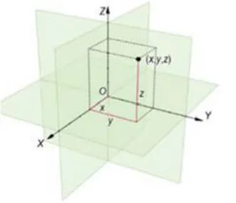
1.38.2 サバイバルセルについて（For the survival cell）基準は以下の原則に従って、ケースバイケースで定義される。
Xsc：後部ロールオーバー構造体の前方面、X0と平行。 Ysc：車両中心線、Y0と同じ。 Zsc：サバイバルセル基準面、サバイバルセルの最下点でZ0に平行。「sc」はサバイバルセル（Survival Cell）の略。1.39顧客（Customer）顧客はエンドユーザーとして定義される。つまり、競技参加者である。第2条：一般原則2.1 ACO／IMSAの任務および基本原則後述の技術規則はACO／IMSAよって発行される。本規則が明確に認めていないことは禁止される。車両はいかなる状況であっても、ドライバーのコントロール下になければならない。2.2規則の改定本技術規則は、タイトルに定められ実施される選手権（「選手権」）に適用され、例
P.9外的な状況において、その年の１月１日以降に変更することができる。ただし、ACO／IMSAが安全を理由にして実施する改定は事前通告または遅延なく施行される。2.3危険な構造安全な車両を製造することは、コンストラクターおよび製造者の責任である。ACO ／IMSAは、車両の安全な構造を確保するために、あらゆる試験実施や情報を要求することができる。競技審査委員会は、危険とみなされる構造の車両を競技参加禁止あるいは除外することができる。2.4規則の遵守車両は競技期間中、いかなる時でも以下に全体的に合致していなければならない：
1. 本規則およびその付則2. 公認書式およびその他公式に提供される図面、仕様書などの関連情報3. 性能均衡化（BoP）調整4. 耐久コミッティの決定（WEC）およびIMSA技術コミッティの決定（IMSA）新たな設計あるいはシステムを導入する、または本規定のいかなる解釈においても不明瞭であると感じたコンストラクター／製造者は、ACO／IMSA技術部に解釈を問い合わせ、WECの競技では、耐久コミッティで検証することができる。規定解釈が新しい設計やシステムに関連する場合の連絡文書は以下を含んでいなければならない： a. 設計やシステムについての完全な記述b. 該当する場合は図面や概略図c. 提案される新しい設計がその他の車両部品に対して及ぼす直接的影響に関する当該コンストラクター／製造者の意見d. そのような新しい設計やシステムを使用することに起因する考え得る長期的因果関係や新たな進展に関する当該コンストラクター／製造者の意見e. 当該コンストラクター／製造者が、その新しい設計やシステムが車両の性能
を向上させると感じる使用方法や特性の詳細2.5車両寸法の計測すべての計測は、車両が平坦な水平面に静止した状態で行われなければならない。関与する規定の意図するところを巧みに回避し無効にするためになされないことを条件に、特定の寸法について無制限の精度を想定することができる。2.6競技参加者の義務競技参加者は、イベント期間中いかなる時でも自己の参加車両が本規則に完全に合致していることをACO／IMSAテクニカルデリゲートおよび競技審査委員会に立証する義務がある。製造者／コンストラクターは、規則を遵守して車両を設計、製造、および公認する責任を負う。公認スタンプが押印された文書は、既存、継続中、潜在的、将来的、または未確認の規則違反に対する特別措置を意味するものではない。安全に関わる特性を除き、ハードウェアあるいは素材の物理的査察により、車両の
P.10設計、構成要素および機構は、本規則に合致していることが証明される。規則への合致を保証する手段として、ソフトウェアの査察の結果を機械的設計の根拠とすることはできない。第3条：ボディワークおよび寸法3.1全体寸法これらの規則に記載されている最大値または最小値に関しては、公差は適用されない。3.1.1 高さACO/IMSAとの合意に基づき公認されたピトー管、アンテナ、および関連するフェアリングを除き、ボディワークのいかなる部分も、基準面上方1,060mmを超えてはならない。
3.1.2 ボディワークの幅ボディワークの全幅は2,000mmを超えてはならない：
3.1.3 オーバーハング車両のいかなる部分も、以下を超えることはできない：
フロントホイール中心線の前方1,100mm リアウイングについてリアホイール中心線の後方850mm ボディワークについてリアホイール中心線の後方750mm 3.1.4 全長ボディワークの全長は5,100mmを超えてはならない：
3.1.5 ホイールベース車両のホイールベースは3,148mmで、セットアップ調整用に±5mmの余裕を持たせて設計される。3.2ドアドアは、第１３条１０項２に詳記される開口部を通じて、コクピットの通常の出入りを提供しなければならない。開口（ヒンジ）あるいは施錠（ロック）装置は、緊急の場合に、コクピットの外部からと同様に内部からも、グローブを使用し、ドア全体が直ちに解放されるように機構設計されていなければならない。開口（ヒンジ）あるいは施錠（ロック）装置は、シグナルカラーでマーキングされていなければならない。3.3ウインドスクリーン＆ガラス部分
3.3.1 ウインドスクリーンポリカーボネート製（厚さ：最低6mm）あるいは同等の素材製の、一体構造のウインドスクリーンが義務付けられる。ウインドスクリーン最前部の位置は、サバイバルセルフロントロールオーバー構造
P.11の後面から前方900mm±50mmでなければならない。ウインドスクリーンは、マーシャルがNo.4アレンキー（六角レンチ）とTridairボルトを使用して取り除くことができなければならない。電気的な霜取り装置が認められる。
3.3.2 ガラス部分ポリカーボネート製のサイドウインドウ（最低肉厚2.0mm）が義務付けられる。追加のフレームおよびドライバーの冷房用吸気口／スクープを取り付けることができるが、しっかりと取り付けられなければならず、第１３条１２項に規定されるドライバーの視界を妨げてはならない。コクピットから空気を引き出すための最小40cm2の開口部を、各サイドウインドウの後部に、あるいは各コクピット出入り口部に作らなければならない。3.4ボディワーク
3.4.1 一般ボディワークは１つのみが公認できる。ボディワークの調整可能な空力装置（ADD=adjustable aerodynamic devide）（フロントまたはリアウイング、単一要素のフラップ、ダイブプレーン、ガーニー）は１つだけ使用できる。AADが車両の中心線と交差しない場合は、一対の装置（車両の両側に１つずつ）が許可される。この装置の位置がどのようなものであっても、車両は常に本規則に定められた空力基準を満たさなければならない。このADDの調整方法は： ウイング／フラップの回転角度は、最小角度と最大角度が公認されており、これらの制限値間の任意の増分が認められる。 同一部品のトリミングまたは取り外し（ダイブプレーンまたはガーニー）は、公認された部品のみ車両に取り付けることができる。AADは車両の中心線に対して対称でなければならない。車両走行中の可動および／あるいは変形可能なボディワーク部品／要素は、禁止される。ボディワークのスプリットライン上にフォイル／フィルム／テープを追加することは次の領域では使用してはならない：ドア、ワイパー、ハンドル、ラッチ（開き戸錠）、安全プル、リフティングバーの穴、給油ハッチ、冷却／ボディワークの開口部（ブレーキ冷却を除く）。特に明記されていない限り、ボディワークに切れ目がない場所ではテープの使用は許可されない。車両走行中に、自動的に、および／あるいはドライバーが制御し、空気流を変更する一切の装置は、本規定で明らかに許可されていない限り禁止される。コックピットの冷却を目的とする場合、電力が150W未満で、出口がコックピット内にある場合に限り、冷却ファンを使用することが許可される。標準的な冷却目的（コックピット、エンジン、ハイブリッドシステム、ギアボックス、ブレーキ）および特定のフラップ目的（スプリッター、リアウイング）を除き、原則として空気の通過は許可されない。3.4.2 上部ボディワーク3.4.2.1 フリーボックス上部ボディワークのジオメトリは、第３条のすべての基準および下位条項が遵守さ
P.12れ、そのジオメトリが第１３条に詳述されたドライバーコックピットのアクセスおよび視界のテンプレートに適合していることを条件に、指定されたフリーボックスのボリューム内では自由である。以下の画像は、許可されたフリーボックスの説明である：
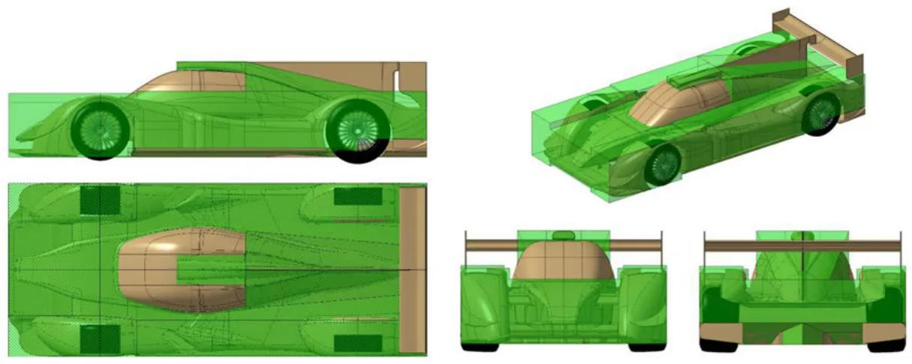
フリーボックスの容量は以下のように定義される： i) フリーボックス F1車両前部から前部車軸中心線まで、下図のような断面を使用し角柱状に押し出したもの。このボリュームの幾何学的限界は以下の通り： 車両前端と前部車軸中心線にX方向で囲まれる。車両中心線に対して車幅最大まで対称に配置される。車幅1000mmのアウトボードで基準面から上方700mmに位置する平面。車幅1000mmを超え基準面から50mmおよび上方600mmに位置する平面。
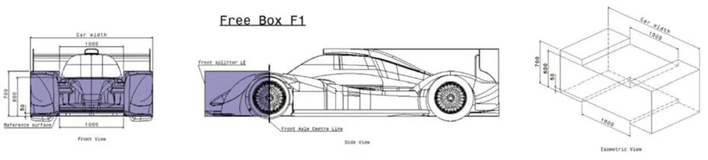
ii) フリーボックス F2前部車軸中心線から、リアウイングを取り外した車両の最後端まで伸びる容積。この容積の幾何学的限界は以下の通り： 前部車軸中心線とリアウイングを取り外した車両の最後端とでX方向に囲まれる。車両中心線に対して車幅最大まで対称に配置される。フロントインボードフロア装置およびフロントアウトボードフロア装置のフリーボックス容積（それぞれ第３条５項５および第３条５項６）を減算したもの。第３条５項１で定義されたフロア下面可変Z高さは：
P.13フロア下上面と基準面上700mmとの間の垂直方向で、車両中心線から500mmおよび550mmの位置の平面のアウトボードで直線的に逓減する。前部車軸中心線から後方400mmに位置する前後方向面。車両中心線から550mmの位置にある平面のアウトボードで、アンダーフロア上面と基準面上725mmの間に垂直方向。前部車軸中心線の後方400mmと後部車軸中心線にある前後方向の平面。車両中心線から550mmの所にある面のアウトボードで、基準面から200mmから725mmまでの垂直方向。後部車軸中心線と後部ボディワークの端に位置する前後方向の平面。車両中心線から550mmのところにある面のインボードで、アンダーフロア上面と基準面から上方600mmとの間の垂直方向。前部車軸中心線と後部ボディワークの端に位置する前後方向の平面。
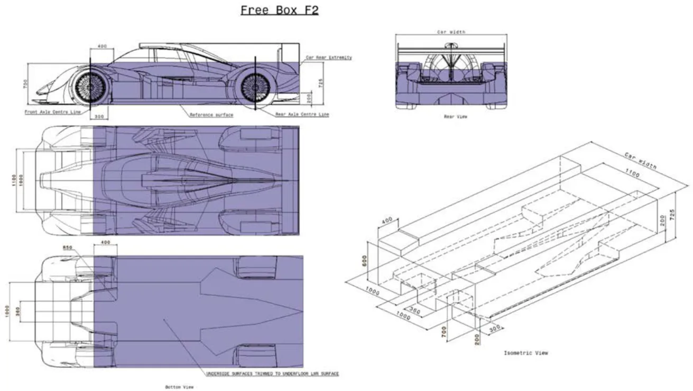
iii) フリーボックス F3シャシー後方、フリーボックスF2の上部に位置する角柱状の押し出しで、エンジンカバー表面のスタイリングの自由度を高めることを目的とするもの。この容積の幾何学的限界は以下の通りである：
X方向は，後部ロールオーバー構造体（Xsc）の垂直前面および後部ボディワークの最端部によって境界される。フリーボックス F4の後面とボディワーク最後端部にそれぞれ位置する、フィン垂直端と基準面の上方600mmの間の線形逓減部。 Xscの最大シャシー幅と車両中心線に対して500mmの幅に対称に配置された平面視での線形逓減部。
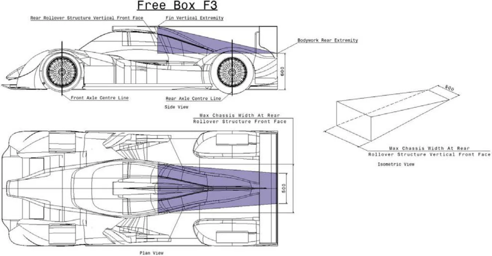
iv) フリーボックス F4公認されたICE空気取り入れ口の最前部から後方へ角柱状の押し出し。容積の幾何学的限界は以下の通り：
公認されたICE空気取入口の最前方点とXsc.によってX方向に囲まれる。前後方向車両中心線に対して対称に320mm。 Z方向は、エンジンカバーフィンの最高点とサバイバルセル外表面との間。
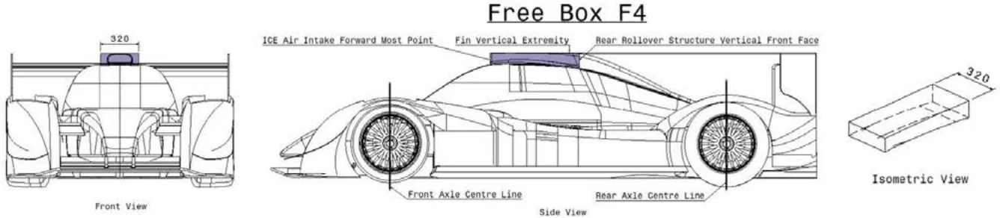
3.4.2.2 クイックリリース固定部クイックリリースの固定具は、外側から見えるようにし、明確に表示しなければならない（対照的な色の矢印）。
3.4.2.3 給油カップリングシステム近辺のボディワーク接合部すべての接合部は，エンジン室内またはコクピット内へのいかなる漏出も防止するように設計されなければならない。給油カップリングの外部部品は、外から見えて構わない。
P.153.4.2.4 パネル上のシャシーボンドシャシーおよび／またはドアボンドは、すべての視界およびアクセシビリティテンプレートの要件に適合している場合、以下に許可される： シャシーの前部では，許可された関連のフリーボックスの範囲内になければならない。 Z600mm以上のサバイバルセル表面（以下、青緑色で表示）。ドアの表面公認されたサバイバルセル外面から40mmの表面オフセット内になければならない。
z600mmから上のシャシー表面
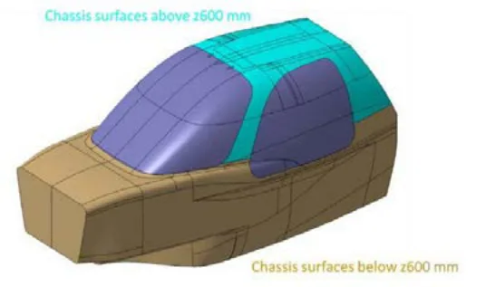
z600mm以下のシャシー表面
3.4.2.5 空気取り入れ装置a) 第３条４項３に適合していなければならない。b) 上から見てボディワークの周囲から突出してはならず、またボディワークに対して動いてはならない（ただし、フロントブレーキダクトは、入口面がボディワークから100mm以上離れていることを条件に除外される）。c) ボディワーク表面から50mm（エンジン吸気口は100mm）以上突出してはならない。計測は、空気取り入れ開口部の最高点から水平な幅100mm以上のボディワーク要素まで垂直に行う。d) 車両の頂部に設置される場合、領域はウインドスクリーン上部線、サイドウインドウ、およびドア開口部の最後点に接する垂直および横方向の平面で画定され、吸気口（複数含）はウインドスクリーンの最高点の後方に位置しなければならない。e) ブレーキ冷却：ブレーキ冷却の調整のため、ブレーキ冷却ダクトの入り口を部
分的または全体的に平らな硬質プレート粘着剤で塞ぐことが許される（一般的にはメッシュにブランキングが施される）。２０２５年以降、テープの使用は禁止される。f)ドライバーの冷房：ウェット天候用タイヤが車両に装着されている間のみ、水の浸入を防ぐことのみを目的として、コックピットの冷却入口を外側からテープで貼る。テープは不透明で、遠くからでもよく見えるもの（黄色など）でなければならない。
3.4.2.6 フロントフェンダー開口部a) 各フロントホイールの上に１つ以上の切り抜き部が義務付けられている。b) 上から見た場合、切り抜き部は以下の通りでなければならない：
i.合わせて145,725 mm2以上のエリアを有すること。ii. 平均面積の中心がフロントホイール中心線軸上にあること。iii. 最外端が、Y方向で測定した場合、フロントフェンダー外端から30mm以上
P.16離れた位置にあること。iv. 最内端が、Y方向で測定した場合、フロントフェンダー外端から350mm以下の位置にあること。v. X方向で測定したとき、最前部の端がフロントホイール中心線軸から370mm以内にあること。vi. X方向で測定したとき、最も後方にある点がフロントホイール中心線軸か
ら後方370mm以内であること。c) ルーバーは切り抜き予定エリアの内側に追加することができるが、ベースフェ
ンダー表面から上に出てはならない。ルーバーを切り抜き予定エリア内に含む場合は，正味の「露出」面積が145,725mm2以上でなければならない。
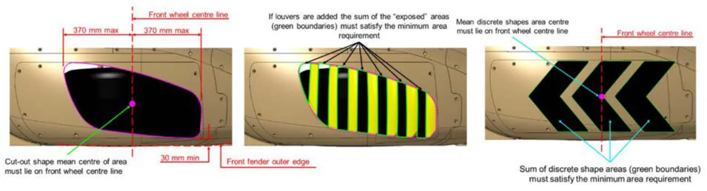
3.4.2.7 リアフェンダー開口部a) 各後輪の上に一つ以上の切り抜きがあることが必須である。b) 上から見て、切り抜き部は以下の通りでなければならない：
i.合わせて100,700 mm2以上の面積を有すること。ii. 平均面積の中心がリアホイール中心線軸線上にあること。iii. 最外縁が、Y方向で測定した場合、リアフェンダー外縁から50mm以上離れた位置にあること。iv. 最内縁が、Y方向で測定した場合、リアフェンダー外縁から400mm以内にあること。v. 最前点の位置が、X方向で測定したときにフロントホイール中心線軸から370mmを超えて前方にないこと。vi. 最後方の点が、X方向で測定したとき、フロントホイール中心線軸の後方
370mm以内に位置すること。c) ルーバーは切り抜き予定エリアの内側に追加することができるが、ベースフェンダー表面から上に出てはならない。ルーバーが切り抜き予定エリア内に含まれる場合は，正味の「露出」面積が 100,700mm2以上でなければならない。
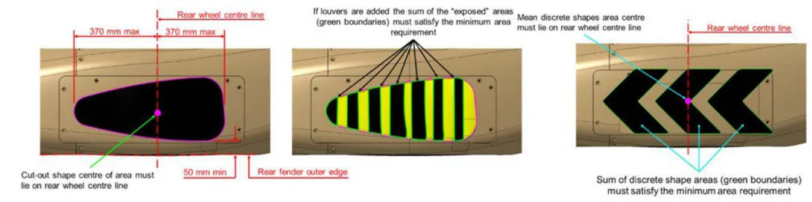
3.4.2.8 ボディワーク表面の最低高さ上方から見たとき、ボディワーク上部の目に見える部分はすべて、次のように定義される表面から下にはみ出してはならない： サバイバルセル後面の前方400mmに位置する基準面から上方400mmの点と、サバイバルセル後面の基準面から上方450mmの点の間の線形逓減部。逓減幅はボディワーク幅の最大値から300mmを引いた値で、前後方向車両中心線に対して対称に配置されていること。コックピット後面と後部車軸中心線の前方415mmの垂直面および横断面との間の基準面からの最低高さ450mm。幅はボディワーク幅の最大値から300mmを引いた値で、前後方向車両中心線に対して対称に配置されていること。後部車軸中心線から前方415mmで、基準面から上方450mmと、後部車軸中心線から後方450mmで、基準面から上方300mmとの間の線形逓減部。1200mmの逓減幅は、前後方向車両中心線に対して対称に配置されていること。
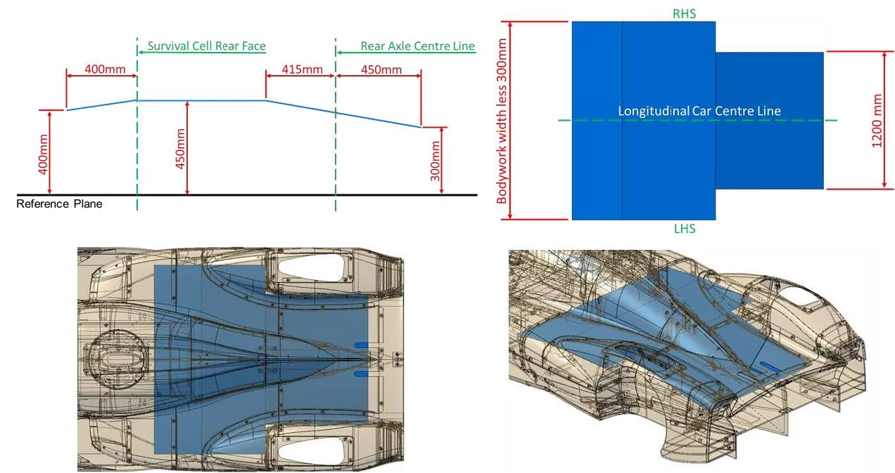
P.183.4.2.9 ボディワーク後方出口面積ボディワーク後端部のYZ平面に平行な平面で測定した場合、ボディワーク後縁のプロファイル、XZ平面から横方向に±600 mm離れた垂直線、および基準面から200mm高い水平線で囲まれた領域は、160,000mm2以上なければならない。ボディワーク後縁のプロファイルは、前後方向車両中心線に対して対称でなければならない。異なる等エリアボディワーク後縁TEプロファイルの例：
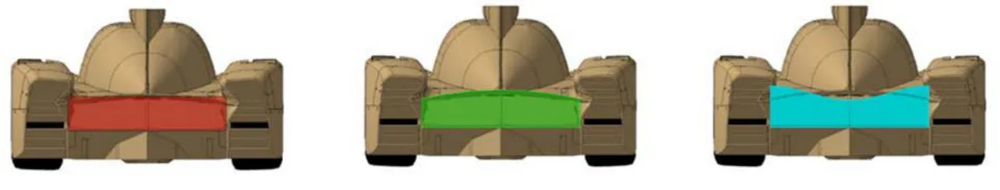
3.4.3 ボディワークの視認性基準3.4.3.1 側面から見たボディワーク構造ボディワークを側面から見た場合、ボディワークは、第３条２項４.６および第３条２項４.７に記載する開口部を除き、ボディワークに空隙や切り抜きがなく、車軸中心線の高さの上方でコンプリートホイールの全周を覆っていなければならない。ホイールアーチは、外側から見て、そこ専用として開いていなければならない。3.5ボディワーク底面3.5.1 一般前部車軸中心線から後方では、スキッドブロック（第３条５項９）およびディフューザー部品（第３条５項３）を除いては、いかなる完全に懸架された部品も基準面から下へ突出してはならない。開口部としては、車両吊り上げジャッキの穴、地上高を測定するセンサーの穴、閉鎖ハッチ（メンテナンス作業用、データムパッドアクセス用）、ESS排気口、およびオーバーフロー燃料パイプに必要なもののみが許可される。第３条５項２～６で定義された幾何学的構成要素をアンダーボディCADテンプレートファイルにより図解する： ‘’LMDH_UNDERBODY_TEMPLATE_CAD_MODEL_D10.0’’アンダーボディCADテンプレート サーフェスカラーキー： ✓固定サーフェス - 赤✓可変サーフェスまたはオプションサーフェス - シアン✓フロアモジュラリティサーフェス - マゼンタ✓フリーボックスボリューム - 緑✓車両基準ジオメトリ – 黒
P.19ベースとなるアンダーフロア：
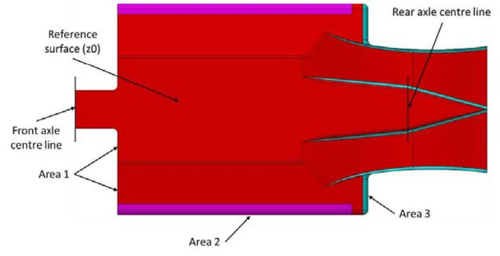
ディフューザーのアドオンとフリーボックスを備えたアンダーフロアベース：
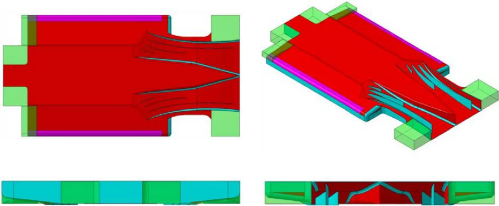
3.5.2 基準面a) 車両の下部に、平坦な、連続的で、堅牢なアンダーボディCADテンプレートファイルに合致する基準面が義務付けられる。基準面の下側が完成車両のすべての垂直高さを計測検査する基準として使われる。b) サバイバルセルに特有のすべての垂直寸法について、サバイバルセルの底面と一体化する平行な表面は、特有の基準として使用されなければならない（第１条３８項２および第１３条２項に記載されたとおり）。c) エリア1のボディワーク接合部：ボディワークの他の部分と結合するために、
基準面は最大半径 50mmで専ら上向きに湾曲することができる。XZセクションが第３条５項７で規定されている追加面と交差するところでは、半径は垂直接線を達成する必要はない。
3.5.3 リアディフューザーa) 車両の後部下側に、１枚の平坦な、連続的で、堅牢な傾斜面（リアディフューザー）が義務付けられる。b) 基準面に対して傾斜があり、アンダーボディCADテンプレートファイルで定義された最大容積（寸法・幾何学的形状）に適合していなければならない。c) リアディフューザーを垂直パネルにつなげるため、最大半径25mmが認められる。
P.20d) ディフューザー横方向パネルは、基準面から下方に突き出すことはできない。
e) リアディフューザーに最大8枚の垂直整流版を追加することができる。その表面は： 基準面に対して垂直でなければならない。車両中心線に対して対称に配置されていなければならない。基準面から下方へ伸びてはならない。3.5.4 側方部品a) これらは基準面（第３条５項１および第３条５項２項参照）の左右両側にある部品である。前部車軸中心線の後方で、それらはアンダーボディCADテンプレートファイルに従い、基準面に対して傾斜面を形成していなければならない。b) エリア1と3のボディワーク接合部：ボディワークの他の部分と接合するために側方部品は，専ら上方に最大半径50mmで湾曲させることができる。第３条５項４ f項に詳記されるリアタイヤフェアリングが装着されている場合、エリア3の半径は、フェアリング垂直後面下端と交差することなく、フェアリング垂直後面と交差するような適切な大きさにする必要がある。c) エリア2のボディワーク接合部：ボディワークの他の部分と接合するために、側方部品は車幅の範囲内で、専ら半径 50±1 mmで上方に湾曲させることができる。アンダーボディCADテンプレートファイルの容積"OUTER FLOOR"範囲内で、フロア幅を100mmまで変更することが可能である。d) 以下のものに囲まれた容積の中： ディフューザーの側端に位置する垂直面ディフューザーの外壁面を垂直方向に外挿し、基準面から上方200mmの水平面と完全に交差させたもの。基準面から上方5mmにある水平面。基準面から上方200mmにある水平面。ディフューザー後端とディフューザー後端から前方465mmに位置する垂直面。リアフェンダーのボディワークとディフューザー外壁をつなぐボディワークを追加しなければならない。この容積は、アンダーボディCADテンプレートファイルの容積「FREE BOX VOLUME - OB DIFFUSER」で表現されている。横から見たとき、また下から見たとき、ボディワークの表面は連続していなければならない（すべての表面が横から、下から見えていなければならず、連続していなければならない）。また、フェンス、ウイングレット、ターニングベイン、ウイングプロファイルがあってはならない（これらに限定されない）。後方から見たとき、ボディワーク表面の後縁の最下点は、基準面から100mm以上高くてはならない。
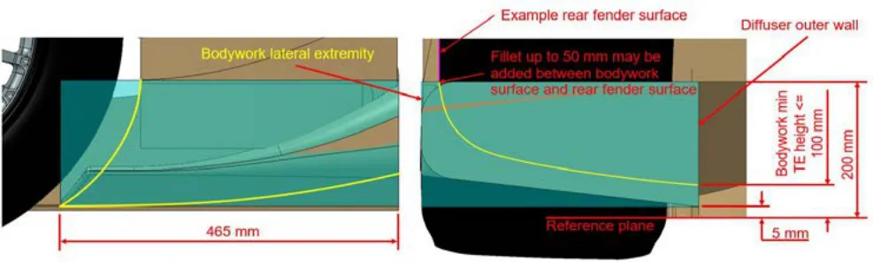
P.21ボディワーク表面とリアフェンダー表面との間に ５０ｍｍのフィレットを追加できる ボディワーク最小TE高さ 基準面e) ガーニー装置は、ディフューザー側面パネルのアウトボードで許可されている。
装置の下面は、床下側面の傾斜面上に位置しなければならない。f)アンダーボディCADテンプレートの"REAR TYRE FAIRINGS"の面で表されるリアタイヤフェアリングが車両に装着されてもよい。フェアリングのX方向の位置は，後部車軸中心線に対して固定されている。Y方向、Z方向のフェアリング位置は固定される。下図の黄色い面で示されるリアコーナーの半径は、最大50mmまで変化させることが可能である。
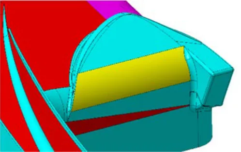
3.5.5 フロントインボードフロア前後方向車両中心線に対して対称に配置された１組の２次元押し出し成形（Z方向）ターニングベインが、アンダーボディCADテンプレートファイルの「FREE BOX VOLUME - FRONT FLOOR TURNING VANES」にて表現される容積に認められる。これらの厚さは5mmから10mmの間で一定とする。ターニングベインは、床下のエリア１に接続させなければならない。各ターニングベインは、第３条５項７.ｆ項に詳記されるボディワークの取付けがない場合に限り、１本のステーを使って追加的にシャシーに接続することができる。第３条５項７.ｆ項に規定するボディワーク構造を装着している場合、ターニングベインはボディワークの平面視シルエット範囲内に収まるものでなければならず、車両の下から見えるボディワーク表面から上へはみ出してはならない。ターニングベインとボディワークとの接合部に10mmまでのフィレットを付けることができる。
3.5.6 フロントアウトボードフロア以下で定義される容積に、車両中心線に対して対称に配置された最大6枚の垂直フェンスを追加することができる： 前部車軸中心線から後方300mm。前部車軸中心線から後方550mm。車両中心線の両側、フロア外側の端へ500mm。フロアに義務とされている基準面。この容積は、アンダーボディCADテンプレートファイルの容積「FREE BOX VOLUME - OB FRONT FLOOR VANES」で表現されている。フェンスは断面が一定で厚さ4mm以上でなければならない。整流版とフロア面の交差部には、最大10mmの半径を適用することができる。
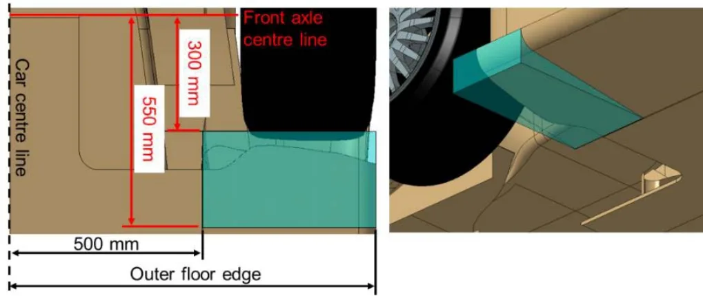
3.5.7 フロント部分a) 以下に位置する領域：
前部車軸中心線の前方最低幅1,000mmを超える部分の車両の懸架部品はすべて、基準表面の上方50mmを超えて配置されなければならない。さらに、この領域において、シャシーおよび／あるいはノーズボックスの上面と下面の間を気流が通過するようなボディワーク（例：Sダクト）は認められない。車両の懸架される部分は一切、基準面から上方50mm以上に位置していなければならない。b) 以下に位置する領域： 車両の前部輪郭の後方、前部車軸中心線の前方400mm、車両の全幅までの部分、のボディワークの下側から見える部品はすべて： 開口部、溝あるいは切り抜き部のない連続した表面を形成しなければならない、第３条１０項２の硬さの基準を満たしていなければならない。c) ノーズボックスの長さに関する追加のオーバーハング規定：前部衝撃吸収構造（FIAS）の長さに関する自由度を高めるため、ボディワークは前部車軸中心線から前方に最大1100mmまで伸長させることが許されている。上方から見た場合、ボディワークは次のように定義される表面内に収まっていなければならない： 長さ400mmで前部車軸中心線から前方1100mmの線と、長さ1000mmで後部車軸中心線から前方1000mmの線（車両中心線に対して対称に配置される）との間の線形逓減。前部車軸中心線から前方1000mmでFIASの最後部の面に位置し、幅1000mmの長方形（車両中心線に対して対称に配される）。この領域におけるボディワーク高さの最小許容値は、基準面から上方100mmとする。
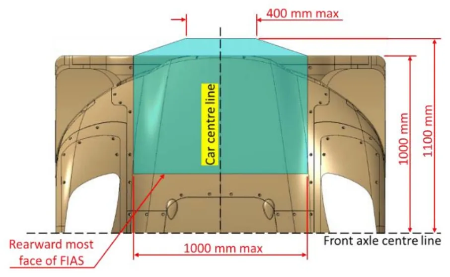
スプリッター前縁の後方スプリッター後縁の前方車両中心線から両側に850mm 基準面から下にZ +200mm車両下部から見えるすべてのスプリッター表面（フラップを除く）は、切断、開口部、溝、フェンス、ウイングレット、ターニングベイン、およびウイングプロファイルのない連続した表面を形成していなければならない。この容積では、Yに位置するXZ整列平面で下から見えるスプリッター表面の一切のセクションは、１つの前縁と最大１つの後縁だけを持たなければならない。直径30mmの球体は、この表面（金型面）の下からも上からも１回だけ接触しなければならない。
以下で定義される容積に：
スプリッター後縁の後方前部車軸中心線の前方車両中心線の両側に850mm 基準面から下にZ+200mm車両下部から見えるボディワーク表面はすべて、ウイングレット、ターニングベイン、およびウイングプロファイルのない連続した表面を形成していなければならない。フラップ装置は、フロントボディワークエリアにおいて、メインスプリッターのプロファイルをその後縁部にて振り動かすことを明確な目的として許可されている。フラップのジオメトリは以下の通りでなければならない： フラップの前縁は、Z方向で測定したとき、スプリッター後縁の最上端から上に位置していること車両中心線から左右350mm～550mmの範囲にY方向に押し出した１つの閉断面を使用し、フロントホイールアーチ部に突出してはならない翼弦の寸法が200mm以下であること基準面からZ+100mmからZ+250mmの間に位置すること
P.24フラップ翼幅に渡るスプリッター後縁の最も後方の点に位置するYZ整列平面と前部車軸の中心線との間に位置することスプリッターとフラップ上面との間に１本の支持体を用いてスプリッターに取り付けられていることフラップのジオメトリのうち、Y方向に位置する350mmと550mmの間の部分のみ、ボディワーク調整可能な空力装置として使用することができる。以下によって定義されるフラップジオメトリの上方および後方に位置する容積内には、サバイバルセル以外のボディワークは認められない：
車両中心線の両側350mmと550mm 前部車軸中心線上と、フラップが公認された位置にある時に、フラップ後縁の最も後方の点に位置するYZ軸に整列した平面フラップが公認された位置にあるとき、フラップ後縁の最上部点と、その75mm上の平面にあるXY軸に整列した面e) スプリッターの形状は、以下によって定義される基準領域と同じかそれ以下の面積でなければならない： 前部車軸中心線から前方500mmにある垂直面、前部車軸中心線から前方1000mmにある垂直面、フロントボディワークの最大幅に等しい幅に渡り、車両前後方向中心線に対して対称に配置された垂直面。基準領域は、前方の角に50mmの半径が適用されていなければならない。形状は、以下によって定義されるスタイリング領域まで前方に伸びていてもよい： 前部車軸中心線の前方1000mmに位置する垂直面、前部車軸中心線の前方1100mmに位置する垂直面、フロントボディワークの最大幅に等しい幅に渡り、車両前後方向中心線に対して対称に配置された垂直面。スタイリングエリアに位置する平面図形領域は、基準エリアに位置する平面図形領域から削除されなければならない。第３条５項７.a項で詳述されているスプリッターの翼幅方向の高さを遵守しなければならない。下から見たとき、最も外側の角度は最小半径50mm、その他の角度は最小半径25mmでなければならない。異なるスプリッターの平面図形状の例：
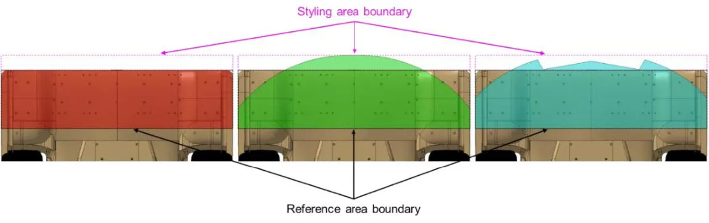
f)アンダーボディCADテンプレートファイルの「FREE BOX VOLUME - FRONT
P.25FLOOR TURNING VANES」で表される容積において，車両前後方向中心線に対して対称に配置される、車両の下側から見える一対の面を、各面が切断部、開口部、溝および切り抜きのない連続した表面を形成するように追加することができる。車両中心線から左右230mmの位置にあるZX軸に整列した平面のアウトボードで、一切のボディワークは、基準面（Z0、第5条1項を参照）の最大幅までY方向に押し出され、ボディワークとZX整列平面の交差部が１つの前縁のみとなり、後縁はない状態でなければならない。連続面外縁の平面図形プロファイルは自由とする。平面視で、各表面は以下に囲まれた領域をカバーしていなければならない：
ボディワークと車両中心線から230mmの位置にあるZX軸に沿った平面との交差部のうち最も前方に位置するYZ軸に沿った平面車両中心線から230mmのところに位置するZX軸に沿った平面容積"FREE BOX VOLUME - FRONT FLOOR TURNING VANES"のリア、リアインボードコーナー、インボード面下から見える表面上で、直径30mmの球体は、この表面（金型面）の下からも上からも１回だけ接触しなければならない。第３条５項５で詳述されているフロントフロアターニングベインは、この表面を評価する際には無視されるものとする。
3.5.8 地上高a) サスペンションを除き、地上高を変更するように設計された一切のシステム
は認められない（第１０条２項２参照）。b) 車両の懸架部分は基準面によって形成される面から下には認められない。た
だし下記の義務付けられるブロックおよび、第３条５項３.ｄ項と第３条５項３.ｅ項からのディフューザーのジオメトリは除く。3.5.9 スキッドブロック基準面の下に、１つのスキッドブロックを取り付けなければならない。それは以下の通りでなければならない：
最大４つの部分で構成できる。下図に合致していなければならない。フリクションエリアのいかなる点においても最低肉厚は20mmであること（下図参照）以下を除き、下の表面には、一切の穴、切り抜き、あるいはポケット（くぼみ）があってはならない： ◦スキッドブロックの固定に必要なもの◦車両持ち上げジャッキに必要となるもの。◦リア「データム」パッドにアクセスするために必要なもの（第１３条２項参照）リア「データム」パッドは保護しないこと。前後のフリクションエリアの垂直投影面で見て、穴、切り抜き、あるいはポケット（くぼみ）が上面にないこと。一体鋳造の前後の部品（下図に示される）は比重が1.3~1.45の均一な素材でできていなければならない。湾曲部分（含複数）（下図に示される）は平均密度が２未満の素材でできてい
P.26なければならない。ブロックと基準面との間に空気が一切通過することのないような方法で、車両中心線の左右対称に取り付けられなければならない。スキッドブロックの前後端部は前後方向に200mmの長さに渡り、21mmの深さに面取りをすることができる。最大直径3mmのシールは、スキッドブロック装着時に厚みがなければ許容される。下から見て、スキッドブロックを基準面に取り付けるために使用されるファスナーは以下のものでなければならない：
◦下面全体が車両の下から見えるように取り付けられ、基準面から19mm以下であること。◦チタン製の２つのファスナー（フロントとリアに１つずつ）を追加して、スキッドブロックを取り付けなければならない。それらは車両中心線に沿って対称に配置され、フリクションエリアに配置されなければならない。寸法は40mm（縦方向）×40mm（横方向）でなければならない。下面が車両の下から見えるようにしなければならず、新品の状態では、基準面から25mm離れていなければならない。
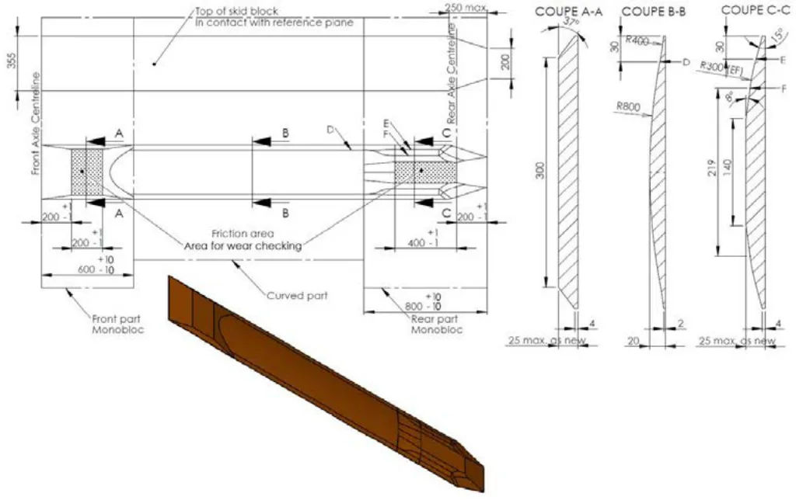
3.5.10 ブレーキダクト各ホイールについて，ブレーキディスクの内面に沿って空気冷却を行うための単純なブレーキフランジが、以下によって定義される容積の中だけで認められている： ブレーキディスクの内側摩擦面によって定義される平面（新品時）、 ブレーキディスク（新品時）の内側摩擦面に平行な面を車両内側へ40mmオフセットしたもの、 リムの内径。上記で定義された容積（ブレーキフランジ）の外では、ブレーキダクトと冷却ホースは、ブレーキディスクとキャリパーに空気を送るという冷却目的のみであるべきで、空力性能には全く寄与しないこと。したがって、パイプはシンプルな形状であるべきで、空力的なプロファイルはなく、
P.27フェンスあるいはウイングレットが取り付けられていないこと。また、リムの内側の容積を埋め尽くすようなものであってはならない。ホース／ダクトの数は制限されないが、その総断面積は１ホイールあたり200cm²を超えないこと。フロントブレーキへのホースまたはダクトは、スプリッター後縁の上面とフラップ後縁から40mm未満となってはならない。各ホイールについて、以下の領域内にのみ、冷却装置を追加することが許される： ブレーキディスク（新品時）の内側摩擦面によって定義される平面、 ブレーキディスク（新品時）の外側摩擦面に平行な面を車両外側に向けて20mm
オフセットしたもの、 リムの内径。3.6リアウイング調整可能な（リアウイングが調整可能装置である場合のみ調整可能な）リアウイング装置を車両の後部に常に装着しなければならない。完全なウイングアセンブリは、以下の要素で構成される。ウイングエレメント垂直な支持具翼端板
3.6.1 ウイングの要素a) ウイングの要素は最大２つまで許容される（主翼とフラップ）。フラップ要素を使用する場合、その翼弦は主翼の翼弦より小さくなければならない。各要素は、単一の閉じたプロファイルを使用して作成されなければならず、そのプロファイルは、リアウイングの長さに沿って拡大縮小したり、ねじったりすることができる。主翼の後縁は、基準面からの高さが一定で、前後方向の位置が一定でなければならない。２つのウイング要素を使用する場合、要素間の最小距離（スロットギャップ）は、ウイング要素とY方向に平行な垂直面との交差部を用いて測定した場合、一定値でなければならない。要素（含複数）は、設計されたすべての位置において、水平方向300mm×垂直方向150mm×横方向1900mmの容積に収まっていなければならない。容積は以下のように配置されなければならない： 容積の上面は基準面から上方965mm以内にあること。容積の後面は、ボディワークの最後部から後方最大100mmに位置していなければならない。
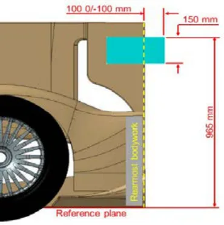
P.28b) ウイングはコックピット内では調整できないように取り付けられなければな
らない。c) デュアルエレメントのデザインは、主翼に対するフラップの位置が固定され
ていなければならない。d) 最後方エレメントの上面に「ガーニー」装置を取り付けることができるが、
すべての設計位置で上記の300×150×1900の容積内に収まることを条件とする。
3.6.2 リアウイングと垂直サポート（支持体）の取り付けa) リアウイングは、リアウイングメインプレーンとトランスミッションケース
の間に接続されたシングルオーバーウイング支持体またはシングル/ダブルのアンダーウイング支持体（複数含）を使用し、車両に強固に固定しなければならない（強固に固定するとは、取り付けに一切の自由度がない状態という意味である）。リアウイング要素の局所的固定部は、互いの間に一切の自由度がないこと。b) シングルオーバーウイング支持体の設計基準。支持体が整流板と連続しない場合、水平方向の長さは最大400mmに制限される。支持体は第３条７項のすべてのポイントを満たしていなければならない。表面は平らで、車の前後方向の中心線と平行でなければならない。前端は丸みを帯び（一定の半径で）、後端（後部の縁）は20mm以内で傾斜することができる。c) アンダーウイング支持体の設計基準。シングル/ツインアンダーウイング支持体の設計は、以下のような支持を有していなければならない：
主軸を中心に対称な同一のプロファイルを使用すること。各支持体は、そのスパンに沿って一定の押し出しでなければならない。シングル支持体の場合、前後方向車両中心線に対して対称に配置されていなければならない。ツイン支持体は、前後方向車両中心線に対して対称に配置され、各支持体の最もアウトボードの位置で測定して最大で横方向に300mmの間隔がなければならない。リアウイングのメインプレーンの下面と完全に交差していること。下面とは、下から見たときに見えるメインプレーンの表面と定義する。
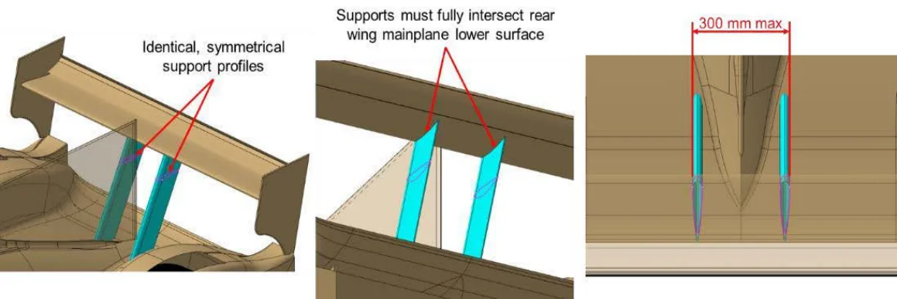
P.293.6.3 エンドプレート（翼端板）a) エンドプレートは２つの部分から成ってよい（１つはリアウイング上で、もう１つはボディワーク上）。b) リアウイング上に取り付けられる部分は、765mm×350mmの長方形に納まらなければならず、最低面積は1000cm2を有していなければならず、300mm× 150mmの最低寸法を有していなければならない。c) それらは、第３条１０項５を満たしていることを条件に、ボディワークに取り付けることができる。d) 端部は一定の5mm最小半径で湾曲させ、厚さは一定で、最低10mmでなければならない。e) リアウイング要素容積の下面から上では、表面は平坦で前後方向車両中心線を通る垂直面に平行であること。f)リアウイング要素容積の下面から下は、表面は非平面であってもよい。g) 表面は，リアウイングのアウトボード位置から50mmインボードに位置するZXに沿った平面と、最もアウトボードの位置との間にあるように横方向に配置されていてもよい。h) 上記で許可されたボディワークへの固定部を除き、ボディワーク要素をエンド
プレートに取り付けてはならない。3.7エンジンカバーフィン垂直な堅牢なフィンの装着が義務付けられている。このフィンは以下の通りでなければならない：
車両中心線に対して前後方向で平行であること。車両の前後方向軸上に完全に位置し、中心線の両側で厚みが等しいこと。フィンの厚さは一定でなければならない（最小10mmから最大20mmの間）。車両にホイールを取り付けた状態で、フィンの目に見える面積（側面から見て）が両側で300,000mm2超でなければならない。フィンは穴や開口部のない連続したものでなければならない：エンジンの空気取り入れ口をフィンと統合させることができるが、第３条７項のすべての規定が遵守されていることを条件とする（肉厚については、最大1400mmの長さに渡って一定とすることはできない）。このフィンには、その他の装置を固定することはできない。上端は基準面から上の最大高さが1050mmと1060mmの間でなければならない。上端が直線でないのは、前縁とウインドスクリーンの上端から後方100mmとの間に妥協した領域で、基準面から1000mm以上高い位置にある場合に限る。ウインドスクリーンの上端とは，Y=0におけるウインドスクリーンの最も後方にある点のX位置と定義される．フィンの後縁はリアウイングボックスの前面から前方50mm以上でなければならない。リアウイング支持体がフィンを局所的に延長する場合は，この制約は適用されない．下端はボディワーク表面から25mmを超えて離れてはならない。フィンは、以下で囲まれた領域の65%以上をカバーしなければならない： 上端の最大高さ最大高さの下方150mm リアウイングボックス前面から前方50mmと前方1450mm。一般的なフィン端部のジオメトリの制約
P.30フィンの前縁と上縁は一定の半径で丸くすることができる（半径はフィンの厚さの半分に等しくなければならない）。後縁部は傾斜させるか、20mm以下の楕円形とすることができる． 頂端/前端、頂端/後端、底端/前端、および底端/後端の間の最大半径は50mmまで認められる。フィンがエンジンカバーに取り付けられている場合、最大半径50mmが両方の部品の間に認められる。
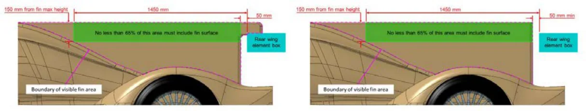
フィン最大高から150mmこの領域の65%以上はフィン表面に含まれなければならないリアウイング要素ボックス目に見えるフィンエリアの境界線3.8排気管出口3.8.1 一般原則原則として、排気流を利用して車両の空力特性向上に影響を与えるような装置は禁止されている。また、エンジントルクを生成するという主な目的を超えて、エンジンマッピングを使用して車両の空力特性を人為的に変更することはできない。3.8.2 排気構成排気構成の目的は、ボディワークと排気出口の流れの間の幾何学的制約を定義することにある。排気出口ボックスは、第１条３８項１で定義された座標系に従って、頂点が次の座標に位置する直方体として定義される。 Ｘ＝２６３０ｍｍ、ボディワーク最後端から前方２００ｍｍのＹＺ平面 Ｙ＝±５４０ｍｍ Ｚ＝４２０ｍｍおよび６６０ｍｍ 有効な排気テールパイプ出口は、各パイプの最も内側の表面を通る、出口での主軸に垂直な単一の平面断面として定義される。排気流がこの軸と一致していない場合は、ＣＦＤ評価を使用してこの軸を定義する。各有効な排気テールパイプ出口は、排気出口ボックス内に完全に配置しなければならない。排気出口ボックスには、すべての有効な排気テールパイプ出口と最大２つの有効な排気テールパイプ出口を含めなければならない。ただし、第３.８.２ ａ項で記述されている場合、最大１つの有効な排気テールパイプ出口を含めなければならない。ａ. 有効な排気テールパイプ出口が、ボディワーク最後端から前方２００ｍｍと３
P.31５０ｍｍのＹＺ平面の間に完全に配置されている場合は、１つの有効な排気テールパイプ出口が許可され、その面積は８０００ｍｍ２より大きくなければならない。
ｂ. 有効な排気テールパイプ出口が、ボディワーク最後端の前方３５０ｍｍのＹＺ平面より前方にある場合、各有効な排気テールパイプ出口の面積は５０００ｍ ｍ２以上で、すべての有効な排気テールパイプ出口面積の合計は１００００ｍ ｍ２以上でなければならない。各有効な排気テールパイプ出口の幅／高さの比は３.５未満でなければならない。排気テールパイプの最後の１５０ｍｍにわたって、各排気テールパイプの最も内側の表面の断面積は、一定の形状と面積を維持しなければならない（ＣＦＤ分析による）。排気テールパイプ（含複数）の最後の１５０ｍｍにわたって、排気テールパイプの形状はＸＺ平面に対して対称でなければならない。分割排気テールパイプは、排気テールパイプの最後の１５０ｍｍを超えることはできない（個別のウェストゲートは、一定の断面積の前にメイン排気パイプに入らなければならない）。排気テールパイプに沿ってシステムへの漏れやシステムからの漏れ（絶対的最小限で避けられない場合を除く）は許可されない。排気テールパイプ出口の後、排気流はエンジンカバーの上面（穴、開口部など）より下には流れてはならない。有効な排気テールパイプ出口の法線は、次の角度範囲に従って方向付けられなければならない： ＸＹ平面に対して、±１０度 ＸＺ平面に対して、±１０度3.6.3 ボディワーク除外ゾーン一般ボディワーク除外ゾーン: 次の方法で形成される表面： 各有効な排気テールパイプ出口表面をその法線に沿って (つまり、有効な排気流の方向に沿って) 後方に伸ばす 結果として得られる伸ばされた表面をこの表面の法線に沿って２５ｍｍ外側にオフセットする排気テールパイプ外面に隣接する局所的ボディワークを除き、これらの一般ボディワーク除外ゾーン内にボディワーク表面があってはならない。エンジンカバーテール除外ゾーン： 次の要素で形成される表面： 有効排気テールパイプ出口をベースとする円錐体 有効排気テールパイプ出口の法線に沿って、法線に対して後方±５度に広がる
P.32 エンジンカバーテールガーニーの表面は、これらの一般ボディワーク除外ゾーン内では許可されない。エンジンカバーテール自体の半径が２００ｍｍ未満の場合、ガーニーと見なされる。
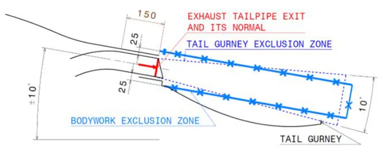
排気テールパイプ出口とその法線テールガーニー除外ゾーン
ボディワーク除外ゾーンテールガーニーこれらの規制と一般原則に加えて、ＡＣＯ／ＦＩＡは、排気流の相互作用の可能性に関する形状をいつでも受け入れるかどうかを決定する絶対的な権利を留保する。
3.8.4 ＣＦＤシミュレーションＡＣＯ／ＦＩＡは、シミュレーションされた排気流が様々な条件で車両の空力性能に与える影響を評価できるように、必須のＣＦＤ評価プロセスを実行するため、必要に応じて形状とデータが提出されることを要求する。これらの提出のタイミングについては、公認スケジュールを参照。必須のＣＦＤ評価プロセス用のジオメトリが提出されると、排気ジオメトリと一般周囲ボディワークは、ＡＣＯ／ＦＩＡとの事前の合意なしに変更してはならない。3.9空力基準3.9.1 公認過程公認を取得するためには、車両のすべての空力構成が空力基準を満たさなければならない。これらの基準は、ACO/IMSA の公式風洞で管理される。すべての空力構成は、空力マップを抽出するために、ライドハイトのフルスキャンが行われる（ボディワーク姿勢の違いによるドラッグ、ダウンフォース）。すべての車両は、最も空力的に優れた仕様構成で風洞実験に臨まなければならない。公認の手続きは、この技術規則の付則に記載されている。
3.9.2 "空気力学的構成"の定義空力的構成とは、以下の組み合わせで定義される：
コンプリートボディワークフロントウイングまたはリアウイング角度ブレーキブランキング（風洞試験で提示され、要求される空力基準を満たすものは、公認を取得することができる。） ACO/IMSAが適切と判断したその他の要素（例：ガーニー、フィラー、ダイブプレーン、ルーバーなど）。ブレーキブランキングは公認対象であり、以下のものでなければならない： ダクトインレットに設置された単純なクロージングプレート風洞試験で提出されたもの要求される空力的基準を満たすものパワーユニット冷却オプションを含む他のタイプのブランキングは禁止される。
P.333.9.3 基準公認を取得するためには、すべての車両は、本技術規則の付則で基準が規定されたターゲットウィンドウ内の空力性能を達成しなければならない。3.10偏向
3.10.1 一般的偏向ACO/IMSAは、車両が走行中に動きがあるとみられる（あるいはそのように疑われる）ボディワークのいかなる部分にも、負荷／偏向試験を実施する権利を留保する。コンストラクターはACO/IMSAの指示に従い、パッドおよびアダプターを提供しなければならない。その他の基準の中で、ACO/IMSAは弾性変形領域にわたって負荷／偏向曲線の線形性を検討する。一切の非線形性は塑性変形領域になければならない。原則として、X/Y/Zいずれの方向においても、100Nの（押す／引く）負荷がかけられた時に、ボディワークのいかなる部分も5mmを超えて動かないこと。負荷をかける方法は、試験される部分の特有な形状によって決まり、保持方法はその部分に特有の圧力をかけない（その挙動に直接影響を与えることができる）。負荷をかけている時に、その部分はそれでも技術規定を遵守していなければならない。ブラシがけ、ゴム製ブーツ、ゴム製封印は、ゴムを拾い上げるのを防ぐためにのみ受け入れられる（そのような装置は公認過程の間に提示されること）。
3.10.2 フロントボディワーク部品第３条５項７（フロントスプリッター）に示されるボディワーク要素のどの点も、次に示される以下の垂直負荷の組み合わせがかけられた時に、垂直方向に15mmを超えて偏向することはできない。主要負荷が垂直下方向に、当該部品の底部表面に構造的に統合され届くことのできる８つのM5インサートによってかけられる。これらのインサートの基本的要件は： 車両の前後方向の垂直面に対して左右対称に配置されなければならない。スプリッター後端部から100mmのところに位置する４つの１列とし、２つの側部のインサートは最大車幅（または、負荷を掛けるポイントが物理的に不可能な場合はそのセクションの幅）から100mmに位置し、残りの２つは４つすべてが等距離になるよう配置される。スプリッター前端部から後方100mmのところに位置する４つの１列とし、最大車幅（または、負荷を掛けるポイントが物理的に不可能な場合はそのセクションの幅）から100mmの位置に２つの側部のインサート、残りの２つは４つすべてが等距離になるよう配置される。フロント部の下側の構造上、M5インサートが上記の位置に設置できない場合、ACO/IMSAと代替の位置について合意することができる。負荷は各インサートに均等にかけられ、合計8000Nまでとする。
3.10.3 エンジンカバーエンジンカバー後端部は、100Nの負荷がかけられたときに垂直に5mmを超えて歪んではならない。後端部あるいはガーニーに沿って、いかなる点にも負荷をかけることができる。こ
P.34れらの負荷は15mm幅の適切なアダプターを使用してかけられ、そのアダプターは当該コンストラクターが供給しなければならない。負荷／偏向比は、一定したものでなければならず、最大200Nまでの負荷、最大10mmまでの偏向に適用される。3.10.4 エンジンカバーフィン長さ400mmの内部高60mmですべての内端部が最大半径5mmのＵ字ツールを使用し、フィンの頂点端部において、静加重試験が適用される。Ｕ字ツールの中間は、どちらの端部もオーバーハングしないように、（最も後ろの位置が車両の後部車軸になるように）フィンの頂点端部に沿って、どこにでも置くことが出来る（横方向から見て融合した半径は無視される）。負荷は400mmのＵ字ツールの中心にかけられる。この試験は、元の場所にてフィンに２回実施することができ、それによりシャシー／ボディワークの取り付け部も試験することができる。それぞれの試験で、フィンのたわみは、1000Nの負荷で（どの点にても）100mm以下であり、一切の恒久的変形は、負荷を１分間はずした後で3mm未満でなければならない。
3.10.5 リアウイングおよび垂直支持体の搭載エンドプレートのボディワークへの固定を解除した状態で、ウイング支持体はリアウイングの表面に均等にかけられた10kNの垂直荷重に耐えることができなければならない。
3.10.6 リアウイング下記のすべての負荷／偏向試験は、車両にウイングをつけた状態で実施しなければならない。負荷／偏向レシオは、リアウイングの全体の機能範囲にわたって一定でなければならない。最後端ウイング部は、100Nの負荷がかけられたときに垂直に2.5mmを超えて歪んではならない。後端部に沿って、いかなる点にも負荷をかけることができる。これらの負荷は15mm幅の適切なアダプターを使用してかけられ、そのアダプターは当該競技参加者が供給しなければならない。負荷／偏向比は、ウイングの操作範囲全体に一定したものでなければならず、最大200Nまでの負荷、最大5mmまでの偏向に適用される。
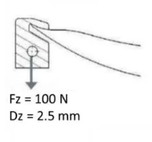
3.10.7 ウイング支持体ボディワークとエンドプレートの固定部とリアフラップを連結し（走行状態にあるように）、主平面および垂直支持体のどの点も（第３条６項２参照）、次の組み合わせられた垂直負荷がかけられた時に、垂直方向に15mmを超えて歪んではならない。
P.35主平面の表面に２４００Ｎの負荷がかけられる。負荷は、下方向へ均一に、また同時に、主平面の翼弦の長さの25~75%となるX点に、中心線について164mm、452mmおよび740mmの点に、ウイングの前端部からその後端部まで、あるいは存在する場合はフラップのオーバーレイの点まで伸張する、幅200mmの区別のできる類似の６種のパッドを使用してかけられる。それらの最も上になる表面は、400Nの負荷がかけられる前は水平でフラップの上部点の上方になる。各エンドプレートを下向きに引っ張る1000Nの負荷
3.10.8 フロントスキッドブロックスキッドブロックの前部は、2500Nの負荷がフリクション表面のどの点にも垂直にかけられた場合に、5mmを超えて歪んではならない。負荷は直径50mmのラムを使用して、上方向へかけられる。スキッドブロックの前部は、フロントホイールを地面から吊り上げることのできる力が加わった時に、15mm以上垂直方向に歪んではならない。基準表面上のボディワーク前部とサバイバルセルとの間にある支柱あるいは構造物を、両方の試験のいかなる部分の最中であっても、負荷がはずされた時を含めて、非線形の歪みあるいは速度依存性たわみを認めないことを条件に、この試験に提示できる。
3.10.9 リアスキッドブロックスキッドブロックの後部は、5000Nの負荷がフリクション表面のいずれかの点に垂直にかけられた場合に、5mmを超えて歪んではならない。負荷は直径50mmのラムを使用して、上方向へかけられる。基準表面上のボディワーク前部とサバイバルセルとの間にある支柱あるいは構造物を、試験のいかなる部分の最中であっても、負荷がはずされた時を含めて、非線形の歪みあるいは速度依存性たわみを認めないことを条件に、この試験に提示できる。3.11ボディワークの構造
3.11.1 一般事故後のコース上の破片の拡散を避けるため、フロントホイール近辺のフロントボディの外皮は、主に破片を封じ込めることを目的とした材質で作られていなければならない。ACO/IMSAは、そのような部品がすべて規定の目的を達成するために作られていることを納得しなければならない。3.11.2 公差製造上の問題を解決し、本規定に反する設計を防ぐために、公認されたジオメトリおよび規定に対しボディワークに以下の公差が認められている： ボディワーク全般（スロットギャップ、スプリッター、およびディフューザーの高さを含めて）：±3 mm スロットギャップ、ディフューザーストレーキの高さ：±1mm ガーニーの高さ：±0.5mm ウイングプロファイル角度：±0.2° その他の公差は、公認書式で指定することができる。
P.36ボディワークの公差とホイールの位置決め：
1. ボディワークは、上記の公差で技術規則の要件を満たさなければならない（つまり±3mm、アンダーボディ表面は±2mm）。2. 設計上、前部車軸中心線はフロントスキッドブロックの前縁と一致し、後部車軸中心線は新車時の後部スキッドブロックの後部面取り開始位置と一致する（理論上の車軸中心線）。3. フロントとリアのオーバーハングは上記の定義に準ずるものとし、技術規則の要件を満たさなければならない。4. 前輪と後輪は、そのジオメトリを調整する際に動くことができる。前後輪の位置の公差は±5mmとし、技術基準の要件を満たさなければならない。3.12空力的安定性第２条３項の遵守で、ACO/IMSAが期待するのは、製造者の車両は空力的な構成に関わらず、常に空力的に安定していることである。各車両は、最低限の空力的安定性を確保するために、いくつかの安全基準を満たさなければならない。製造者は、ACO/IMSAにCFD計算結果を包括的報告書の形で提出することで、上記の基準を実証する必要がある。これらの基準に関する完全な手順と承認要件は、本規則の付則に記される空力公認プロセスに記載されている。第4条：重量4.1重量配分車は最低重量が1030 kg以上になるように設計されていなければならない。燃料もドライバーも含まない車両の重量は、競技中常にBOP表に定義されている最低重量を下回ってはならない。イベント期間中に交換された可能性のある一切の部品の重量検査は、車検員の裁量にて実施される。4.2重量配分重量配分（完成車両に対する前輪の）は、公差±0.5%で公認されていなければならない。このチェックのために、車両は燃料なし、ドライバーなしの完全な状態でなければならない。競技中に確認する場合、重量配分の測定値は、指定された公差の範囲内（BOPバラストを含む）で公認された値に適合していなければならない。4.3バラストバラストは、指定された場所に固定され、取り外すのに工具が必要であり、すべての取付部は、あらゆる方向への最低25Gの減速度に耐えることができることを条件に使用することができる。許可されたバラストを車両に取り付ける方法は、ACO/IMSAテクニカルデリゲートの評価対象となり、ACO/IMSAテクニカルデレゲートが必要と判断した場合には、シールを固定することが可能でなければならない。
P.37最低重量1030 kgを達成するためにバラストが必要な場合、その位置と値を公認書類に宣言しなければならない。可動式バラストは禁止されている。車両は、（最低車両重量を上回る）最大+50kg（２０２５年からは+70kg）のBOPバラストを受け入れることができるように設計されていなければならない。すべてのBOPバラスト位置は前輪と後輪の車軸の間に装着されなければならず、公認書類に宣言しなければならない。衝突試験用部品の周囲に配置されたすべてのバラストは、衝突試験中も存在していなければならない。フロントおよびリアの衝撃吸収構造体の垂直方向の突起部には、バラストを搭載することはできない。4.4液体重量は、タンクに液体が残った状態で、競技中いつでも検査できるが、プラクティスセッションあるいはレースの終了後、車両は重量計測前にすべての燃料が抜き取られる。第5条：パワーユニット5.1一般5.1.1 定義特定の用途で明らかに許可されていない限り、リア駆動系に接続された第５条２項のエンジンおよび第５条３項のERS以外の装置を使用して車両を推進することは認められない。
5.1.2 パワートレイン性能パワートレイン性能は、本規則第１９条に定める手続きに従って提出、承認、公認されなければならない。パワートレイン性能は、いかなる場合においても、以下のパワーカーブ（BoPの観点から調整されるローマージンおよびハイマージンを含む）を超過してはならない。
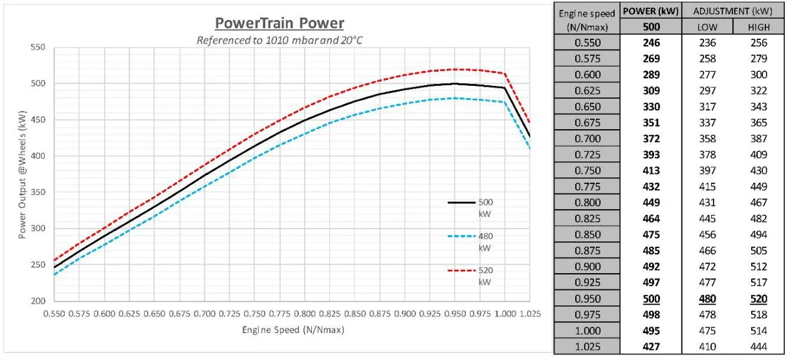
P.380.55×Nmax以下のパワートレイン最大性能は246kW以下でなければならない。パワーユニットの使用は、複合パワーが最大パワー制限値以下であれば自由（設定、モード）。最大パワートレイン性能は、参考条件として示されている。環境条件により性能が低下する場合は、各イベントの開始時に以下の補正係数を用いて最大複合出力曲線が環境条件に合わせて補正される。
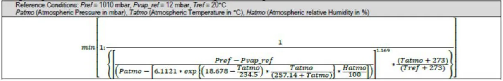
5.2.1定義エンジンの設計は、以下の制限を除き自由とする：
ガソリン4ストロークエンジンのみ使用可エアスプリング使用可 VVTを使用することができる ICEの回転数は10,000rpmに制限される各車両から発せられる音量は、すべてのコース上でのセッション中、100dB(A)の制限値を超えてはならない。測定は、コース端から最大15mの距離、コース地上高から3mの高さに設置されたマイクを用いて行われる。背景騒音レベルは、測定レベルより少なくとも10dB(A)低くなければならない。全ての測定は、クラス1騒音計を用いて実施される。ACO/IMSAによって承認され、パワートレイン性能基準に適合するOE製造者ブランドエンジンは、OE製造者ブランドで定型化されたボディワークとともに使用される場合に限り、４つの認可されたコンストラクターズシャシー（車両）のうちの１つへの搭載が認められる。
5.2.2 パラメータa. 最大エンジン長640mm（サバイバルセル後面からベルハウジングの前面取付面まで）。b. フライホイールで測定した最大エンジン長は、640mm（サバイバルセルの後面からフライホイールの後面まで）。c. 基準面からのクランクシャフト中心線の高さは、最低106mmである。d. エンジン重量の最小値は、以下に定義された周囲で180kgである：
| 項目 No. | エンジンの機能/システム/コンポーネントのリスト | NAエンジン | TCエンジン |
| 重量 | 重量 | ||
| 1 | カムカバー、シリンダーヘッド、クランクケース、サンプおよびすべ てのギアケース範囲内すべてのエンジン部品。 | | |
| 2 | エンジン圧送部品（例：コンプレッサーの入口から出口まで（ホイー ルを含む）、タービンのインレットからアウトレットまで（ホイー ル、シャフト、ベアリング、ハウジングを含む）。ウェストゲート、 | | |
| ポップオフバルブまたは類似のものを含む。 | |||
| 3 | エアフィルタからシリンダーヘッドまでのエンジン空気吸入システ ム（例：パイプ、インタークーラ、プレナム、トランペット、スロッ トルなど）。ターボチャージャーのコンポーネントを除く。 | | |
| 4 | エンジン排気系 エンジン排気フランジから出口まで。 | | |
| 5 | エンジン搭載の燃料系部品（例）高圧燃料ホース、燃料レール、燃料 噴射装置、アキュムレータなど） | | |
| 6 | エンジン搭載電気部品（例：配線束、センサー、アクチュエーター、 点火コイル、オルタネータ、スパークプラグ）。 | | |
| 7 | すべてのエンジンクーラントポンプ、オイルポンプ、スカベンジポ ンプ、オイルエア分離器、および燃料高圧ポンプ（10 bar 以上を供 給）、および以下の関連部品：モーター、アクチュエーター、フィル ター、ブラケット、サポート、ネジ、ナット、ダボ、ワッシャ、ケー ブル、オイルシールまたはエアシール。 エンジンのコンポーネント 間のすべてのパイプまたはホース。油圧ポンプは除く。 | | |
| 8 | エンジンメインオイルタンク、キャッチタンク、およびそれらに接 続されているブリーザシステムと関連のフィルター、ブラケット、 サポート、ねじ、ナット、ダボ、ワッシャ、ケーブル、パイプ、ホー ス、オイルシールまたはエアシール | | |
| 9 | プログラマブル半導体を含む、または高出力スイッチングデバイス を含むECUまたは関連デバイス、および関連するブラケット、ネジ、 ナッ ト、ダボ、ワッシャ、あるいはエンジンに使用されるケーブル | | |
| 10 | エンジンを常時機能させるために必要なアクチュエーター | | |
| 11 | エンジンに使用するウォーターシステムアキュムレーター | | |
| 12 | エンジンに使用される熱交換器およびその関連付属品（パイプ、ホ ース、サポートおよびファスナーを含むが、これらに限定されない） | | |
| 13 | エンジンに使用される油圧システム（例：ポンプ、アキュムレータ） | | |
| 14 | エンジンに使用されるエンジン制御用油圧システムサーボバルブお よびアクチュエーター | | |
| 15 | 10bar未満の燃料供給ポンプおよびその関連付属品（パイプ、ホース、 サポート、ブラケットおよびファスナーを含むが、これらに限定さ れない）。 | | |
| 16 | エンジンエアバルブシステムに関連するレギュレーターやコンプレ ッサーなどの一切の付属装置。 | | |
| 17 | エンジンをシャシーに取り付けるためのスタッド、またはエンジン に取り付けられたギアボックス | | |
| 18 | エンジンとギアボックスの間のフライホイール、クラッチおよびク ラッチ作動装置 | | |
| 19 | エンジンオイル | | |
| 20 | エンジンに使用される液体。エンジンオイルを除く。 | | |
| 21 | エンジンに搭載されるバラスト | | |
| 22 | 通常はパワーユニットの一部でないワイヤハーネス | | |
| 23 | 追加構造エンジン側サブフレーム | | |
23追加構造エンジン側サブフレーム 5.2.3 エンジン制御a. トルクベースのエンジン制御方法が必要とされる。5.3 ERS
5.3.1 定義a. 共通シングルソースハイブリッド(ERS)キットb. キットに含まれる主なERSコンポーネント：
i.エネルギー貯蔵システム(ESS)
P.40ii. モータージェネレーターユニット(MGU) iii. インバーター／モーター制御ユニット（MCU）iv. DC-DCコンバーター(DCDC) v. 低電圧（LV）および高電圧（HV）ケーブル配線vi. リアブレーキ回路分配システム／ブレーキバイワイヤ(BBW) vii. 車両制御装置(VCU) viii. ERS冷却ポンプix. ESS室クロージングパネルとパワーエレクトロニクス搭載用フレームx. ERS充電ユニット(チャージャー) c. すべてのERSキットコンポーネントは密閉された装置であり、チーム、LMDh製造者、シャシーコンストラクター、車検員のいずれにも保守作業はできない。すべての保守および修理は、供給者側によってのみ行われなければならない。d. ERSシステムは、FIA付則J項第253条18の規格に準拠して設計、構築される。e. ERSシステムは、常にハイブリッドシステムマニュアルと性能均衡化モデルの
想定された範囲内で運用されなければならない。これらの制限内で運用されない場合、耐用年数が短くなり、自動的に性能が低下する可能性がある。
5.3.2 MGU a. 位置：クラッチシャフトと一体化したギア・メッシュでギアボックスの前部に取り付けられているP2オフ－アクシス。b. MGUは、従来のオルタネータとスタータモーターを置き換える役割を果たす。c. MGUの出力からクラッチシャフトへのギアは、使用中のさまざまなICEユニットのさまざまな動作を可能にするために交換可能である。i. MGUのギア比は公認され、ACO/IMSAの承認が必要である。ii. MGUの最高回転数は、いかなる場合も超過してはならない。これらの条件のいずれかが発生した場合MGUの最大速度を超えている： a. MGU速度 > 20,000 rpm、≧200ミリ秒b. MGU速度 ≥ 21,000 rpm iii. ERS システムは、20,000 rpm を超える速度でMGUトルクを制限する場合がある。（第5条3項10参照）d. ベルハウジング内に統合され、共通のギアボックスに取り付けられるMGUパッケージ。i. MGUとの最小クリアランスを遵守しなければならない。最新のギアボックスCADモデルで特定されているMGU排除領域との干渉は許されない。これについての情報は要求に応じて入手可能。
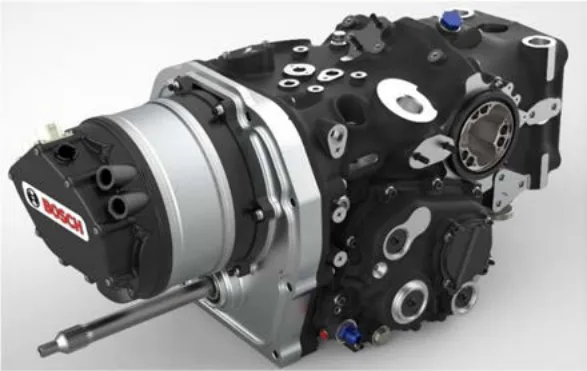
e. MGUは液冷式である。
5.3.3 MCU/インバーター
P.41MCU/インバーターは、ESSコンパートメント内に搭載され、液冷式である。
5.3.4 DC-DC a. DC-DCコンバーターは、ESSコンパートメント内部に搭載され，液冷式である。b. DC-DCコンバーターの入力電圧は、充電状態（SoC）最小から最大までのESS動作電圧の予想範囲に相当する。c. DC-DCコンバーターの出力は、メイン12V車両電気遮断器（マスタースイッチ）に接続される。d. DC-DCコンバーターは、最大4.8kWを供給し、ERSシステムとERS以外の車両
システムの間で分割される。ERSシステムDC供給は制御される。
5.3.5 ESS a. パッケージ：ESSは、サバイバルセル下面からアクセス可能なESSコンパートメント内部に搭載される。
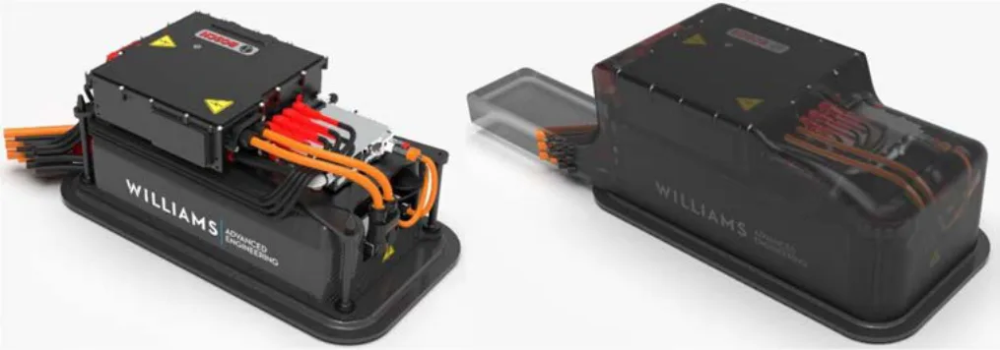
b. 標準的な動作温度におけるSoCの動作範囲内の性能は、ACO/IMSAが定義した
最大ERS出力レベルにおいて、すべてのWEC/IMSAサーキットに継続的に導入するのに十分である。
5.3.6 電気配線とコネクターa. ERSキットに含まれるERS電力線および制御線。b. ESSからインバータおよびMGUまでの総延長は、損失と質量の等価性のために
すべての異なるコンストラクター間で等しくされなければならない。
5.3.7 冷却装置a. ERSシステムに共通な冷却コンポーネントには、２台の冷却水ポンプとESSコンパートメント冷却液ラインが含まれる。b. 冷却性能基準は常に尊重されなければならず、24時間イベントを通してこれを達成するようコンストラクターにより設計されなければならない。c. 最小限の冷却要件：ERSシステムの文書を参照d. MGU/MCU/DCDCの冷却液混合物は、ハイブリッドシステム文書パッケージに
定義されたグリコール添加剤を用いて、50%グリコール/50%水および5%グリコール/95%水の範囲で選択できる。e. ESS用の冷却液は、ハイブリッドシステム文書パッケージで定義されている。f. MGU冷却回路のクイックディスコネクトドライブレークにチタンの使用が許可される。
5.3.8 車両制御装置(VCU) a. 制御構造
i. VCUはERSシステムおよび関連するサブシステム制御（すなわちMCUおよ
P.42びBBW）の最上位コントローラーである。◦ VCUは、LMDh製造者のICE ECUとERS/BBWシステム双方向リアルタイムテレメトリー間のインターフェースでる。◦ VCUとLMDh製造者のICE ECU間のパブリックCANバス◦ ERSのモニタリング◦トルク、回生、展開の要求信号への対応◦車検ロガー構造への統合ii. ECUとERS構成要素との間の直接的な通信は認められないが、一部のコマンド／要求はVCUからERS構成要素にミラーリングされる場合がある。iii. パラメータテーブルの中には、各LMDhに固有のものがあり、公認によって
制御される。b. 保証／許可
i. VCUの仕様構成、ソフトウェア、および設定は、チーム、シャシーコンストラクター、およびLMDh製造者からはアクセスできない。ii. ソフトウェアのバージョンは遵守されなければならないiii. ACO/IMSAは、ソフトウェアとパラメータテーブルを検証するために必要
なツールを用意する。
5.3.9 ブレーキバイワイヤ(BBW) a. リアブレーキ回路の自動電子プロポーショニングにより、油圧ブレーキトルクと電気回生トルクの間のブレーキバランスでドライバーをアシストするb. トルクマスター（OEM ECU）およびVCUによって共有される制御c. 従来のデュアルマスターシリンダーとバランスバー、またはタンデムマスターシリンダーを使用d. 電気的回生トルクが利用できない場合に完全な油圧ブレーキを確保するため
のパススルー待機モードe. BBWパラメータは各LMDh製造者固有のものであり、公認により制御される
5.3.10 ERSの一般性能a. ハイブリッドシステムの性能は、標準のハイブリッドコントロールユニットによって制御される。瞬時に利用可能なエネルギーと電力を決定するために、標準的な均衡化モデルを介して入力パラメータの範囲が使用される。これらのパラメータには、冷却システム性能、電力要求、バッテリーSoCが含まれる（ただし、これらに限定されない）。詳細については、ハイブリッドシステムドキュメントパッケージを参照のこと。b. 蓄積エネルギー（100～0％の使用可能SoC）：均衡化モデルによって定められた条件に従う。 エネルギー使用量は時間／距離によって規制されない。c. 展開力は、均衡化モデルによって定められた条件に従う。d. 回生電力は、均衡化モデルによって定められた条件に従う。5.3.11 対応するERS運用モードa. ERSシステムは以下の運用をサポートすることができる： i.回生：ブレーキ操作のみ、オフスロットル、トラクション制限、均衡化モデルの制約を条件とし、フリーii. 展開：ドライバー主導（条件付き制限あり）、均衡化モデルの制約を条件とし、フリーiii. 均衡化モデルの制約を条件とし、リンプホームモード（ERSのみで制限さ
P.43れた速度で走行するモード）iv. 均衡化モデルの制約と競技規則遵守を条件とし、ピットレーンでの ERS
のみの使用
5.3.12 ERSの解決a. ERS コマンドとデータフローは、ACO/IMSA 車両制御装置とACO/IMSA車検
ロガーとの組み合わせによりACO/IMSAによって解決される。これは、CAN入力、ハードワイヤード・センサー入力、および以下の通信バスを使用して実行される： ドライバー入力 ACO/IMSA ERS解決 車両入力
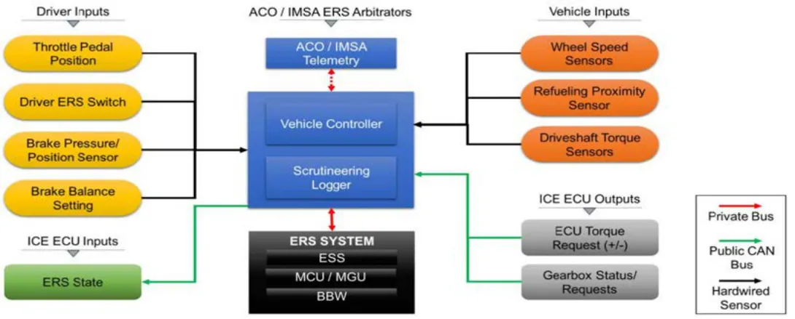
ﾌﾟﾗｲﾍﾞｰﾄBus ﾊﾟﾌﾞﾘｯｸ CAN Bus ﾊｰﾄﾞﾜｲﾔｰﾄﾞ ｾﾝｻｰ 5.4パワーユニットへのトルク要求5.4.1 リア・パワートレインに正のトルクを要求することができる唯一の手段は、サバイバルセル内に取り付 けられた単一のフット（アクセル）ペダルであり、ドライバーによってのみ作動する。正トルクとは、車軸ごとの両方の公認トルクセンサーの合計が0.2秒平均で正であるときと理解される。5.4.2 アクセルペダルの移動範囲の特定のポイントをドライバーに認識させる、またはポジションを保持することを支援するような設計は認められない。5.4.3 安全上の理由から、ICEが作動しておらず、車両が停止して移動可能な状態（ERSが作動している場合を含むが、これに限定されない）の時は常に、正トルクを要求するため、ドライバーは同時に２つの動作（１つは手動による操作）を行うことが求められる。燃料カップリング、エアジャッキ、および／またはその他のセンサーに関連する発進時の制御戦略を含む（ただしこれらに限定されない）、自動制御戦略は禁止される。
ｽﾛｯﾄﾙﾍﾟﾀﾞﾙ位置ﾄﾞﾗｲﾊﾞｰERSｽｲｯﾁ制動圧/位置ｾﾝｻｰ ﾌﾞﾚｰｷﾊﾞﾗﾝｽ設定ICE ECU入力ERS状態
ACO/IMSAﾃﾚﾒﾄﾘｰ 車両ｺﾝﾄﾛｰﾗｰ車検ﾛｶﾞｰ ERSｼｽﾃﾑ
ﾎｲｰﾙ速度ｾﾝｻｰ給油接近ｾﾝｻｰ ﾄﾞﾗｲﾌﾞｼｬﾌﾄﾄﾙｸｾﾝｻｰ ICE ECU出力ECUﾄﾙｸ要求ｷﾞｱﾎﾞｯｸｽｽﾃｰﾀｽ/要求
P.445.5パワーユニット制御5.5.1 各ドライブシャフトに供給されるトルクを測定する公認されたセンサーを取り付けなければならない（テクニカルリストNo.89）。ドライブシャフトは、±5500Nmのセンサー較正範囲と関連の較正サイクルに対応するよう設計されなければならない。これらの信号はACO/IMSAデータロガーに供給されなければならない。取り付けの詳細は、本規則の付則に記載される。これらのセンサーによって行われた測定または送信された信号を欺く目的および／または効果を持つ装置、システムまたは手順は、禁止される。
5.5.2 MGUのトルク要求の変動の周波数は、次のすべての場合に50Hz未満に制限される：
スロットルペダル位置 > 10%（車輪に正のトルクを要求する）フロントホイール平均車速 < 160km/h ギアチェンジが機能している状態でないリア軸トルク合計がゼロより大きいフロントブレーキ圧は5bar未満これはピットレーンには適用されない。5.6エンジン燃料システム
5.6.1 公認された「燃料流量計」（第６条６に定義）は、第６条６に従って燃料システムに統合させなければならない。燃料流量計の情報は、競技参加者の電子ユニットを経由せずに、直接ACO/IMSAデータロガーに送られなければならない。
5.6.2 さらに、エンジンに供給されるすべての燃料は、この公認メーターを通過しなければならず、また、すべてが、燃料噴射装置によって燃焼室に供給されなければならない。5.7エンジン付属品エンジンの付属品は，機械的または電気的に駆動することができる。電気駆動の付属品は，パワーユニットを含むいかなるドライブトレインにも機械的にリンクさせることができない。オルタネータ、スタータモーターは不可。5.9材質および構造 - 一般特定の用途で明らかに許可されている場合を除き，次の材質はパワーユニットのどこにも使用してはならない。a. マグネシウムベースの合金b. 体積比 2.0%v/vを超える他のセラミック、金属、炭素または金属間化合物を含む金属基複合材料（MMC's）で、金属マトリックスの融点より100℃高い温度で液相に溶解しないもの。c. 金属間化合物材質d. 白金、ルテニウム、イリジウム、レニウムを重量5％以上含む合金。e. ベリリウムを2.75%を超えて含む銅ベースの合金。
P.45f. 0.25%を超えるベリリウムを含むその他の合金クラス。g. タングステン基合金（クランクシャフトに組付けられる部品を除く）h. セラミックスおよびセラミックスマトリックス複合材質（ターボチャージャー
ベアリングについては除く）i.重量の2.5％を超えるリチウムを含むアルミニウムベースの合金j.ナノマテリアルを含む材料k. 未結合のナノ材料を含む断熱材5.10ストール防止ストール防止システムを装着している車両の場合、事故を起こした時にエンジンのかかった状態のまま放置されることがないよう、すべてのそのようなシステムは、ドライバーからの制御アクションがない場合、起動後１０秒以内でエンジンを切るよう設定されていなければならない。このようなシステムの唯一の目的は、ドライバーが車両の制御を失った際にエンジンがストールするのを防ぐことにある。システムが作動した際に車両が２速以上に入っている場合は、１速またはニュートラルへの複数回のギアチェンジが可能である。それ以外の状況では、クラッチのみが作動できる。このようなシステムが作動するたびに、クラッチは完全に切断され、ドライバーがクラッチ作動装置の全ストロークの95%を超えるストロークでクラッチを手動で操作してシステムを解除するまで、その状態を維持しなければならない。第6条：燃料システム6.1原則
6.1.1 すべての燃料配管は、エンジンが稼働中あるいはスタート時にのみ作動しなければならない。6.1.2 供給ポンプのタンクからコレクターに供給するスイッチは、エンジン停止あるいはエンジンストールで停止した燃料ポンプを再び作動させるために、メインスイッチとは別のスイッチを人が操作することでピットストップの間に入れることができる。6.2燃料タンク
6.2.1 燃料タンクは、FIA基準FT5-1999の仕様以上に合致またはそれ以上の単一ゴム製ブラダーでなければならない。承認された材質の一覧は、テクニカルリストNo.1に記載されている。6.2.2 上から見たとき、車載されているすべての燃料は以下に配置されていなければならない：
車両の前後方向軸から500mm以内。テンプレートH3の後方で、Xsc平面から500mm以内。
6.2.3 サバイバルセル外には、最大1リットルの燃料を保管することができるが、それはエンジンの通常の運転に必要なものに限られる。
P.466.2.4 低圧回路（FFMを含む）の圧力は、最大10barに制限される。10 barを超える燃料圧力は高圧と見なされる。6.3取り付けと配管
6.3.1 燃料タンクの開口部は、すべてブラダーの内部に接着された金属あるいは複合材のボルトリングに固定されたハッチもしくは取り付け部品で閉じられていなければならない。燃料に接触しているそれらのハッチまたは取り付け部品の合計面積は、70,000mm²を超えてはならない。ボルト穴の縁は、ボルトリング、ハッチあるいは取り付け部品の端から5mm以上離れていなければならない。
6.3.2 燃料タンクとエンジン間のすべての燃料配管には、自動閉鎖分離バルブを備えなければならない。このバルブは、燃料配管の取り付け具の破損に、または燃料タンクからの引き抜きに必要な荷重の50%未満で分離されなければならない。6.3.3 燃料を含むいかなる配管もコックピットを通過することはできない。6.3.4 すべての配管は、漏れが生じた場合でもコクピット内に燃料が溜まらないように取り付けられていなければならない。6.3.5 10barを超える圧力のかかった燃料を収容するすべての構成部品は、燃料タンクの外側に配置されなければならない。6.3.6 タンクの壁の一部であるすべての付属品（通気口、入口、出口、タンク給油口、タンク間の連結具およびアクセスホールを含む）は、金属製または複合素材製でなければならず、燃料タンクに接着されていなければならない。6.3.7 燃料タンクと公認の燃料流量計をつなぐ燃料配管は自動閉鎖分離バルブを備えなければならない。このバルブは、燃料タンクから燃料配管取付け具を引き抜いたり、破損するのに必要な負荷の半分以下の負荷で分離するものでなければならない。燃料流量計と燃料システムの間の燃料流量計および燃料ラインは、パワートレインの熱から遮断されなければならない。6.3.8 低圧燃料配管は、135℃の最高作動温度での最低破裂圧力が最大作動圧力の２倍以上を有していなければならない。6.3.9 高圧燃料配管は、最高作動温度135℃での最大作動圧力の２倍以上の最低破裂圧力を有していなければならない。6.3.10 計測ポイント後の流量比を増すおよび／または変更するような目的、および／あるいは効果のある装置、システムまたは手順は禁止される。6.4燃料タンクの給油口およびブリーザーパイプ
6.4.1 燃料タンク給油口はボディワーク外板から突出してはならない。燃料タンクと外気とを結ぶブリーザーパイプは走行時にあるいは車両が横転した
P.47場合に液体の漏れがないように設計されていなければならず、その排気口は：
コクピットの開口部から250mm以上離されていなければならない； 事故の際に破損しないような場所に取り付けられなければならない； ボディワーク表面から突き出してはならない； 重力式ロールオーバーバルブ、フロートチャンバー換気バルブ、および最大過圧200mbarのブローオフバルブを装備し、フロートチャンバー換気バルブが閉じているときに動作しなければならない； 基準面を通って出口を持つことが認められる。6.4.2 すべての燃料タンク給油口、通気口およびブリーザーは、燃料補給後の不完全なロックや衝突によって偶発的に開く危険を少なくするために、十分なロック機能を確保するように設計されていなければならない。6.4.3 車両は結合された燃料タンク給油口と通気口を備えなければならない。燃料タンク給油口は、車両の両側に取り付け可能でなければならない。6.4.4 車両の給油口および通気口はともにデッドマン機構の原理に合致した漏出防止ドライブレークカップリングを備えなければならず、開放状態の時にいかなる保持装置も組み込んではならない。6.4.5 カップリングの寸法：付則J項第252-5図（Ｂバージョン）の図解のみ。6.4.6 車両にカップリングが接続されている時に、ICEおよび車軸にトルクを供給する一切の電気モーターが始動することを禁止するため、少なくとも１つの近接センサーが義務付けられる。6.5給油6.5.1 常に、（車両ゼッケンのついた）給油装置および車両のタンクは、外気温度および大気圧に保持されていなければならない。それは常に付則Aに従っていなければならない。6.5.2 車両内で直ぐに使用するための燃料は大気温度よりも摂氏10度を超えて低くてはならない。この規則の準拠を確認する際に、大気温度とは、ACO/IMSA指名の天気予報提供業者が、一切のプラクティスセッションの１時間前あるいはレースの２時間前に記録した温度とする。この情報はWEC計時モニターあるいはIMSAビデオフィードにも表示される。6.5.3 燃料の温度を下げるための車載装置を使用することは、いかなる装置であっても禁止される｡車載燃料の貯蔵容量を増大させる目的および／あるいは効果のある一切の装置またはシステムは禁止される。重力に厳密につながっていない原則を持つ一切の装置あるいはシステムは車載が禁止される。6.6燃料流量計(FFM)
P.486.6.1 １つの公認された燃料流量計の使用が義務付けられる。この流量計は，各シリーズ固有の規則に従い、認定された研究所によって較正されなければならない。
WECの競技では、FIAテクニカルリスト45の燃料流量計をFIAテクニカルリスト44に従って認定された研究所で較正したものを使用する。 IMSAでは、セントロニクス社製のGT-100-01を使用し、セントロニクス社の認定された較正を受ける必要があります。較正は燃料流150時間までのみ有効である。6.6.2 燃料流量計は、供給ラインの高圧燃料ポンプの前に設置しなければならない。高圧燃料ポンプに供給されるすべての燃料の流れは、燃料流量計を通過しなければならない。燃料の戻りは考慮されない。6.6.3 メインの燃料流量計の供給ラインの燃料圧力を直接測定するACO/IMSA圧力センサーの装着が義務付けられる。6.6.4 FFMの設置は、第１３条１５項に基づいて行わなければならない。6.7燃料の排出およびサンプル抽出
6.7.1 競技参加者は車両からすべての燃料を排出させる方法を提供しなければならない。6.7.2 競技参加者は、イベント期間中常に車両から1.0リットルの燃料サンプルを抽出できる状態を確保しなければならない。フリー走行および予選セッションの終了後に当該車両が自力でピットに走行して戻らなかった場合、上述のサンプル量に加えて、ピットに戻るのに消費されたであろう燃料の量をも提供するよう要求される。追加の燃料量はACO/IMSAによって決められる。6.7.3 車両には、タンクから燃料を取り出すことができる自動閉鎖コネクターを備えていなければならない。このコネクターは、FIA承認（テクニカルリスト5）のもので、エンジンの高圧ポンプの前の供給ラインに取り付けられていなければならない（FFMコネクターとの併用も可能）。車両に搭載されている電動ポンプで燃料を除去できない場合、代表的な燃料サンプルを抽出していることが明らかであることを条件に、外部に接続したポンプを使用してもよい。外部ポンプを使用する場合は、ACO/IMSAサンプル抽出ホースを接続することが可能でなければならず、車両とポンプの間のホースは直径3インチでなければならず、長さ2mを超えてはならない。6.7.4 サンプル抽出手順は、エンジンを始動させることやボディワーク（サンプル抽出コネクターのカバーを除く）を取り外すことを必要とするものであってはならない。6.8 １スティントあたりの使用エネルギー１スティントあたりの使用エネルギーは、シリーズの特定BoP表により各イベントが定めるE（単位：MJ）を超えてはならない。
P.49第7条：エンジンオイルおよび冷却液装置と給気冷却7.1オイルタンクの位置すべてのオイル貯蔵タンクは、前後方向では、フロントホイールの軸とギアボックスケーシングの最後端との間に設けられていなければならず、車両の前後方向を軸としたサバイバルセルの側端から出てはならない。7.2オイルシステムの縦方向の位置オイルを含むすべての部分は、リアコンプリートホイールの後方にあってはならない。7.3オイルシステムの横方向の位置オイルを含むすべての部分は、車両中心平面から900mmより離れてはならない。7.4冷却液ヘッダータンク冷却装置の圧力は、水溶性の冷却剤が使用されている場合、4.75barAに制限される。7.5オイルおよび冷却液配管7.5.1 冷却剤や潤滑オイルが通過する配管は一切コクピット内を通過してはならない。7.5.2 すべての配管は、液体が漏れた場合にその液体がコクピット内に溜らないよう取り付けられていなければならない。7.5.3 油圧液配管の取り外し可能な連結部はコクピット内にあってはならない。7.5.4 低圧潤滑油配管は、135℃の最高作動温度で、41barsの最低破裂圧力を有していなければならない。7.6キャッチタンク
7.6.1 オープン式サンプブリーザーを１つでも有する場合、ブリーザーの排出口は、最低2.7リットルの容量を有するキャッチタンク内に設けなければならない。7.6.2 コースにオイルを噴出する危険性を回避するために、最低１リットルの追加の安全タンクを、下記の図面に従い、キャッチタンクとブリーザーの間に挿入しなければならない。7.6.3 この安全タンクの主な機能は、キャッチタンクのブリーザーにオイルあるいは油気が一切含まれないようにすることである。油気がこの安全タンクの上流で適正に処理されている場合、常に空の状態が維持されなければならない。7.6.4 安全タンクは： キャッチタンクから分離されていなければならない高さが100mmなければならない（内側での計測）
P.50高さすべてに渡って一定の区画が保たれていなければならない（底部の最大10mmの半径については例外とする） ACO/IMSAにより公認されたセンサーが装着されていなければならない。このセンサーは、オイルのオーバーフローの検知のため、下記の図面に示されるとおりに取り付けられなければならない。
7.6.5 最大レベルに達した場合、競技参加者はキャッチタンクを空にするため、直ちに自身のピットまたはガレージに入らなければならない。
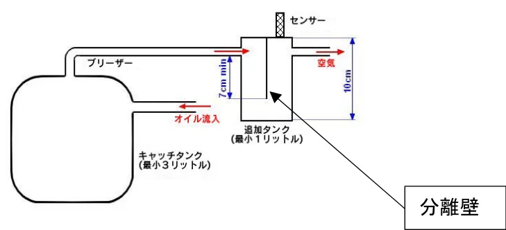
7.7油圧システム
7.7.1油圧配管油圧装置の圧力は300barに制限される。すべての油圧液を収容する配管は、最高作動温度204℃での作動圧力の２倍以上の最低破裂圧力を有していなければならない。自動閉鎖カップリングあるいはネジ留めのコネクターのついた油圧液配管のみがコクピット内に許可される。配管は、いかなる漏れが生じようともコクピット内に液体が滞留しないように取り付けられなければならない。配管は、それが柔軟なものである場合、カシメあるいは圧着式コネクターおよび摩擦と炎に耐え得る外部網材を有していなければならない。
P.51第8条：電気装置8.1油圧配管クローズドループ電子制御システムは、本規則で明確に許可されていない限り禁止される。ただし、以下の場合は明らかに許可されている： あらゆる電気モーター（例：ワイパーモーター、燃料ポンプ、電気制御されたギアシフトなどがあるが、これらに限られない）用。単一のギア選択機構の場合単一のクラッチ作動機構のためのものエンジン（ICE）制御用第５条に準拠したMGU制御用 A/Cシステム用補助電気回路管理制御（パワーボックス）用。ACO/IMSAは、イベント期間中、いつでも義務付けられる電子安全システムの動作をテストすることができなければならない。8.2補助回路およびバッテリー
8.2.1 補助バッテリーは、コクピット内の同乗者席に、あるいはESS室内配置されなければならず、強力に固定されなければならない。コクピットに配置される場合、第１３条９項２に従い、絶縁材で製作された防漏性のボックスの中に全体が保護されなければならない。バッテリーの固定部は、どの方向にも70Gの減速に耐えられるように設計されていなければならない。8.2.2 競技参加者は、装着が義務付けられた装置（データロガー、ADR、プロモーター情報表示など）の操作に必要な電力（最大16ボルト）を提供しなければならない。8.2.3 補助バッテリーを駆動用バッテリーあるいはESの再充電に決して使用してはならない。イベント期間を通して、補助の電気回路を供給するバッテリーの電圧は、60ボルト以下でなければならない。
8.2.4 補助回路は、内燃機関を作動させるための、信号、照明、通信のために使用される電気機器のすべての部品で構成される。エンジンの動作に使用される部品には、スロットル、点火、噴射、吸気、潤滑、燃料供給、冷却、ターボが含まれるが、これらに限定されない。エンジンを始動するための装置およびHV補助装置は含まれない。8.3灯火装置灯火装置は常に作動状態を保っていなければならない。車両には以下が取り付けられなければならない：
8.3.1 前部に： 8.3.1.1 最低２つの公認された前照灯を、車両の前後方向中心線に左右対称に、最低１３００ｍｍ離して装着する。計測は前照灯の中央で行われる。前照灯は白色の
P.52ビームを発光しなければならない。8.3.1.2 両側に方向指示器。それらはオレンジ色で、スローゾーンとフルコースイエローの条件を満たすための速度制限が適用されると同時に点滅しなければならない。スローゾーンとフルコースイエローの速度制限のための方策が車に実施されていなければならない。点滅周波数は4Hz（0.125秒ONの後、0.125秒OFF）。レインライトが作動している場合は、点滅はレインライトと反対であること。8.3.1.3 表示灯いかなる車両も、位置決めおよび彩色（青、赤あるいは緑色の変化色はなし）で、安全ライト（ＥＲＳ／医療用）の妨げとなる表示灯を使用してはならない。例としては次のようなものであるが、それに限られない：ウインドスクリーンの後方でいくつかの類似した色を使うことは認められない。フロントライトコンパートメント内では、任意の色が許可される。8.3.1.4 メインヘッドライト冷却ファン各ヘッドライトユニットごとに、以下の条件で冷却ファンが認められる： メインヘッドライトユニットの温度調整のみを目的としていること； 電力量が5W未満であること；ファンの出口がボディワーク内にあること。8.3.2 後部に： 8.3.2.1 ２つの赤色灯と２つの“ストップ”ライトを、車両の前後方向中心線に左右対称に、最低1500mm離して装着する。計測はリアライトの中央で行われる。加速の損失が少なくとも0.2秒間、0.2秒以内で0.4Gを超えた場合、“ストップ”ライトの点滅による警告が起動される。点滅の周期は0.25秒点き、0.25秒消えるものであること。ブレーキライトの点滅は、0.2Gを超えて車両が加速した時に、停止されなければならない。点滅は開始されたなら、最低２秒間かけられなければならない。いかなる場合も、ブレーキライトの点滅は、ブレーキペダルが押されると直ちに停止されなければならない（ドライバーがブレーキを適用すると通常の点いたままのブレーキライトとなる）。8.3.2.2 ２つのレインライトあるいはフォグランプを、後部に左右両側でできるだけ最も高い最も外側の位置に、車両の前後方向中心線に左右対称に装着する。それらはFIA基準8874-2019グレード１に従い公認されなければならない（テクニカルリスト46）。両方のライトとも周期が4Hzの点滅（0.125秒ONの後0.125秒OFF）をすること。２つのレベルの輝度モードを実施しなければならない： 高レベル（Level High） - 昼間は最大輝度モード低レベル（Level Low） - 夜間用の低輝度モードこの２つのモードは、ハイビームコマンドに自動的にリンクさせることができるが、例外的な要求（夜間の激しい雨や霧、ロービームの故障時にハイビームで走行するなど）があった場合には、ドライバーが選択できなければならない。この２つのモードを実現するための技術的な要件は次のとおり：抑止入力に周波数
P.53300Hzのパルス幅変調信号（PWM）を印加し、デイモードでは70%、ナイトモードでは30%のデューティサイクルを使用すること。レインライトの冷却を保証するために、レインライトの側面は覆われていない状態でなければならない（ステッカーや塗料などは使用しない）。8.3.2.3 両側に方向指示器。オレンジ色で、スローゾーンおよびフルコースイエローの条件に合致する速度制限が適用されると同時に点滅しなければならない。スローゾーンおよびフルコースイエローの速度制限に対する方策が車両に実施されること。点滅周期は4Hz（0.125秒ONの後0.125秒OFF）。レインライトが点灯された場合、点滅はレインライトと反対であること。8.3.3 両側で：本規則の付則に記載されている計時情報の表示モジュールを車両の両サイドに取り付けなければならない。8.4 ACO/IMSAロギング要件ACO/IMSAの義務付けられるロギングセンサーは、本規則の付則に記載されている。すべてのACO/IMSAロギングセンサーは、承認されたACO/IMSA供給業者によって提供されなければならない（WECについてはテクニカルリスト46）。それらはACO/IMSAのデータロガーに直結されなければならない。これらのセンサーの信号は、特に指定がない限り、CANを介して競技参加者に送られる。公認された流量計およびトルク計測器を含めたACO/IMSAロギングセンサー配線束は、コンストラクター／製造者により製作され、ACO/IMSAによって承認されなければならない。唯一認められるGPSは、義務付けのロギングシステムからのACO/IMSAのGPSであり、エンジン空気取り入れ装置頂部に水平に、他のアンテナから500mm以上話して設置しなければならない。ACO/IMSAデータロガーは衝突時にケーブルが損傷するのを防ぐため、ADRセンサーの近くで、コクピット内に搭載されなければならない。8.5データ取得ACO/IMSAは、あらゆる走路走行セッションの前、最中、後に、以下のECU情報に無制限にアクセスできなければならない。a. アプリケーションのパラメータ設定。b. 記録されたデータや事象。c. リアルタイムのテレメトリーデータと事象。データ取得は許可されたセンサーに限られる。車両に装着されているセンサーのリストは公認されたものでなければならず、すべての公認されたセンサーは常に車に装着されていなければならない。許可されているセンサーは、本規則の付則に記載されているもののみである（記載されていない限り、各種類の数に制限はない）。8.6テレメトリー8.6.1 ACO/IMSAシリーズ特有のテレメトリーシステムの使用が義務づけられて
P.54いる。他のテレメトリーシステムを設置および／または使用してはならない。本規則の付則に記載されているチャンネルを含む標準ロギングテーブルの使用が義務付けられている。
8.6.2 以下のみが車両とピット間の連絡に認められる： － ピットサインボード上の読み取り可能なメッセージ。－ ドライバーのジェスチャーによる合図。－ 車両からピットへのACO/IMSAシリーズ特有のテレメトリーシステム経由の
テレメトリー信号。－ ドライバーとピットとの双方向の無線のやりとり。そのようなすべての交信は、ACO/IMSAにも傍受可能で利用できるものでなければならない。8.7本コースシグナル情報表示全車、強制的にマーシャリングディスプレイを装着しなければならない。8.8セーフティライトERSステータスライトと承認されたACO/IMSA供給業者の提供による医療用ライト（テクニカル・リスト46）を含む２つのセーフティライトLEDモジュールを車両に取り付けなければならない。これらのモジュールは、外部消火器スイッチの近くで、ウインドスクリーン下部の両側から見える位置に設置しなければならない。第9条：トランスミッション9.1トランスミッションのタイプエンジントランスミッションシステムは、後輪をのみを駆動するものでなければならない。9.2クラッチ9.2.1 ICEのために、１つのみのクラッチが認められる。9.2.2 クラッチ操作装置の最小移動位置と最大移動位置は、それぞれクラッチを完全に接続した通常の静止位置と完全に解放した（いかなる使用可能なトルクを伝達できない）位置に対応しなければならない。9.2.3 クラッチの掛かり量は、以下の場合を除いて、ドライバーが単独で直接コントロールしなければならない： a. エンスト防止、b. ギアシフト。9.2.4 クラッチのスリップ量あるいは掛かり量をドライバーに通知する装置やシステムは認められない。9.3トラクションコントロール
P.55車両には、動力による車輪の空転を防止したり、ドライバーによる過剰なトルク要求を補正したりする閉ループシステムや装置が装備されている場合がある。9.4クラッチの解放すべての車両はエンジンが停止しギアを入れた状態で静止状態となり、押すことや牽引することができる状態となった際に最低１５分間クラッチを切るための手段を備えていなければならない。このシステムは、車両の主要油圧、空気圧、または電動式システムが機能しなくなった場合も競技中を通じて動作可能な状態に保たれなければならない。空気圧式補助装置を使用する場合は、コックピットの外に取り付けた最大容量0.5dm3の圧縮空気ボトルを使用することができる。
9.4.1外部のニュートラルおよび総合サーキットブレーカースイッチ。第１４条１６項参照。9.5ギアボックス唯一認められるギアボックスは、ACO/IMSAが指定し、公認したギアボックスである。9.6ギアレシオ9.6.1 前進のギアレシオの数は７でなければならない。１から７までのすべてのレシオが搭載されなければならない。9.6.2 公認の対象となるギアレシオセットは２種類までとする。各セットにはMGUドロップ、ベベル、ファイナルドライブが含まれる。各セットは個別のもので、いかなる部品も他のセットと交換することはできない。a. 公認されたギアセット1は、ル・マンとデイトナを対象とし、Nmaxを超えることなく340kphを達成する能力がなければならない（タイヤ半径349mmで計算）。b. 公認されたギアセット2は、他のWECやIMSAのほとんどのサーキットを対象としている。c. 競技参加者は各大会で公認されたギアセットの中から自由に選択することができる。9.6.3 ギアは鋼鉄製でなければならず、公認され、指定のACO/IMSAギアボックス供給業者から直接公認されなければならない。9.7後退車両は、イベント期間中のいかなる時にもドライバーが後退させることができなければならない。9.8ギアチェンジ
9.8.1 オートマチック式ギアチェンジはドライバー補助とみなされ、従って認められない。ギアチェンジを目的としてクラッチとパワーユニットのトルクはドライバーの制御下である必要はない。
P.569.8.2 瞬間的なギアシフトは禁止される。ギアシフトは、実際のギアの噛み合いの抜き取りに続き、目標ギアへの噛み合いが行われる、明らかな連続的作用でなければならない。シフトアップ中は最低30msの間、エンジンカットが適用されなければならず、エンジンに接続された２つのドライブシャフトのトルクセンサーから得られるトルクの合計の30msの平均値が、カットが発生する直前に同じトルクセンサーから得られたトルクの50%未満でなければならない。この30msのエンジンカット中は、IVTセンサー信号の平均は10kWより低く、-10 kWより高くなければならない。9.8.3 ギアチェンジ機構は、指定され公認されたACO/IMSA空気圧アクチュエーター（Xtrac P1254 IVA）とコンプレッサー（Mega-Line Compressor GT）を使用して作動しなければならない。9.8.4 個々のギアチェンジはドライバーによって個別に開始されなければならず、ギアボックスの機械的制約の範囲内で、オーバーレブ保護がギアシフト要求を拒否しない限り、要求されたギアは直ちに噛み合わされなければならない。ギアチェンジ要求が一旦受け入れられると、最初のギアチェンジが完了するまで、更なる要求は受け入れられない。複数のギアチェンジは、第５条１０項に従って、またはドライバーからの要求に従ってギアボックスをニュートラルにシフトした場合にのみ行うことができる。オーバーレブ保護手順が使用される場合、これは目標ギアへの噛み合いを防ぐことのみが可能であり、50msを超える遅延を引き起こしてはならない。このようにギアチェンジが拒否された場合、噛み合いはドライバーによる新たな個別の要求があった場合にのみ行うことができる。ドライバーのギアチェンジ要求を条件付けるために使用されるデバウンス時間（入力間隔最低時間）は、単一の一定値でなければならない。9.9ディファレンシャルACO/IMSAにより指定され公認された機械的リミテッドスリップ・ディファレンシャルのみが認められる。
9.10ディファレンシャル出力ドライブシャフトに出力されるギアボックスの軸は、サバイバルセル後面から1203±1mmの位置にあること。9.11ディファレンシャル使用規則制動トルクの伝達：制動時にディファレンシャルを介して同一車軸の内輪と外輪にかかるトルクの差の絶対値。後輪の制動トルクの伝達は、ACO/IMSAが定める総トルクカーブを超えてはならない。総制動トルク：各車軸の内側と外側の車輪に適用されるトルクの合計の絶対値。
P.57ロック率：制動トルク伝達と単一車軸の総制動トルクの比率。プリロード：ディファレンシャルを開くための最小の制動トルク伝達。ディファレンシャル性能の管理に関する詳細は、本規則の付則に記載されている。9.12ディファレンシャルランプXtrac 1359ディファレンシャルランプは許可される。ランプ セットの数に制限はない。第10条：サスペンションおよびステアリング装置10.1サスペンションデザインおよびジオメトリ10.1.1 車両は懸架・サスペンションを取り付けていなければならない。10.1.2 フロントホイールに取り付けられた一切のサスペンションシステムは、その反応がフロントホイールへ適用された荷重の変化からのみ生じるものであるように設計されていなければならない。10.1.3 リアホイールに取り付けられた一切のサスペンションシステムは、その反応がリアホイールへ適用された荷重の変化からのみ生じるものであるように設計されていなければならない。10.1.4 ダンパーおよび／あるいは第３サスペンション要素を油圧で連結することを目的としたシステムは禁止されている。10.1.5 ダブル・ウィッシュボーンで、唯一認められているのは運動学サスペンションである。10.1.6 １つの車軸につき３つを超えるショックアブソーバーは認められない。10.1.7 以下のシステムは禁止されている： マスダンパー：サスペンションの固有振動数および／あるいはコンタクトパッチ負荷変化を調整することを唯一の目的とし、バネ上の重さに配置されたホイールに連動する移動質量。イナーターダンパー：サスペンションの固有振動数および／あるいはコンタクトパッチ負荷変化を調整することのみを目的とし、バネ上の重さに配置されたホイールに連動して回転する質量。流体イナーシャは、イナーターダンパーともみなされる。 Ｇダンパー：加速度に応じてサスペンションを制御することのみを目的とし，バネ上の重さに配置された移動質量。車輪の荷重を受け、地上高を変化させるサスペンションのいかなる部分も、要素のたわみの関数として、一定または漸進的な剛性を持つことだけが許される。機械的、油圧的、ガス的に作動する逸脱要素あるいは折りたためる要素は禁止する。10.2サスペンション調整
P.5810.2.1 前後のアンチロールバーを除き、コクピット内部から、いかなるサスペンションシステムも、調整は一切行われてはならない。フロントとリアのアンチロールバーの調整は、以下のようでなければならない：
手動で操作できるレバー（複数含）／ノブ（複数含）で、車両の入出力と連動していないこと。手動、機械式（ケーブルの機能を置き換えることのみを目的とした油圧作動は許可される）、単式で自由度のないもの。その結果生じる剛性の変化は、その動きに直接関連するものでなければならず、アンチロールバーを調整する以外の機能はないこと。 ACO/IMSAの事前承認を条件とする。レバー（複数含）／ノブ（複数含）は、ドライバーの脚部（H2）、身体（H3）、頭部（H4）テンプレートの外側に配置されなければならない。10.2.2 サスペンション部品以外、機能原理がいかなるものであろうとも、またドライバーによって作動するか否かに関わらず、地上高を改変する目的のシステムは禁止される。10.2.3 電気的に制御されるショックアブソーバーは禁止される。10.2.4 車両は、以下の地上高制限の範囲内での走路の使用が義務付けられる： 動的車軸の最大地上高：110mm（フロントおよびリア）静的地上高の最大値：100mm（フロントおよびリア）10.2.5 サスペンション運動学（サスペンションメンバーとのインボードまたはアウトボードリンク）は、公認部品を使用することによってのみ調整することができる。10.3サスペンション部材10.3.1 各サスペンションアームには、以下の条件の下、１つの非構造部品が認められる： その部品の断面の幅と高さの比率が、各アームにつき３を超えないこと、その部品の形状は、対称的であること、その部品のプロファイルの最大厚さが、保護体が固定されているサスペンションアームのプロファイルの最大高さ+3mmに等しいこと。10.3.2 サスペンション部材は： 均質な金属製でなければならないクロームメッキが施されていてはならないプロフィールの高さ／幅比は3.0を、接合部では6.0を超えてはならないフロントサスペンションのウィッシュボーンの基部に、(xz)面への突出量が50cm2以上で貫入防止用のバーを装着することが義務付けられていなければならない。10.4ステアリング10.4.1 ステアリングホイールと車両の前輪との間に連続した機械的リンクがあ
P.59ることを条件に、ステアリングシステムのデザインとジオメトリは自由である。10.4.2 ステアリングコラムステアリングコラムはスポーツカーの安全構造体の承認手順に従い、FIAによって承認されなければならない。10.4.3 ステアリングホイール、ステアリングコラム、それらに装着された部品のいずれも、ステアリングホイールリムの後端全体で形成される平面よりもドライバーに近い所にあってはならない｡ステアリングホイールに固定されるすべての部品は、ドライバーの頭部がホイール組み立て部のどこかに接触した場合、怪我の危険性を最小限にとどめるように取り付けがされていなければならない。10.4.4 ４輪駆動は禁止される。10.4.5 パワーステアリングは許されるが、そのような装置は、車両の操舵に必要な肉体的労力を軽減させる以外の機能を実施できず、すべての油圧および／あるいは電力が遮断された時にも操舵機能が働き続けることができなければならない。10.4.6 ステアリングホイールのクイックリリースシステムが義務付けられる。クイックリリース機構は、ステアリングホイール軸に同心円状のフランジで構成され、そのフランジは陽極酸化処理あるいはその他の耐久性のある被覆加工で黄色に塗装されていなければならず、ステアリングホイール裏側のステアリングコラムに取り付けされなければならない。リリースは、ステアリングホイール軸に沿ってフランジを引くことによって行われるものでなければならない。ステアリングホイールのリリースはパワー回路を開かなければならない。10.4.7 操舵される車輪の再調整は，互いに一定の距離を保つ関連するサスペンション部材のインボードアタッチメントの位置によって定義され、単一の操舵輪の回転位置の単調関数によって独自に定義されなければならない。第11条：制動装置11.1制動回路および圧力配分
11.1.1 すべての車両には、パワーユニット１つを除いて、１つの制動装置のみが装備されていなければならない。この装置は１つのペダルによって操作される２系統の分離した油圧回路のみで構成されていなければならない。回路の１つは２つのフロントホイールを制御し、もう１つは２つのリアホイールを制御するものであること。このシステムは、１つの回路に欠陥が生じた場合でもペダルがもう一方の回路でブレーキを操作するように設計されていなければならない。この２つの回路の間の接続として認められるものは、唯一前後の車軸の間の制動力均衡を調節するための機械的システムである。11.1.2 制動装置は、各回路内でブレーキパッドに働く力が常に同一になるよう設計されていなければならない。
P.6011.1.3 制動装置の仕様構成を変更する、あるいは性能に影響を及ぼすことが可能な動力装置は、それが装置のどの部分であっても、第１１条７項に定められるシステムを除き、一切禁止される。11.1.4 車両が走路上にある間に制動装置の変更あるいは調整をすることは、ドライバーの直接的入力行為、あるいは第１１条７項に定められるシステムによりなされなければならず、事前に設定できない。11.1.5 情報収集用のセンサー、ストップライトスイッチあるいは工具を利用して調整可能な機械的制動圧制御は、“システム”とはみなされず、それらはマスターシリンダーの出口間近に取り付けられなければならない。11.1.6 マスターシリンダーとキャリパーの間には、第１１条７項に記載されているシステムを除き、いかなる装置やシステムも使用できない。11.2ブレーキキャリパー
11.2.1 すべてのブレーキキャリパーは、80GPa以下の弾性率のアルミニウム材質で製作されなければならない。11.2.2 各ブレーキキャリパーを車両に固定するのに使用できる取り付け部は２箇所までとする。11.2.3 各ホイールに、最大６つのピストンを伴うキャリパー１つが許される。11.2.4 各キャリパーピストンの断面は円形でなければならない。11.3ブレーキディスクおよびパッド11.3.1 各ホイールにつきブレーキディスク１枚が許される。ディスクは連結されるホイールと同一の回転速度を有していなければならない。11.3.2 すべてのディスクは、381mmの最大外径を有していなければならない。スプラインディスクベルの取り付けが推奨される。11.3.3 各ホイールに装着できるリジッドブレーキパッドは２枚までが認められる。11.3.4 新品時のディスクとパッドの積み重ねの高さは、フロントで100mm、リアで82mm以上であること。11.4ブレーキ冷却ダクト第３条４項２.５および第３条５項１０を参照11.5ブレーキ圧の調整
11.5.1 制動装置は、ドライバーがブレーキペダルに圧力を加えた時にホイールが
P.61ロックしないような設計であってはならない。11.5.2 第１１条７項に記載されているシステムを除き、いかなるパワーブレーキ機能も禁止される。11.6液体冷却ブレーキの液体冷却は禁止される。11.7リアブレーキ制御装置リアブレーキ回路の圧力は、以下を条件として第５条３項９に定義される動力制御システムである、承認済みブレーキバイワイヤシステムによって提供することができる： a. ドライバーのブレーキペダルが、動力システムが作動しないようにされている場合に、リアブレーキ回路に適用できる圧力源を発生する油圧マスターシリンダーにつなげられている。b. 電気系統が故障した場合の安全性を確保するため、MGUシステムや油圧式高圧ブレーキ装置からの追加の制動力がなくても、ドライバーがブレーキペダルを踏んだ力だけでキャリパーが作動し、通常時と同等の減速度が得られるようなブレーキシステムの設計がされている。c. ホイールスリップのクローズドループ制御ができない。d. リア左とリア右の圧力が同じになること。第12条：ホイールおよびタイヤ12.1位置上方および前方から見て、車両が直進するために整列されたホイール、コンプリートホイールとその取り付け部は、車軸の中心線を通る水平面よりも上に見えてはならない。但し、第３条４項２.６および第３条２項４.７に定めるボディワークの切り抜きは例外とする。12.2ホイールの数ホイールの数は４つに固定される。１つのみの仕様が、フロントアクスルとリアアクスルにそれぞれに認められる。12.3コンプリートホイール寸法（リムとタイヤ）
12.3.1 コンプリートホイールの直径は28"を超えてはならない。12.3.2 コンプリートホイールの幅と直径は、2barに膨張させた新しいタイヤを装着し、ホイールを垂直位置に保った状態で車軸の高さで水平に測定されること。12.3.3 コンプリートホイール最大幅は以下の表に従っていなければならない：
| フロント | リア | |
| タイヤ寸法 | 29/71-18 | 34/71-18 |
| コンプリートホイール最大幅 | 13.5" | 15" |
フロントリアタイヤ寸法29/71-18 34/71-18コンプリートホイール最大幅13.5" 15"
P.6212.4ホイールの材質ホイールは均質な合金製でなければならない。ホイールは、溶接および／あるいは空洞なしの一体パーツとして製造されることが義務付けられる。12.5ホイールの寸法（リム）12.5.1 ホイールの最大幅は以下の表に従っていなければならない：
| フロント | リア | |
| タイヤ寸法 | 29/71-18 | 34/71-18 |
| ホイール（リム）最大幅 | 12.5" | 14" |
フロントリアタイヤ寸法29/71-18 34/71-18ホイール（リム）最大幅12.5" 14"
12.5.2 ホイールの直径は１８"を超えてはならない。12.5.3 ホイールの重量は以下を超えてはならない： 8.75kg（フロント） 9.25kg（リア）これらの最低重量にはバルブ、ホイールファスナー、バランスウエイト、およびタイヤ空気圧・温度監視装置は含まれない。12.5.4 ホイールは以下の仕様に合致していなければならない： a. ホイールの内側と外側のリム端部の高さで計測した直径は、公差±1.5mmをもって同一でなければならない。b. 最大で高さは19.2mmを上回ってはならない。c. ホイールの設計は、センサーおよびバルブのための余裕部分を含めて、タイヤの取り付け、取り外しに関するタイヤ供給業者の一般的な要求事項を満たしていなければならない。d. ホイールの設計は、左と右の設計を違えることはできない。
12.5.5 車両に取り付けられた時に、コンプリートホイール組み立て品のあらゆる部分がリムの速度で回転しなければならない。12.5.6 ホイールの外側表面によって形成される面に垂直に見て、直径150mmと400mmの間で、ホイールは46,000mm²以下の投影面積を有することができる。12.6タイヤの処理タイヤを膨張させることができるのは、空気、あるいは窒素のみである。製造者が供給するタイヤの物理的特性を変える可能性のあるトラクションコンパウンドやいかなる物質も使用してはならない。12.7ホイールアセンブリー12.7.1 タイヤに加えてホイールに物理的に取り付けることのできる唯一の部品は、タイヤガス充填および排出のためのバルブ、ホイール留め具、バランスウエイト、ドライブペグ、タイヤ圧および温度の監視装置である。疑義を避けるために、取り外し可能なホイール/ハブキャップは認められない。
P.6312.7.2 ホイールは、１つの留め具を使用して車両に取り付けられなければならない。留め具の外径は110mmを超えてはならず、軸の長さは75mmを超えてはならない。ホイール留め具は、第１２条７項１に規定されるホイールアセンブリー以外、車両のいかなる部分にも取り付けあるいは搭載することはできない。競技参加者は、公認されたホイールナットを改造することはできない。12.7.3 コンプリートホイールは、１つの固定された内部ガス容量を内包していなければならない。バルブ、ブリード、透過性の膜は、車両が停止中にタイヤを膨張させるあるいは収縮させる目的以外で使用できない。圧力制御バルブは認められない。バルブキャップはコース上にある車両には装着しなければならない。12.8空気圧式ジャッキ認められる。しかしながら、スターティンググリッド上では、エアホースをエアジャッキに連結する連結機能は、エアホースが外された時に車両がエアジャッキ上に保持されるシステムを有していなければならない。このジャッキの操作のために、圧搾空気ボトルを車両に搭載することは認められない。第13条：コクピットおよびサバイバルセル13.1原則コクピットは車両の左側に位置したドライバーの最大の保護体として備えられなければならない。コックピットは、いかなる漏れがあっても、その中に液体が蓄積されないように設計されていなければならない。公認され改造の無い運転席（第１４.１０図参照）と、第１４条６項（ヘッドレスト）および第１５条２項１（サバイバルセル－一般規定）に記載されている、義務付けられている保護装置を取り付けることが可能でなければならない。サバイバルセルのロールオーバー構造体／サポートは、車両中心線に対して対称的でなければならない。寸法や位置関係はすべてサバイバルセルリファレンスCAD ファイル：”LMDh_COCKPIT_TEMPLATES''を参照する。13.2サバイバルセルの底面サバイバルセルの底部には、車検目的で構造の参照を提供する「データム」パッドを４個設置しなければならない。これらのパッドはすべて、ACO/IMSAによってサバイバルセル製造前に検証されなければならない： サバイバルセル下面に50mmの１つの「データム」パッドを設け、ボディワーク前後方向の中心線上で、フロント車軸の中心線から前方50mmに位置させなければならない。パッドはシャシーに最低2mmは埋まっていなければならない。直径50mmの「データム」パッドを２つ、サバイバルセルの底面に設置しなければならない。このパッドはサバイバルセル内に最低2mm埋まっていなければならず，その中心は以下の通りとすること：
P.64a. 運転席側：リアロールオーバー構造体の前面から50mm前方、車両中心線から350mm。b. 助手席側：リアロールオーバー構造体の前面から200mm後方で、車両中
心線から250mm。直径50mmの１つの「データム」パッドをギアボックスの下、車両中心線上、ギアボックス前面の後方120 mmに配置しなければならない。スペーサーをリアデータムにボルトで固定し、基準パッドがZ0（スキッドブロックの上面）に来るようにし、その中心にM5ネジがくるようにする。各「データム」パッドの位置は公認される（基準面からの距離と共に）。各「データム」パッドの中央にはM5のネジが切られており、車検時に簡単にアクセスできるようになっていなければならず、直径50mmの保護部を取り外すことが義務付けられている。ボディワークの接合部を改善するために、保護部は直径70mmまでの肩の部分を有することができる。サバイバルセル構造の底面（Zsc，Z0に平行）は，ESSアクセスパネルを含む700mm （縦）×800mm（横）の長方形を含んでいなければならない。ESSパネルは最大1mmまで凹むことができる。通常、この面はサバイバルセルの最下面であり、基準（Zsc）となる。Z0とZscの間の最大距離は3mmとする。13.3ドライバーの足の位置操作されていない位置にあるペダルの最も前方の面が、サバイバルセル隔壁の後方３００ｍｍ以上に位置しなければならない。ペダルの最前面は、操作位置にある場合、以下の通りでなければならない： サバイバルセルバルクヘッドから後方250mm以上に位置すること。前輪の中心線から後方第１３条６項１の参照として使用する。コックピット内の挿入物に関するペダルの図面は、車両の公認に先立ち提供される。13.4ステアリングホイールの位置ステアリングホイールの基準となるのは、以下の交点である： ステアリングホイール平面（ドライバーの手のグリップゾーンの中心を通る）； ステアリングコラムの軸。ステアリングホイールの中心は、次のものと一致しなければならない： 運転席の中心線； ステアリングホイールの中心は、車両中心線から最小165mmの位置にあること； ステアリングホイールの頂部は、Zsc平面から650mm以上の位置にあること（ステアリングホイール上部に高さ20mmまでのパーツを追加することができる）。ダッシュボードの端は、操作位置に関わらず、ステアリングホイール一式から50mm以上離れていなければならない（ステアリングコラムの折りたたみ部分が50mm短い場合は、ステアリングホイールのどの部分もダッシュボードに接触しないこと）。13.5視界に関するドライバーの位置ヘルメットの後面と接触する高さにあるヘッドレストのパッドの最前部は、Xsc平
P.65面の前方85mm（第１４条６項２に記載されている追加のパッドの場合は95mm）になければならない。ドライバーがハンドルを握っている場合、ヘルメットの上端は、ヘルメット上のフロントとリアのロールオーバー構造体に定められる最小の高さの上端を結ぶX-Z平面上に位置する一切の線から80mmから100mmの間になければならない。13.6ドライバーと同乗者の脚用容積 － テンプレートH2 13.6.1 幾何学的な定義２名の乗員の脚部用に２つの同じ容積を用意しなければならない。それらの下面は同一平面上にあり、基準面と平行で(あるいは前方端については最大100mm傾斜)、Zsc平面から上方に200mm超えていてはならない。それらの内側の垂直面は、テンプレートH3の中心面に対称であり、重なっていてはならない。外端および前方端部に最大50mmの半径をつけることができる。ドライバー用容積の寸法は、以下の通りでなければならない： 長さ（X軸）：第１３条３項に記載されたドライバーの足の最前部の位置から第１３条４項に記載されたステアリングホイールの基準まで； テンプレートH2の前面はXscから1570mmの位置になければならない（H2が傾斜している場合、容積はXsc平面上で前面と後面が平行となるようにねじれる）； 横幅（Y軸）：355mm以上。高さ（Z軸）：350mm以上で、X軸に沿って可変であってよい。
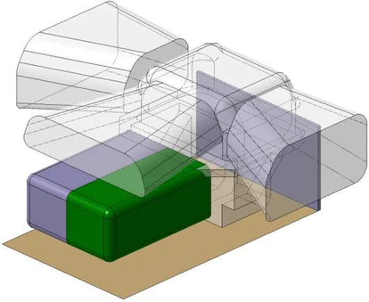
13.6.2 これらの容積内に認められる装備ペダルシステム一式と関連部品を除き、脚部用テンプレート内に侵入することが許される部品は、半径が１５ｍｍ未満でないこと。これらの容積に侵入することが許されるのは、以下の部品のみ： a. ステアリング、そのユニバーサルジョイント； b. ペダル、関連の配線束、フットレスト、およびペダルの調整システム； c. ドライバーにとって危険でない場合に、サスペンションアーム取り付け点； d. ウインドスクリーンのワイパー機構とそのモーター； e. パネルに取り付けられた運転に必要な装備。それは取り外し可能でなければならない； f.ドライバーの脚部保護用パッドおよび脚部パッドカバー； g. 同乗者側にドライバー脚部用パッド支持部およびエアジャッキ； h. 同乗者用空間に、第８条２項に従う補機用バッテリー；
P.66i. ESSは同乗者脚用テンプレートH2内に侵入できる； j. ACシステムは使用されている場合、同乗者エリアにのみ、BBW、ペダルフィールエミュレーター； k. 同乗者用の容積に入るパワーステアリングECU； l.ドライバーの座席（第１４条１０項）； m. 同乗者エリアにのみ、付属の電子構成部品（コントローラー、配線束など）。
ただし，上記の構成要素c.、d.、e.は，運転席側のXsc平面から1100mmから800mm前方の領域では許されない。運転席側パッドの空容積の内部には何も突出してはならない（第１４条７項１図参照）。13.7ドライバーと同乗者の身体用容積 － テンプレートH3コクピット（ドアを閉めて）はテンプレートH3の挿入が可能でなければならない。その型板の寸法と位置はサバイバルセルリファレンスCADファイルに規定されている。このテンプレートH3の最後点は、Xsc平面の20mm前でなければならない。テンプレートH3は車両の前後方向中心線と中心を合わせなければならない。底面はサバイバルセル基準面に平行で、Zsc平面から500mmのところになければならない。この検査のため、第１３条９項に記載されている装置を取り外すことができる。テンプレートH3の側部、前部、後部を区切るサバイバルセルのすべての点は、Zsc平面から上方500mm以上でなければならない。
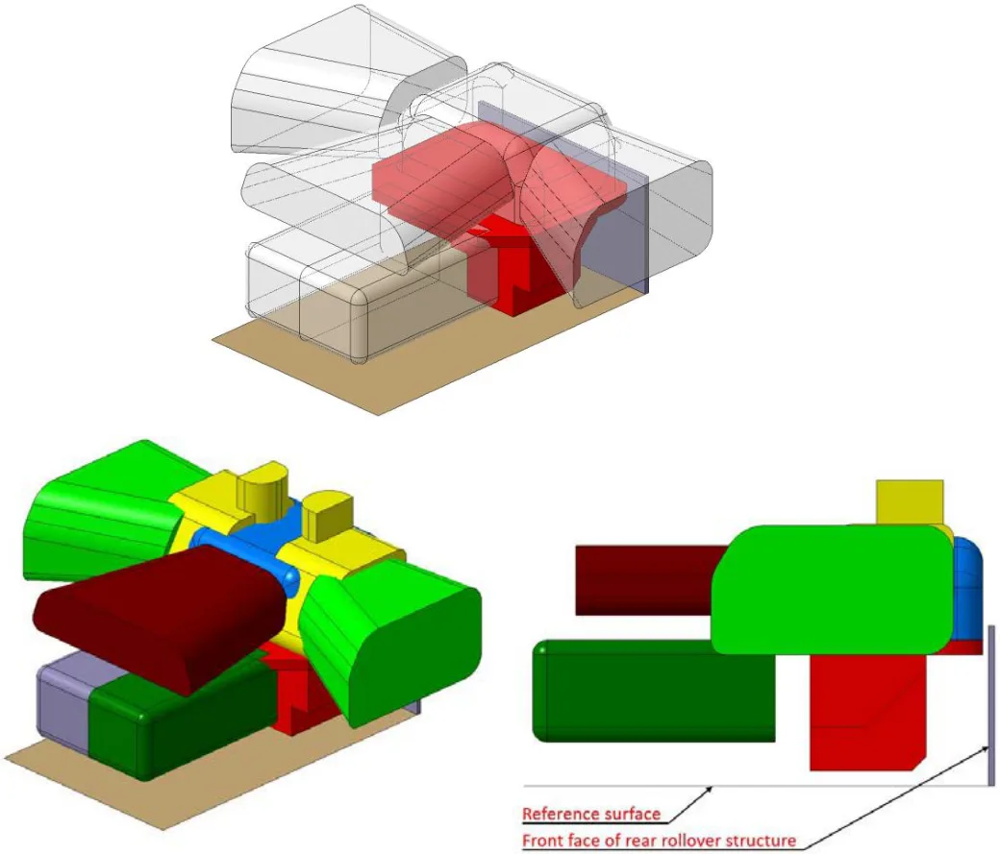
P.6713.8.1 ドライバーおよび同乗者頭部の幾何学的定義コクピット（ドアを閉めて）はテンプレートH4の挿入が可能でなければならない。テンプレートH4の寸法と位置はサバイバルセルリファレンスCADファイルに規定されている。後面は、Xsc平面の前方20mmでなければならない。テンプレートH4は前後方向車両中心線と中心を合わせなければならない。底面はサバイバルセル基準面に平行で、Zsc平面から上方に少なくとも500mmのところになければならない。この検査のため、第１３条９項に記載されている装置を取り外すことができる。
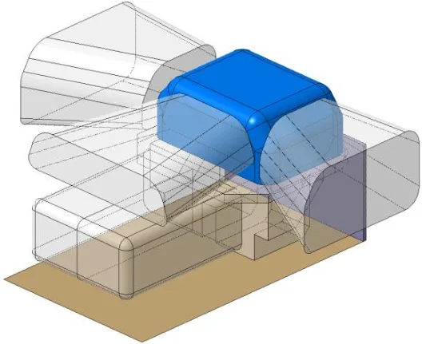
13.9コクピット内の装置
13.9.1 以下が認められる：第１３条６項に規定される２つの空間容積の外側でのみとする:
安全装置およびサバイバルセルの一部を構成しない構造体消火器補機用バッテリー（第１３条９項２参照）工具キット座席運転に必要な制御装置ドライバーの冷房装置および換気ダクト（第１３条９項５参照）電子装置飲料装置バラストジャッキドア施錠機構
13.9.2 補機用バッテリーはコクピット内に認められる。これらの構成部品は、衝突の際にドライバーに危険のある場合、堅牢で効果的な保護材質で覆われていなければならない。13.9.3 コクピット出口に出入りの妨げとなるものが一切あってはならない（第１ ３条１０項３参照）。13.9.4 コクピット内に認められる装置の取り付けについては、ACO/IMSAテクニカルデリゲートの査察を受けなければならない。すべての取付け部はいずれの方向へも25Gの減速度に耐えられなければならない。
P.6813.9.5 以下が認められるが、第１３条６項に規定されるドライバーの空間容積の外側でのみとし、第１３条１１項を遵守する:
ドライバー冷房装置換気ダクト13.10 コクピットの出入り
13.10.1 原則ドライバーは、ステアリングホイールとドアを開ける以外の部分を取り外すことなく、コックピットに出入りすることができなければならない。助手席側から出る場合は、ヘッドレストも取り外すことができる。ドライバーは、シートベルトを締めて通常の着座をし、ステアリングホイールを外した状態で、両足をそろえて持ち上げ、膝がステアリングホイールの平面を越えて後方に移動できなければならない。この動作は、車両のどの部分によっても妨げられてはならない。13.10.2 ドア開口部ドア開口部の大きさがコクピットの出入りに適切であることを確実にするため、それらは： テンプレートH6の挿入が可能でなければならない。その寸法と位置はサバイバルセルリファレンスCADファイルに規定されている。この検査のために、テンプレートの低い表面部は基準面と同じ高さで平行に保たれ、それらの後端は横方向に一直線にされる。テンプレートの最後面はXsc平面から120mmの位置に配置される。ドライバー用テンプレートは、垂直方向の平らな内面が車両中心線から150mmの位置に達するまで横方向に移動させる。同乗者のテンプレートは、車両中心線から、ドライバーのテンプレートの対称となる。下側の面は、Zsc平面から500mm以上の高さに位置する。座席とすべてのパッドは、その取り付け具も含め、ドア同様取り外すことができる。
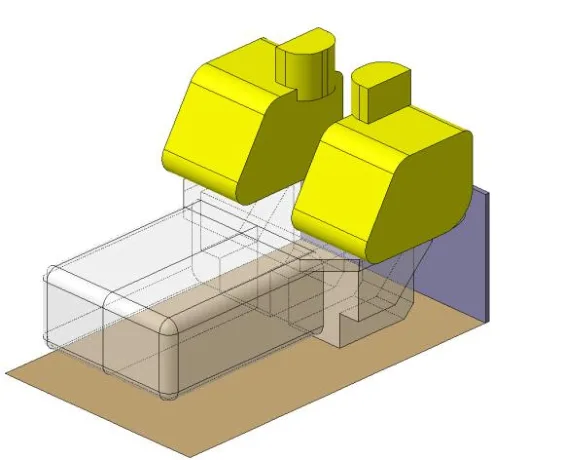
13.10.3 コクピット脱出時間コクピットは、ドライバーが完全な運転用装備を身につけ、通常の運転位置に着座し、ステアリングホイールを正しい位置に取り付け、シートベルトを締めた状態か
P.69ら、最大７秒（ドライバー側から）、最大９秒（同乗者席側から）の時間で脱出できるよう設計されていなければならない。
13.10.4 ヘルメット取り外し試験ドライバーがレース状態の車両内の通常の運転位置に着座し、サイズにあった頭頸部保護装置を取り付け、座席ハーネスを締めた状態で、医務要員１名がレースでドライバーが着ける予定のヘルメットを、首部あるいは脊柱を曲げずにドライバーの頭部から取り外すことができることを証明しなければならない。13.11ドライバーの前方視界
13.11.1 幾何学的な定義ドライバーがレース位置に着座し、コクピットから見て以下の要件に適合していなければならない：コックピットは、ウインドスクリーン開口部から正面視テンプレートV1（サバイバルセルリファレンスCADファイルで定義）を挿入できるものでなければならない。その後方垂直面は、テンプレートH4の前方垂直面と一致しなければならない。容積の中心面は、車両中心線になければならない。後方垂直面の下端は、Zsc平面から少なくとも上方585mmの位置になければならない。テンプレートV1の上面は、テンプレートH4の上面から30mmから50mmの間に位置するようにすること。
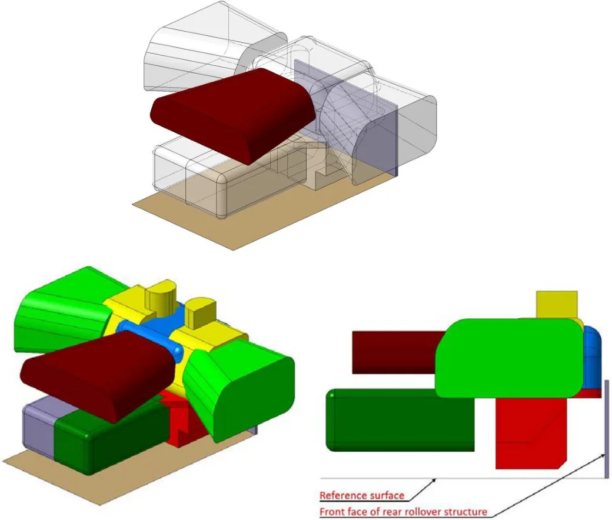
13.11.2 装備の制約この領域に侵入することが許される構成部品は以下のみ：
ウインドスクリーンおよびウインドスクリーンワイパー；
P.70アンテナおよびピトー管； コクピット換気のための前方視で高さが最大40mmのエアダクト。その出口はドライバーの前方視界を縮小することはできない。マーシャルディスプレイおよびドライバーディスプレイ（マーシャルディスプレイと同じ高さ範囲内）； 後方視界カメラディスプレイ； 高速カメラ（WEC）； テンプレート底部から40mm以内にあるドライバー情報ライトモジュール； 競技組織からの車載カメラ。
13.11.3 ウインドスクリーンワイパーウインドスクリーンワイパーシステムの装着は義務であり、ウインドスクリーン洗浄システムが公認されている場合は、これを装着しなければならない。
13.12 ドライバーの側方視界13.12.1 幾何学的な定義ドライバーがレース位置に着座し、コクピットから見て以下の要件に適合していなければならない：コックピットは、サイドウインドウを通して側面視テンプレートV2（サバイバルセルリファレンスCADファイルで定義）を挿入できるものでなければならない。その後部垂直端部は、Xsc平面から121mmのところになければならない。両方の容積の内側面は800mm離れていなければならない（車両中心線に沿って対象に）。両方の容積の内側下端部はテンプレートH4の頂部平面から321mmと341mmの間になければならない。
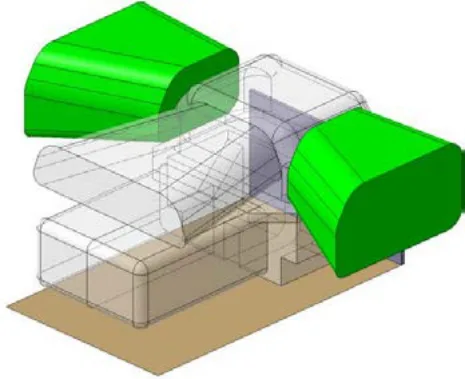
13.12.2 装備の制約ドライバー頭部保護用のパッドとその支持部、後方視界ミラーおよびドアヒンジ／機構を除き、これら２つの容積には一切のボディワークが認められない。後方視界ミラー（支持部を伴う）と車両前後方向平面（X-Z面）上の側方視界テンプレートとの共通部分を表す容積の投影は、投影されるミラーごとに150cm2未満の領域を有すること。13.13 コクピットの温度大気温度は、公式タイミングモニターで表示される。それは風のない日陰で測定される。有効な自然および／あるいは強制換気は、ドライバー周囲の大気温を車両走行中以
P.71下のように維持しなければならない：
大気温が25℃以下である場合に、最大32℃ 大気温が25℃を上回っている場合には、大気温+7℃以下の温度これらの温度基準は、車両が停止して遅くとも8分後に遵守されること。ドライバーが調整できる空気流調整装置が認められる。コックピット内のZ810地点の車両中心線上に公認の温度センサーを設置することが義務付けられる。このセンサーは、以下の図のように直接風が当たらないよう遮蔽しなければならない。
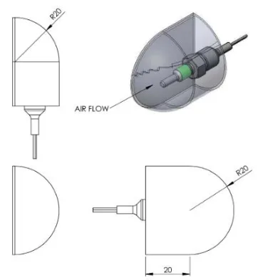
13.14 燃料タンク室燃料タンク一式は、サバイバルセルの中でテンプレートH3の後方に配置しなければならない。このコンパートメント（格納室）は、コックピットと完全に密閉されていなければならず、燃料セルと燃料ラインをコックピット、ESSおよびエンジン室から隔てる耐火性隔壁がなければならない。防火隔壁に開ける穴は、コントロールやケーブルを通すのに必要な最小限の大きさとし、完全に密閉しなければならない。使用可能な燃料タンクの最小容積は、ル・マン・サーキットを12周できる110リットルでなければならない。13.15 燃料流量計の設置容積
13.15.1 衝突時に危険のない位置に燃料流量計を設置するために、最小寸法の容積を設けなければなられない。設置容積の寸法がどのようなものであっても、第１３条１５項２および第１３条１ ５項３は常に満たされなければなられない。13.15.2 この装備は、故障の際に個別に迅速に交換できるものでなければならない。ACO/IMSAの判断により、走行セッション（レースを含む）中の交換が求められることもある。13.15.3 この装置は、大気と同じくらいの温度を提供するために、車外から直接入り車外に出る空気によって換気されなければならない。燃料流量計本体の温度が記録される。13.16 ESS格納器設置される場合、ESSは助手席側のサバイバルセルの中に配置されなければならな
P.72い。ESSはサバイバルセルの底部からアクセスできなければならない。この格納器は、コックピットおよび燃料タンク格納室から完全に密閉されていなければならない。ESSは、ESSクロージングパネルに固定されていること。このパネルはサバイバルセルに取り付けられ、ESSを十分に保護するものでなければならない。DC-DCとMCUはESSに固定され、ESS格納器に封入されなければならない。疑義を避けるために、ESS格納器はサバイバルセルと一体でなければならない。13.17 ESSからERSの格納器ESSからERSの格納器は、コックピットおよび燃料タンク格納室から完全に密閉されていなければならない。すべての分離パネルは、本規則の付則に記載されているESS格納器の安全性テストに従ってテストされなければならない。13.18 サバイバルセルの識別すべてのサバイバルセルには、識別のために本規則の付則に記載された３つのトランスポンダーを組み込まなければならない。これらのトランスポンダーは、サバイバルセルの恒久的な部分であり、いつでも確認できるように、以下のような位置に設置しなければならない（±50mm）： a. サバイバルセルの上部で、フロントアクスルと一致し、車両中心線上； b. コックピット内の左側で、ドア開口部の最前点に合わせ、ドア開口部の底面から100mmの位置； c. コックピット内の右側で、ドア開口部の最前点に合わせ、ドア開口部の底面から100mmの位置。13.19 サバイバルセルの特性サバイバルセルの最低重量は、以下に記載されている重量ペリメーターを考慮して、95kgとする。
| 項目 番号 | サバイバルセル 機能/システム/構成部品の一覧 | 重量 |
| 1 | コックピット、燃料タンク格納室、ESS格納器などの安全構造 | |
| 2 | すべての燃料タンク、ESSのクロージングパネルとそれらの固定具 | |
| 3 | 補助パネル | |
| 4 | すべての内蔵固定構成部品 | |
| 5 | ドライバー脚部支持部 | |
| 6 | サバイバルセルに搭載された5kgまでのバラスト | |
| 7 | バラスト | |
| 8 | すべての取り外し可能な固定構成部品（クラッシュボックス、エンジン、サイド ポッドなど） | |
| 9 | ウインドスクリーンおよびドア | |
| 10 | すべてのサバイバルセルの機械的内部構成部品（サスペンション関連部品、ステ アリング関連部品、ペダルとその取り付け部、座席、ヘッドレスト、バッテリー、 電気関連部品...）。 | |
P.73第14条：安全装置14.1一般一般的原則として、車両が安全な構造であることを実証するのはコンストラクター／製造者および／あるいは競技参加者の責任である。ドライバーが運転席に完全に座っていないときには、車両の動力的な動きを防止する装置がなければならない。安全のためのスイッチや押しボタンのレバーを、いかなる種類の粘着性タイプで覆うことは厳禁とされる。14.2消火器
14.2.1 すべての車両には、FIA基準8865-2015に従った消火装置が装備されていなければならない。このシステムは、製造者の指示とテクニカルリストNo.52に従い、起動の手段を除き、付則J項第253条7項2に従って使用しなければならない。認可された消火剤は次のもののみである：Novec 130またはFX G-TEC FE36。14.2.2 車両の主要電気回路に故障が生じた場合でも、すべての消火システムを作動させることができるならば、システム自体に動力源を有する放出起動システムが許される。ドライバーが、安全ベルトを装着し、ステアリングホイールをつけ運転席に通常に着座した状態で消火システムを手動により起動させることができなければならない。さらに、外部起動システムは、第１４条１６に記述されるサーキットブレーカースイッチに組み込まれていなければならない。それらは、最低線幅4mmで赤く縁取られた最低直径100mmの白色の円形内に、最低高さ80mmで最低線幅8mmの"E"の文字を赤で描いたマークで表示されなければならない。その識別は輝度反射特性でなければならない。
２つの外部の消火器スイッチがなければならない。それらは：
車両の左右に１つずつ、車両中心線に左右対称に、Zダッシュボード+40mmの下の線の下方で、Ａピラーの前方で、サバイバルセルに固定して配置されなければならない。ドア開口部から350mm未満でなければならない。マーシャルが偶発的にパワー回路に電圧を再び加えることが出来ないように設計されなければならない。離れた位置からフックにより操作できる水平なハンドルあるいはリングが取り付けられなければならない。14.2.3 すべての消火ノズルはドライバーに直接向けられないように取り付けられていなければならない。
P.7414.3ドライバーマスタースイッチ14.3.1 ドライバーは、安全ベルトを装着し、ステアリングホイールをつけ運転席に着座した状態で放電防止つきサーキットブレーカースイッチを操作することによって、イグニッション、すべての燃料ポンプおよびERSシステムへの電気回路を遮断できなければならない。このスイッチはダッシュボード上に設けなければならず、白い縁取りをした青の三角形の中に赤のスパークを描いた標識で表示されていなければならない。操作方法は付則J項第253条18項16（「クリープ」コントロールを除く）および第10図に規定されている。第10図は例示のためのものであり、詳細やレイアウトは競技参加者の自由であるが、以下の電気的状態が可能でなければならない： P0-すべての車両の電源がオフP1-主電源は供給されているが、車両は動けない（ESSおよびエンジンに電源が供給されていない）。P2-車は動くことができる（フロントとリアのデイライト・ポジション・ライトが点灯している）。これらの状態を制御するスイッチ（含複数）には、P0、P1、およびP2というラベルを付けなければならない。14.4後方視界ミラー14.4.1 すべての車両はドライバーが後方および車両の左右に視界を得るよう２つのミラーが取り付けられていなければならない。14.4.2 各ミラー反射面の最小面積は100cm2 14.4.3 テクニカルデリゲートは、通常に着座したドライバーが後続車を明らかに確認できることを、実証テスト証明により確認しなければならない。この目的ために、ドライバーは、以下に位置が詳述される車両後方に置かれたボード上のどこかに置かれる高さ75mm幅50mmの文字または数字を識別するよう求められる：高さ : 地面から400mm~1000mm幅 :車両中心線の何れかの側0mから5000mm 後方視界カメラを0m~2000mmの間で使用することが認められる。位置 : 車両のリアホイール中心線後方5m
14.4.4 リアビューミラーには昼間／夜間モードがなければならない。ミラーにフィルムを追加することでそれを実施できる。14.4.5 2025年以降、リアビューカメラシステムの使用が義務付けられる。カメラおよびディスプレイは昼間／夜間モードがなければならない。カメラは車両の公認の際に特別な許可が与えられていることを条件に車両の最大高を超えることが認められる。それらの設計の目的は、空力的利益を生むものであってはならない。リアビューカメラのディスプレイは、第１３条１１項２に従ってコックピット内に設置されなければならない。その固定部は、あらゆる方向において最低25Gの減速に耐えなければならない。
P.7514.4.6 ミラーは、第３条４項２に関して上部ボディワークの一部とはみなされない。すべてのミラーは、ACO/IMSAの承認が必要である。14.5安全ベルト安全ベルトの取り付け位置は、スポーツカーの安全構造の承認手順に従って、FIAの承認を受けなければならない。ショルダーベルトの取り付け位置は、レース状態でドライバーが着座しているときに、水平方向に対して0〜5°（下方向）の推奨角度をベルトに与えるように取り付けなければならない。車両のショルダーベルト固定部は、運転席の中心線に対して対称でなければならない。上から見たときのベルトの収束角度は約20°~25°で、決して10°~25°の範囲を超えないようにすることが推奨される。FIA基準8853-2016（テクニカルリストNo.57）に準拠した安全ベルトの着用が義務付けられている。ストラップは車両にしっかりと固定されていなければならない。付則J項第253条6項3に従い、安全ベルトのキットを１つ使用しなければならない。14.6コクピット頭部パッド
14.6.1 すべての車両には、ドライバーの頭を保護するパッドのエリアを設けなければならない。それは： a. 下図の寸法を遵守しなければならない。b. 下側の水平面がZsc平面から565mmの位置になければならない。c. 座席の中央に配置されていなければならない。d. ３つの部分（運転席ドア、運転席後ろで最後部サイド、最前部サイド）に分けて車両から取り出せるようになっていること。e. ヘッドレストの後部は、２つの水平なペグと２つのクイックリリース固定具で固定されていなければならず、これらは明確に表示されており、工具なしで簡単に取り外すことができなければならない。テープあるいは類似の素材でヘッドレストの固定具を覆うことはできない。f. FIAテクニカルリストNo.17（スポーツカー用のヘッドレスト素材）の仕様に応じた素材で製作されていること。g. ドライバーの頭部が接触する可能性のあるすべての領域にわたり、重量で50% （±5%）の硬化樹脂含有量のある、２層とも60g/m2の織物から成る、あるいは１層が60g/m2で１層が170g/m2の織物から成る平織構造の、２積層アラミド繊維／エポキシ樹脂複合基材プリプレグ材質により作られたカバーが装着されていること。h. アラミドカバーの表面加工は、ヘルメットの接触表面上の塗装および追加の噴射スプレー塗装以外一切認められない。使用済みの製品は、ヘルメットとの接触する際に表面の摩擦を最小限にできるものでなければならない。i.すべての部品の間で、素材の不連続域が10mmをこえてはならない（部品、ドアの取り外し）j.前頭部拘束装置のための凹みがあってはならない。k. 助手席側の側面部分を可動式に設計する必要がある場合は、保護装置が完全に安全でロックされた位置にない限り、ICEや動力源となる電気モーターの起動を禁止する少なくとも１つの近接センサーが必須となる。
P.76l.スポーツカーの安全構造の承認手順に従って、FIAの承認を受けなければならない。予定された試験日より、最低でも８週間前の通知がなされる。
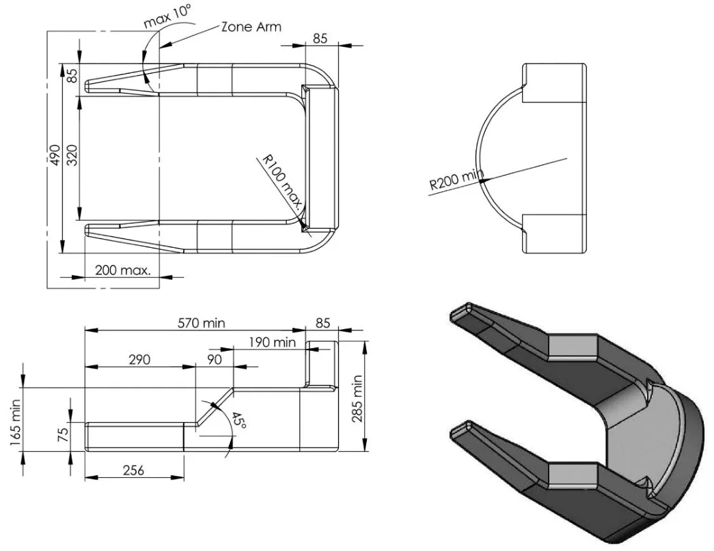
14.6.2 ドライバーの頭部を支えるヘッドレストの最初の部分は、ドライバーの後ろに位置し、厚さは85mmでなければならない。必要に応じて、ドライバーの快適性のためにのみ、同じ素材で低摩擦表面を持つものであることを条件に、厚さ10mm以下のパッドを追加してこのヘッドレストに取り付けることができる。14.6.3 ドライバーの頭部のための２つ目のパッドのエリアは、両側に配置され、厚さは85mmでなければならない。必要に応じて、ドライバーの快適性のためにのみ、同じ素材で低摩擦表面を持つものであることを条件に、厚さ20mm以下の追加のパッドをこのヘッドレストに取り付けることができる。さらに、これらのパッドの領域と第１４条６項２に記載された領域との間の空隙も、同じ素材で完全に埋めなければならない。前方の横方向の部分の適応は、「ゾーンアーム（ZONE ARM）」（第１４条６項１図）に記載されている領域で認められるが、垂直横方向の断面では最低1500mm²の面積が遵守されることを条件とする。14.6.4 上記のすべてのパッドは、事故の際に予想される軌道でドライバーの頭部が動き、発泡フォームがどこかで完全に圧縮されても、ドライバーのヘルメットが車両の構造部分に接触しないように取り付けられていなければならない。14.7コクピット脚部パッド
14.7.1 車両には、衝突時にドライバーの脚部が負傷するリスクを最小限にするため、ドライバーの足の左右と上部に脚部保護パッドが取り付けられていなければならない。
P.77ドライバー側の垂直横方向の断面は、次の図が遵守されなければならない。
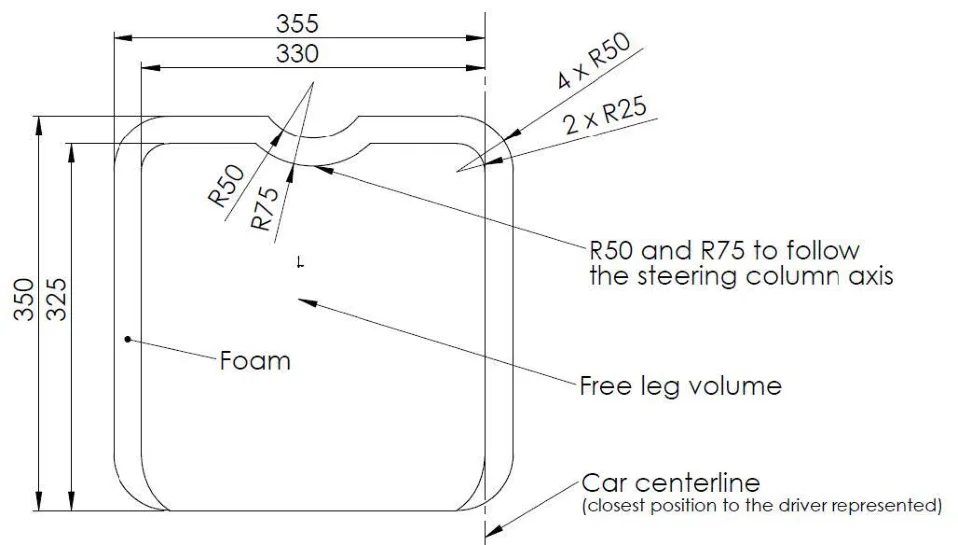
14.7.2 これらのパッド領域は： a. FIAテクニカルリストNo.17（スポーツカーのヘッドレスト素材）に掲載されている素材でパッド付けしなければならない。b. パッドの最小厚さは25mmが全体の領域になければならない。c. ペダル（フットパッド）の最後部から後方100mmと、第１３条４に記載されているステアリングホイール基準から前方150mmの間で延長していなければならない。d. 第１３条６項１に規定の高さをカバーしなければならない。e. 直径100mmの半球状のパッドによって、エリアの中心で自由な脚部空間容積か
ら外側に向かってY軸方向にかけられた7KNの荷重を支えなければならない。コックピットの脚部パッドの局所的変更および／あるいはトリミングは、ACO/IMSAの承認を得ることを条件に許可される場合がある。14.8ホイールの保持ナットの自動安全保持を提供するホイール保持システムが装備されなければならない。製造者はそのシステムの堅牢性を証明しなければならない。保持機構は、公称締め付けトルクの30%の静的な緩みトルクに耐えなければならない。この機構は公認手続き中の静的テストに合格しなければならない。14.9ホイールテザー（拘束ケーブル）14.9.1 ホイールと車両との結合を保つすべてのサスペンション連結部が破損した際にホイールが車両から外れるのを防ぐために、ホイール拘束ケーブルが収容できるよう対策が取られなければならない。このホイール拘束ケーブルの目的は、ホイールが車両から離れるのを防ぐためだけであり、それ以外の機能がないこと。14.9.2 それらの拘束ケーブルおよびその取り付け部も、事故の際のホイールとドライバー頭部との接触防止に役立つように設計されていなければならない。14.9.3 各ホイールには、２本の拘束ケーブルが取り付けられていなければならな
P.78い。それらは以下のいずれかに従って公認されていなければならない：
2026年末まで：
◦ FIA基準8864-2013（FIAテクニカルリストNo.37）◦ FIA基準8864-2022（FIAテクニカルリストNo.93） 2027年から義務化（2026年は推奨）：
◦ FIA基準8864-2022（FIAテクニカルリストNo.93）。当該モデルの長さ区分（公認に基づく）に適合し、少なくとも7kJのエネルギー吸収能力を持ち、かつ公認時のピーク荷重が80kN以下であること。14.9.4 各拘束ケーブルの両端部には、以下のそれぞれ別個の取り付け部を有していなければならない：
当該サスペンションメンバーの負荷ラインから計測し、45°の円錐形（狭角）以内でいずれの方向にも、80kNの最低引っ張り強度に耐え得ること。サバイバルセル上あるいはギアボックス上で、２つの取り付け部の中心で計測して少なくとも100mm離れていること。ホイール軸に関して少なくとも90°放射状に離れ、各ホイール／アップライト組み立て上で、２つの取り付け部の中心の間で計測して少なくとも100mm離れていること。ケーブルの公認ラベルの表示に従う最小内径の拘束ケーブル端部の取り付け具に適合できること。14.9.5 さらに、サスペンションメンバーは、１本を超える拘束ケーブルを含むことはできない。14.9.6 各拘束ケーブルは、長さが最低400mmでなければならない。14.10 座席ドライバーの側方および背側のサポートは座席によって達成されなければならず、サポートの基本領域は次の図の寸法が遵守されなければならない。ショルダーサポートの上面は水平で、Zsc平面から530mmの位置になければならない。背側サポートの形状は、背骨のL1に接する角度が55°になるようにすることが推奨される。側面および背側のボディサポートは、スポーツカーの安全構造の承認手順に従って、FIAの承認を受けなければならない。予定された試験日より、最低でも８週間前の通知がなされる。座席の挿入物は、FIAテクニカルリストNo.50に掲載されている素材を使用しなければならない。
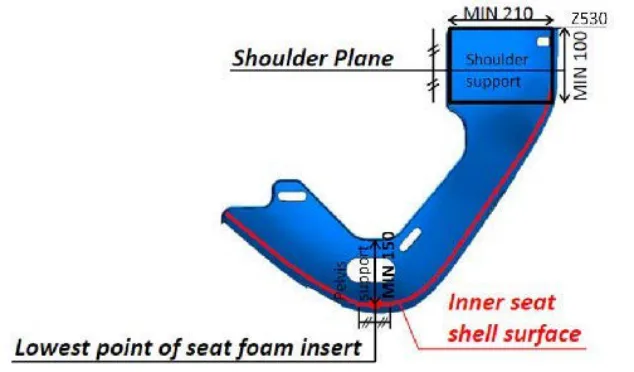
P.7914.11前頭部支持体ドライバーが装着する前頭部支持体は、通常の運転位置に着座した状態で、車両のいかなる構造体部分からも25mm未満の所にあってはならない。14.12 牽引フック前後の牽引フックは以下の通りでなければならない： 温度が常に50度未満になるように設計されていなければならない。堅牢で鉄製であり、牽引の失敗の可能性のない内径80mm~100mm、厚さが最低5mmであること（マーシャルの使用するストラップを切断したり損傷することのないよう丸みを帯びた断面）。金属製の堅牢な１つの部品でシャシー／構造体に確実に固定されていること（ケーブルフープは認められない）。上から見てボディワークの外周辺の内側にあること。外側から見え、容易に確認でき、黄色、赤色あるいはオレンジ色に塗装されていること。また、ボディワークには、フックのどの部分を掴むかを示す矢印（シグナルカラーであるか、輝度反射特性のもの）がなければならない。グラベルベッドに停止した車両を牽引できること。牽引フックがボディワークに統合されている場合、グローブをはめたマーシャルがそれらを操作するためのテープ/ハンドルがなければならない。このテープ/ハンドルはシグナルカラーでなければならない。牽引フックを覆うカバーは厳禁とされる。14.13 車両を吊り上げる装置車両をクレーンで吊り上げるために、車両頂部に２箇所の固定点を設置することが義務付けられる。これらの固定点は、車両の頂部構造体に統合された２つの吊り上げ用ブッシュでなければならない（下図参照）。それらにより、車両を地上1.5mの高さに安全に吊り上げることができなければならない。燃料タンクを50%満たした完全な状態での車両の角度は（吊り上げられた時に）25度未満でなければならない。ブッシュは利用しやすい位置にあり、次の通り特別なマーキングで示されていなければならない。開口部周囲を太さ5mmの円でマーキング（シグナルカラーであるか、輝度反射特性のもの）されていなければならない。ブッシュが横から見て見えない場合、横から見えるように（片側に１つの）矢印（シグナルカラーであるか、輝度反射特性のもの）が利用されなければならない。開口部域は、吊り上げピンを挿入する必要がある場合、それの障害とならないよう、走路からの破片飛散の危険性に備えて覆われていなければならない。覆いとなるステッカーは、グローブをしたマーシャルが容易に剥がすことができ、正確で完全な吊り上げピンの挿入ができるようなものである必要がある。堅牢なカバーは一切禁止される。それらの相対的距離は、吊り上げブーム上の距離に対応していなければならない： 320~400mm。ブッシュの最大角度は垂直に対して45°である。
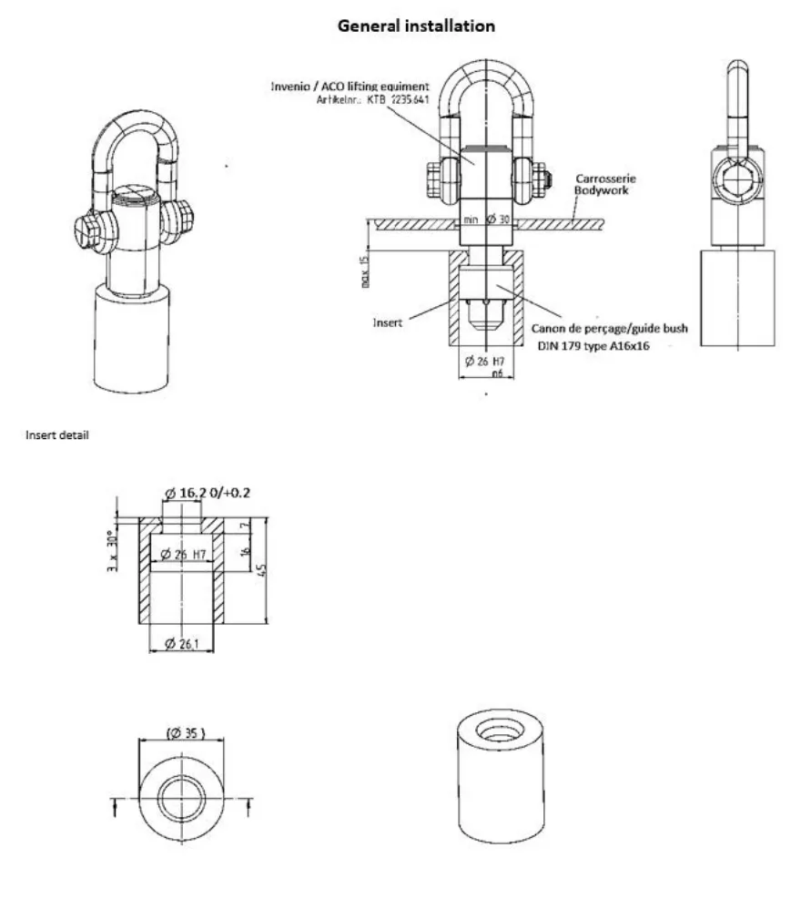

ダッシュボード+40mmの下の線から下で、Ａピラーの前のサバイバルセルに固定されなければならない； b. ドア開口部から350mm未満でなければならない； c. 第１４条２項２に規定される消火器スイッチから70mm未満となるように； d. プッシュボタンあるいはレバーと共に取り付ける； e. 上記に定められた装置により； f.車両内部のすべての電気回路（補助およびパワー回路）を切りESをパワー回路から絶縁できること； g. マーシャルが偶発的にパワー回路に電圧を再び加えることが出来ないように設計されること； h. それらのスイッチは以下のように輝度反射特性を有した２枚のステッカーで示されなければならない： 白い縁取りをした青色の正三角形の中に赤色の稲妻を描いた標識。三角形は矢印がボタンを指し示すような角度でなければならない； 直径が最低50mmの、少なくとも2mmの幅で青く縁取られた白い円の内
P.82側に、少なくとも40mmの高さで線の幅が最低4mmの"N"の文字を青で書いたマークで表示しなければならない。両方の標識は高さは最低でも100mmなければならない。それは、輝度反射特性でなければならない。このスイッチ／ボタンを覆うことは一切できない。
衝突時には、電源回路のすべてのエネルギー源が電気スイッチや接触器によって自動的にオフになり、ES全体が絶縁されていなければならない。これらの配置は、公認で提出された故障モード解析によって検証されなければならない。一般的な仕様は、付則J項第251条3項1.14.1.cおよび第253条18項18に規定されている。
14.17 ケーブル、配線および電気装置仕様は付則J項第253条に記載されている（18.2.aは適用せず）。ブレーキ配線、電気ケーブルおよび電気装置は、ボディワーク外部に取り付けられる場合は、一切の損傷の危険性（石、腐食、機械的破損など）から、またボディワーク内に取り付けられる場合は、火災および電気的衝撃の一切の危険から保護されなければならない。60V超の電圧を使用する電気ケーブルはすべて、サバイバルセル基準面上のX/Y面内に設置しなければならない。14.18 電気ショックからの保護保護は、付則J項第253条18.7（第253条18.7.eを除く）に従って保証されなければならない。14.19 等電位結合高電圧が車の低電圧システムにAC結合される故障モードを軽減するために、ボディワークのすべての主要な導電性部品は、適切な寸法の配線または導電性部品で車両のシャシーに等電位で結合されていることが義務付けられる。付則J項第253条18.8を参照のこと。14.20 絶縁抵抗要件すべての電気的活電部品は、付則J項第253条18.9に記載されているように、偶発的な接触から保護されなければならない。14.21 AC回路の追加の保護策追加の保護手段は、付則J項第253条18.9.1条に定められている。14.22 シャシーと電源回路の絶縁監視絶縁監視システムを使用して、電圧クラスBシステムとシャシー間の絶縁バリアの状態を監視しなければならない。仕様は付則J項第253条18.10に記載されている。
P.8314.23 電力回路（パワーサーキット）電力回路の仕様は付則J項第253条18項11に規定されている。14.24 パワーバス仕様は付則J項第253条18項12に規定されている。14.25 電力回路配線電力回路は、ES、駆動モーター（含複数）のコンバーター（チョッパー）、総合サーキットブレーカーのコンタクタ（接触器）（含複数）、ヒューズ、発電機（含複数）および駆動モーター（含複数）から構成される。すべてのケーブルおよび配線の仕様は付則J項第253条18項13に規定されている。14.26 電力回路連結部および自動分離電源回路の連結部は、正しく接合されていない限り、プラグとリセプタクルのいずれにも活電接触があってはならない。仕様は付則J項第253条18項14に定められている。電力回路連結部の環境シールは、少なくとも標準に対応していなければならない。接合状態でIP 55 切断された状態ではIP 2X 14.27 ケーブルの絶縁力すべての電気部品は、付則J項第253条18項15に従って、偶発的な接触から保護しなければならない。14.28 過電流トリップ（ヒューズ）ヒューズおよびサーキットブレーカー（これは決してモーターサーキットブレーカーではない）は過電流トリップ装置とみなされる。追加の速断電子回路ヒューズおよび速断ヒューズは適切である。過電流トリップは付則J項第253条18項19に定められている。14.29 安全インジケーター付則J項第253条18項22に記載されている仕様が適用される。すべてのインジケーターは、視野角が120°以上で、光束が8ルーメン以上でなければならない。装着が義務付けられている安全ライトの詳細は、FIAテクニカルリストNo.46に記載されている。a. ES安全ライトすべての車両はES安全ライトを装着しなければならない。これらは以下の通りでなければならない： イベント期間中、車両の主要な油圧または空気圧装置が故障していても、正常に作動すること。次のように配置され、公認された位置にあること： ◦ダッシュボード上では、チームによって指定され、調達された、１つの緑色の表示灯（二重の冗長性をもったライトで成る）と１つの赤色の表示灯（二重の冗長性をもったライトで成る）。ダッシュボード表示灯（含複数）は２つの明度（夜間および昼間）を提供できる。
P.84◦車両の両側にある２つのニュートラルと総合サーキットブレーカースイッチの近くでは、ES安全ライトが義務付けられている。このライトは、FIAテクニカルリストNo.46に詳細が記載されており、ES安全ライト（赤と緑）とメディカルライト（青）が含まれている（第１４条３３）。これらのライトは、ライトやスクリーンに遮蔽フィルム、テープ、塗装などがない状態で、常に最大の明るさでなければならない。総合サーキットブレーカーが作動した後、少なくとも15分間は電源が入っていること。 "HIGH VOLTAGE"のシンボルマークが付いていること。ドライバーのマスタースイッチを最初にオンにするときは、次の操作が行われなければならない： ◦ カーオン◦ 赤が3Hzで2秒間点滅する。◦ その後、絶縁チェックが完了するまで点灯しない。・ステータスが OK => 緑色に点灯・失敗した場合 => 赤く点滅 (3 Hz) それ以外の場合：
| ERS状況 | ERS状況ライト |
| 安全 | 緑色 |
| 危険 （システム不良） | 3Hzで赤色点滅 |
b. 走行準備完了ライトスロットルペダルを踏むと車両が動くことを示すために、車両のフロントデイライトとリアポジションライトを点灯させなければならない。システムへの通電要求時にバス電圧が50Vを超えていない場合は、0.5秒「オン」し、0.5秒「オフ」しなければならない。
| 位置 | フロントデイライトおよびリアポジションライト | ||
| しきい値 | オン時間 | オフ時間 | |
| P2で | |||
| 車両静止 | 常にオン | ||
| カー・オン・トルク | 常にオン | ||
| P1からP2への切り替え | <50V | 500ms | 500ms |
| P2からP1への切り替え | オフ |
しきい値オン時間オフ時間P2で車両静止常にオンカー・オン・トルク常にオンP1からP2への切り替え<50V 500ms 500ms P2からP1への切り替えオフ14.30 充電ユニットACO／IMSAが承認した充電ユニットのみが、ESSを充電するのみ使用できる。14.31 バッテリーマネージメントシステムリチウムバッテリーの場合は、温度、電流、電圧を管理し、故障時にはすべての負荷を絶縁することが必須である。14.32 事故データ記録装置（ADR）および高速事故カメラ事故データ記録装置（ADR）および高速事故カメラの使用が義務付けられ、FIAの指示に従って取り付けられ運用されなければならない（付則参照）。
P.8514.33 メディカルライト（医療用警告ライト）救助隊に事故損傷度を即座に知らせるために、各車両にはACO/IMSAデータロガーに接続された２つの警告灯を取り付けなければならない。これらは、ES安全ライトモジュールの一部でなければならず、第８条８に記載されているように取り付けなければならない。第15条：安全構造体15.1ロールオーバー構造体
15.1.1 一般規則２つの安全ロールオーバー構造体（前部および後部）が義務付けられる。それらは以下の通りでなければならない :
前部では最小幅350mm以上に渡ってサバイバルセル基準面から少なくとも上方935mmで、後部では幅最低450mmに渡って基準面に少なくとも上方945mmであること。最低600mm離れていること。車両の前後方向垂直面に対して左右対称であること。
15.1.2 後部ロールオーバー構造体サバイバルセルの形状がどのようなものであっても、後部ロールオーバー構造体の上部からサバイバルセルの最後部の面まで、構造的なリンクがなければならない。以下の通りでなければならない。サバイバルセルの取り付け部の高さにおいて計測し、全長が最低375mmであること（つまり、サバイバルセル基準面から最低500mm）； エンジンブロック、シリンダーヘッド、カムカバーの部分およびサバイバルセルに挿入されたエンジン固定部の目に見える要素は一切、後部ロールオーバー構造体の前部垂直面から375mm未満の距離にあることは認められない； ロールオーバー構造体は、車両を直接上から見た時に、また横から見た時に、エンジン（エンジンブロックおよびシリンダーヘッド）のどの部分をも遮ってはならない； 後部リアロールオーバー構造体の垂直な前面は、X方向の基準面（Xsc）とみなされる。これは、ドライバーと同乗者側のコックピット全体に伸張し、Z500以上の高さでなければならない； サバイバルセルの後面は、Xscから最小375mmの位置で180,000mm²以上の面積がなければならない； エンジン側の面中央部は、エンジン前面オイルタンクが設置できるように設計されていなければならない（下図参照）。正面から見て、この構造は車の前後方向の中心線に対して対称でなければならない。
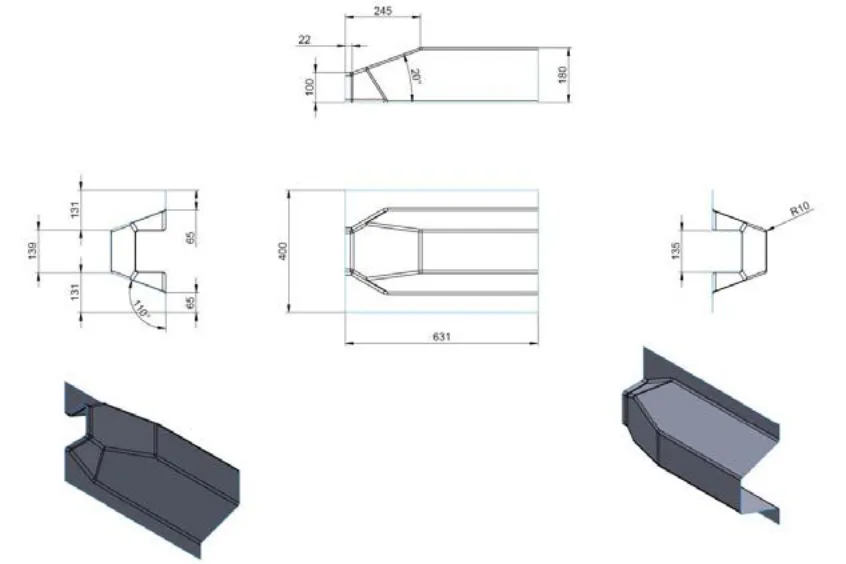
15.1.3 ロールオーバー構造体の承認各ロールオーバー構造体は、スポーツカーの安全構造体の承認手順に従い、FIAによって承認されなければならない。15.2サバイバルセル15.2.1 一般規定サバイバルセルの上部には、コックピットとボディワーク上部に設置された必須の公式装備との間でケーブルを通すための25mmの穴が義務付けられる。シャシー構造体は、モノブロックおよび燃料タンク、ESSを含む連続したサバイバルセルを含み、ドライバーの足の少なくとも前方300mmの垂直面から（第１３条３に規定される通り）Xscの後方375mmのところへ伸張していなければならない。サバイバルセルは、サバイバルセル基準面からコクピット出入り部全長に沿って最低500mmの高さで側方保護を提供していなければならない。
15.2.2 サバイバルセルの形状制御サバイバルセル外面の形状は，車両中心線上にあるXY方向の平面を用いて（側面視で）制御され、ウインドスクリーン下端は、前部ロールオーバー構造体の後面から900±50 mmの距離になければならない。サバイバルセル外表面の形状は、基準面から上方500mm、ロールオーバー構造体から下方50mmに位置するXY方向平面と、以下のシャシー位置におけるYZ方向平面との交差部面を用いて制御される： フロントロールオーバー構造体の後面；結果として生じる表面交差曲線は、300mm以上の凸半径を含み、凹半径を含んではならない。ドアヒンジは局所的な例外とすることができる。後面ロールオーバー構造体の前面（Xsc）；結果として生じる表面交差曲線は、275mm以上の凸半径でなければならず、凹半径はあってはならない。コックピット換気口、FFMコンパートメント、ドアハンドルは局所的な例外が可能な場合がある。
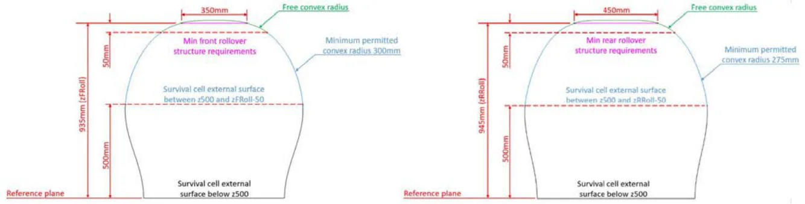
（左図内） 自由な凸半径 許される最小凸半径300mm 最小前部ロールオーバー構造体の要件 サバイバルセルのz500とzFRoll-50の間の外側表面 z500以下のサバイバルセル外側表面 基準面（右図内） 自由な凸半径 許される最小凸半径275mm 最小前部ロールオーバー構造体の要件 サバイバルセルのz500とzRRoll-50の間の外側表面 z500以下のサバイバルセル外側表面 基準面
15.2.3 補助パネル第１５条２項４と第１５条３項２の要件が満たされた後、側面衝突時にドライバーをさらに保護するため、サバイバルセルの各側面に、適切な接着剤（技術規則付則の仕様）をすべての重複接合部を含めて表面全体に渡って適用させ、補助パネルを恒久的に取り付けなければならない。第１５条２項３.１および第１５条２項３.２に記載された補助パネルは、１つの部品から作ることができる。リベットは、FIAの承認を得て、外部ボディワークの取り付けにのみ許可される。
15.2.3.1 補助パネル - 脚部テンプレート（前方貫通パネル）パネルは片側１つのパーツで製作され、技術規則の付則にある正確なレイアップの指示に従わなければならない。または、同じ仕様の代表的なパネルが強度試験に合格していなければならない。試験方法の詳細については技術規則の付則（前方貫通パネル）に記載されている。さらに、この仕様の部品は、サバイバルセルのうち、側面から見て、以下の領域にある部分をカバーしなければならない：
X軸方向で、ドライバーの脚用の容積（第１３条６項に定める）の最前点前部平面との間にある領域を、テンプレートH2まで車両中心線に対称に覆うこと。25mmの水平線形逓減部を両端に含めることができる。このパネルはすべての接合端部に沿って第１５条２項３.２に定義されるパネルと最低25mm重なり合っていなければならない。 Z軸方向で、ステアリングホイールとドライバーの脚用と同乗者の脚用の容積（第１３条５項に定める）の底面から上面まで伸張していなければならない。このパネルには、配線用の穴や必須の固定具を取り付けるために、片側合計15,000mm²の切り抜き部が許可される。
15.2.3.2 補助パネル - ボディテンプレートと燃料タンク (２次貫入用パネル)片側１つのパーツで製作されたパネルは、技術規則の付則にある正確なレイアップの指示に従わなければならない。または、同じ仕様の代表的なパネルが強度試験に合格していなければならない。試験方法の詳細については技術規則の付則（２次貫入パネル）に記載されている。さらに、この試験仕様の部品は、サバイバルセルのうち、側面から見て、以下の領域にある部分をカバーしなければならない： テンプレートH2の後面から前方25mmからサバイバルセルの後面までの範囲
P.88をX軸方向にカバーすること。両端に50mmの水平線形逓減部を含むことができる。 Z軸方向は、Z50平面からZ450平面までの範囲をカバーするが、ESS排気チャネルを局所的に除くこと。このパネルには、配線用の穴、ESS換気孔、必須の固定具を取り付けるために、片側合計25,000mm²の切り抜き部が許可されている。
15.2.4 サバイバルセルの承認サバイバルセルは、本技術規定付則に定めるスポーツカーの安全構造体の承認手順に従い、FIAによって承認されなければならない。予定される試験実施日の遅くとも８週間前に通知される。15.3前方衝撃吸収構造体 - FIAS
15.3.1 一般規定サバイバルセルの前方にはFIASの取り付けがなければならない。この構造体はサバイバルセルに統合され一体となるべきではないが、最大４カ所の固定部でセルに確実に固定されていなければならない。この構造体の設計は自由であるが、以下の点を満たさなければならない：
最前方点からそれぞれ150mmと450mm後方の位置にある２つの垂直および横断面の間の構造体外側の各断面には、24,000mm²の長方形の断面を収めることができ、水平方向と垂直方向の寸法がともに80mm以上でなければならない。最も前方の点から後方450mmの位置にある垂直および横断面の前方では、完全な衝撃吸収構造が基準面から上方150mmから500mmの間になければならない。機構がロック解除位置にあるときに取り付けツールが取り外されないようにして、フロントボディワークアセンブリの取り付けを検証するシンプルな機械システムを備えなければならない。製造者／コンストラクターは、ACO/IMSAの要求を満たす堅牢性を実証しなければならない。15.3.2 承認FIASは、スポーツカーの安全構造体の承認手順に従い、ACO/FIA/IMSAによって承認されなければならない。予定される試験実施日の遅くとも８週間前に通知される。15.4後部衝撃吸収構造体 - RIAS 15.4.1 一般規定RIASは、車両中心線に対して対称的にギアボックスの後ろに取り付けられていなければならず、ボディワークの最後部の点から200mm以内の位置になければならない。後部衝撃吸収構造体の最後部の垂直かつ横方向の面の周囲は、高さ100mm以上、幅130mm以上の連続した閉じた断面を形成していなければならない。この高さ100mm、幅130mmの長方形の部分の中心は、Z250面とZ300面の間になければならない。
P.89各コーナーには10mm以下の半径を設定することができる。最後方の面の外周を300mmの長さに渡って前方に向かって純粋に前後方向に押し出すことは、後部衝撃吸収構造体の最も外側の面から突出しないこと。この構造体はボディワークの構成要素と見なされる。この構造体は、使用中想定される温度に大きく影響を被ることのない材質で製作されていなければならない。この構造体に追加して取り付けが認められる構成要素は唯一、リアウイングピラー、ジャッキ、牽引フック、エンジンカバーおよびフロアおよび／あるいはリアディフューザーである。機構がロック解除位置にあるときに取り付けツールが取り外されないようにして、リアボディワークアセンブリの取り付けを検証するシンプルな機械システムを備えなければならない。製造者／コンストラクターは、ACO/IMSAの要求を満たす堅牢性を実証しなければならない。15.4.2 承認RIASは、スポーツカーの安全構造承認手順に従い、FIAによって承認されなければならない。予定される試験日程の少なくとも８週間前に通知される。15.5改造FIAに承認された安全構造体についての一切の改造は、ACO/IMSA技術部に車両コンストラクター／製造者が提出しなければならない。ACO/IMSA技術部は、改造の承認のために新規試験を受けることを要請する権限を留保する。第16条：材質16.1一般車両のいかなる部品も40GPa（ｇ/cm3）を上回る特定の弾性率を有する金属性材質で製作されていてはならない。規定への合致を確認するための試験がFIAテスト手順03/03に従って実施される（技術規則付則）。16.2マグネシウムマグネシウムを基礎とした合金で製作される部品について： 3mm未満の厚みのマグネシウムシートの使用は禁止される。鋳造あるいは機械加工された部品は、壁の厚みが3mm以下であることは禁止される。局所的な例外は認められる場合がある。16.3チタニウムチタニウム製の部品の使用は禁止されるが、専用のブレーキ部品（例：キャリパーのピストン、ボビン、ディスクベルなど）第３条５項９に記載の留め具、ハイブリッドシステムの共通部品、およびACO/IMSAの合意を得るエンジン部品は例外とする。
P.90第17条：燃料17.1燃料供給オーガナイザーが供給する燃料は１種類のみで、その化学組成に変更を加えることなくすべての車両に使用されなければならない。17.2仕様
17.2.1 ガソリン仕様は要求のあり次第提供される。第18条：テレビカメラおよび計時トランスポンダー18.1カメラおよびカメラハウジングの搭載すべての車両には、ACOまたはIMSAに指定されたカメラあるいはカメラハウジングが、イベント期間中、常に搭載されていなければならない。テクニカルリスト46に準拠したカメラを後方に向けることが義務付けられる。その信号は公式テレビに接続される。18.2走行カメラ走行データを取得し走行分析するための独自の車載カメラシステムは認められるが、公認されなければならず、その位置と固定は、自動車製造者による公認が義務付けられる（25Gの減速に耐え、緩むことがないものでなければならず、カメラは、ドライバーの視界を妨げず、降車も緊急時の脱出をも妨げないものでなければならない。）18.3トランスポンダーすべての車両は、正式に任命された計時員より供給されたタイム計測トランスポンダーを２つ搭載しなければならない。これらのトランスポンダーは本技術規則の付則に記載されている仕様に厳密に従い取り付けられなければならない。競技参加者はトランスポンダーが常に作動している状態を確実にするため最大の努力をしなければならない。フロントトランスポンダ（メイン）は、車のフロントから1580±50mmの位置になければならない。リアトランスポンダ（バックアップ）は、車のフロントから3550±100mmの位置になければならない。18.4後方視界すべての車両には、ACOまたはIMSAに指定されたカメラあるいはカメラハウジングが、イベント期間中、常に搭載されていなければならない。第19条 公認19.1原則製造者は、その車両を公認することができ（2022年から2029年まで）、公認は2029
P.91年12月まで有効となる。製造者は、2022年の選手権期間中、一時的な公認を使用することができる。
19.1.1 オリジナルの公認に対する修正は、以下の理由で要請することができる： a. 安全性、信頼性、サービス性、商品化の終了、またはコスト削減b. 性能またはスタイリング
19.1.2 安全性、信頼性、サービス性、商品化の終了、またはコスト削減のために要求される修正：以下の手順に従わなければならない： 適用される公認の手順に従うこと。申請には、必要に応じて、レース中の故障の明確な証拠を含む、すべての必要な裏付け情報を提供しなければならない。 ACO/IMSAは、その絶対的な裁量により、これらの変更が容認可能であり、BoPプロセスに沿ったものであると判断した場合、当該製造者に要請が承認されたことを確認する。19.1.3 パフォーマンスおよび／またはスタイリング上の理由で修正を要求された場合：以下の条件を満たさなければならない：
第１９条５項で定められたカレンダーに従って要求される。適用される公認手順による。申請書には、目標とする性能向上、その進化、および必要に応じて最新のデータシートなど、必要なすべての裏付け情報を提供しなければならない。 ACO/IMSAは、その絶対的な裁量により、これらの変更が容認可能であり、BoPプロセスに沿ったものであると判断した場合には、当該製造者に要請が承認されたことを確認する。 2023年1月から2027年12月まで、製造者ごとに許可される性能進化は５つまで。 2028年1月から2029年12月まで、製造者ごとに性能進化は２回まで、年間最大１回まで認められる。 2023年1月から2029年12月まで、製造者ごとにスタイリング進化は１回のみ認められる。スパインパフォーマンス（骨格：モノコック性能）の進化は、当該期間（2023年から2027年、および2028年から2029年）にシャシーコンストラクターを利用する関連製造者および将来の製造者にカウントされる。19.2車両の公認
19.2.1 2022年から2029年の間にACO/IMSAの競技で競技参加者が使用する車両を公認しようとする製造者は、第１９条５項１に定められたカレンダーに従って、ACO/IMSAにシャシーの公認資料を提出しなければならない。
19.2.2 公認書類一式には以下が含まれなければならない： CAD図面および本規則の付則で要求されるその他の文書。本規則の付則に記載されているテンプレートでの公認書式。
P.9219.2.3 車両は、関連する製造者から完全な公認書類一式が提出され、ACO/IMSAによって承認された時点で、公認されたことになる。19.2.4 この公認は、７つの選手権シーズン（2029年12月まで）に有効となる。19.2.5 製造者は、公認期間中に、第１９条１項に従って、公認されたシャシーの改造を行うことをACO/IMSAに申請することができる。19.2.6 2022年から2029年の間に車両を公認しようとする新規製造者は、第１９条２項１および第１９条２項２に基づく公認書類一式に加えて、第１９条５項に定めるカレンダーに従って車両の予備的な詳細をACO/IMSAに提供しなければならない。提出された車両を公認するためには、ACO/IMSAも、その絶対的な裁量により、そのような車両が他の公認された車両と公平かつ公正に競うことができると納得しなければならない。19.2.7 公認された車両の製造者および使用者は、イベントで使用される車両が対応する車両公認書類一式に適合していることを証明するために、ACO/IMSAの絶対的な裁量により、いつでも必要とされるあらゆる手段を講じなければならない。19.2.8 製造者は、完全な公認を維持し、遵守する責任を負う。これには、本規則の付則に規定されているコンストラクターおよびスパイン（骨格：モノコック）固有の部品が含まれる。19.3許される改造
19.3.1 ドライバーフィット以下のアイテムは追加の書類なしに改造できる。
◦ ヘッドレスト◦ フットレスト◦ ペダルパッド◦ シートベルトは自由－FIA8853-2016に合致していなければならない。以下のアイテムは公認書類での検証を条件に、かつ変更がステアリングコラムの衝突試験に悪影響を与えない場合に限り、改造できる。
◦ ステアリングホイールグリップ◦ ステアリングホイールボタンのフィンガーガード◦ ステアリングホイールスイッチのクリック◦ ステアリングホイールスイッチパドルのプロファイル／形状19.5公認カレンダー
19.5.1 基本公認
| 12ヶ月 | 11ヶ月 | 10ヶ月 | 9ヶ月 | 8ヶ月 | 7ヶ月 | 6ヶ月 | 5ヶ月 | 4ヶ月 | 3ヶ月 | 2ヶ月 | 1ヶ月 | REF | |
| 車両公認－達成するべき公認の締め切りステップーREFは最初のイベントの日 | |||||||||||||
| 意志確認書 | |||||||||||||
| 全体ﾌﾟﾚｾﾞﾝﾃｰｼｮﾝ | | ||||||||||||
| ﾄﾞﾗﾌﾄCADｻﾊﾞｲﾊﾞﾙｾﾙ提出 | |
| ﾄﾞﾗﾌﾄCADﾎﾞﾃﾞｨﾜｰｸ/ ｽﾀｲﾘﾝｸﾞ提出 | | ||||||||||||
| ﾄﾞﾗﾌﾄCAD機械的機構提出 | | ||||||||||||
| CFD ACO/IMSA 承認 | | ||||||||||||
| 安全試験有効確認 | | ||||||||||||
| 最終CADｻﾊﾞｲﾊﾞﾙｾﾙ提出 | | ||||||||||||
| ﾄﾞﾗﾌﾄ公認書類提出 | | ||||||||||||
| ﾌﾙｽｹｰﾙ風洞実験 | | ||||||||||||
| ﾎﾞﾃﾞｨﾜｰｸｽｷｬﾝおよび車両査察 | | ||||||||||||
| 最終CADﾎﾞﾃﾞｨﾜｰｸ提出(合格し た通りの) | | ||||||||||||
| 最終CAD機械的気功提出 | | ||||||||||||
| 最終公認書類 | |
最終公認書類 19.5.2 追加公認
| 6ヶ月 | 5ヶ月 | 4ヶ月 | 3ヶ月 | 2ヶ月 | 1ヶ月 | 15日 | REF | |
| 安全性、信頼性、サービス性、商品化の終了、コスト削減（第19条1.2） | ||||||||
| 全体プレゼンテーション | | |||||||
| 公認書類 － 草案 | | |||||||
| 公認書類 － 最終 | |
公認書類 － 最終 第20条：性能の均衡化
a. クラス内およびクラス間の車両間の等価競争力を維持するために、ACO/IMSAはバランスオブパフォーマンス手順を使用して、仕様に対する調整を義務付ける。b. 性能の評価は、ACO/IMSAが提供する車両検査データロガーと公式な計時および採点を含み、それに限定されることはなく、観測されたパフォーマンスデータを用いて評価される。c. 車両の性能を調整するために、以下の調整が可能である：
重量パワースティントあたりのエネルギー燃料補給時間空力学的仕様構成の変更その他適切と思われる調整第21条：終局条文
規則の解釈に疑義が生じた場合については英語版のみが有効とされる。